§
第1章 循環器の基本
Q.1〜Q.77
Q.1(120C-23)★CBT一般85%
健常若年者の胸部診察で聴取されることがあるのはどれか。
ａ Ⅲ音
ｂ Ⅳ音
ｃ 心膜摩擦音
ｄ 心膜ノック音
ｅ 僧帽弁開放音
✅
ａ Ⅲ音
Ⅲ音（第3心音）は健常若年者に生理的に聴取されることがある低調音。
❤️ 心音の成り立ち——Ⅰ音・Ⅱ音と、4つの過剰心音
心音は「弁が閉じる音」と「血流が急に止まる音」の2種類しかないと考えると整理しやすい。基本の2つ：
Ⅰ音——房室弁（僧帽弁・三尖弁）が閉じる音。収縮期の開始
Ⅱ音——半月弁（大動脈弁・肺動脈弁）が閉じる音。拡張期の開始。吸気時に生理的分裂（A2-P2）
過剰心音は「いつ聴こえるか」で決まる：
Ⅲ音（拡張早期・低調）——急速流入が壁の伸展で止まる音。若年者では生理的、中高年では容量負荷・心不全
Ⅳ音（拡張末期・低調）——心房収縮が硬い心室にぶつかる音。常に病的（左室肥大・虚血）。心房細動では消える
心膜ノック音（拡張早期・高調）——収縮性心膜炎。Ⅲ音より早く鋭い
僧帽弁開放音（Ⅱ音直後・高調）——僧帽弁狭窄。A2-OS間隔が短いほど重症
心膜摩擦音（収縮期＋拡張期の往復性・高調）——急性心膜炎
低調か高調かで聴き方を変える：
低調（Ⅲ音・Ⅳ音・僧帽弁狭窄のランブル）＝ベル型を軽く当てる／高調（Ⅱ音・OS・ノック音・摩擦音・大動脈弁閉鎖不全の逆流性雑音）＝膜型を押し当てる。
⚠️ ベル型を強く押しつけると皮膚が張って膜型と同じ特性になり、低調音が消える——Ⅲ音・Ⅳ音を「聴こえない」と判定する前に、当て方を疑うこと。
□ 選択肢の検討
| 選択肢 | 解説 |
|---|---|
| ◯ ａ Ⅲ音 | これが正解。Ⅲ音は拡張早期（急速流入期）に生じる低調音で、30歳以下の若年者・小児・妊婦・持久系アスリートでは生理的に聴取されうる。どうして音が出るのか：拡張早期には房室弁が開いた直後に心房から心室へ血液が一気に流れ込む（急速流入期）——その流入が心室壁・腱索の急な伸展で止まるときの振動がⅢ音である。だから「心室に速く大量に入る」状況ほど出やすい——若年者は心室コンプライアンスが高く（柔らかく）、循環血液量も相対的に多いので、生理的に出る。聴き方：低調音なのでベル型を心尖部に軽く当て、左側臥位で聴く——膜型で強く押しつけると低音が落ちて消える。⚠️ ただし「生理的でありうる」のは若年者に限る——40歳以上でⅢ音が聴こえたら病的と考え、心不全・僧帽弁閉鎖不全・大動脈弁閉鎖不全・心室中隔欠損といった容量負荷を探す。頻拍を伴えばⅠ音・Ⅱ音・Ⅲ音が馬の駆け足のように聴こえる＝奔馬調〈ギャロップ〉で、これは心不全の重要な身体所見である。 |
| ｂ Ⅳ音 | 健常若年者では聴かれない。Ⅳ音は拡張末期（心房収縮期）に生じる低調音で、硬くなった心室へ心房が血液を押し込むときに生じる——つまりⅣ音が聴こえること自体が「心室コンプライアンスの低下」を意味する。背景にある疾患：高血圧性心疾患・大動脈弁狭窄・肥大型心筋症といった左室肥大をきたす病態、および心筋虚血・心筋梗塞——いずれも「拡がりにくい心室」という一点で共通する。Ⅲ音との決定的な違い：Ⅳ音は心房収縮の音なので、心房収縮が消える状況では必ず消える——心房細動ではⅣ音は存在しないし、完全房室ブロックでは心房収縮と心室拡張の位相がずれるため聴こえたり聴こえなかったりする。Ⅰ音の直前に「タタッ・ドッ」と重なって聞こえるので、Ⅰ音の分裂と紛らわしい——ベル型で消え方を見る、あるいは頸動脈拍動と対比して収縮期の始まりを確かめると区別できる。 |
| ｃ 心膜摩擦音 | 常に病的である。心膜摩擦音は急性心膜炎の身体所見で、炎症で粗ぞうになった臓側心膜と壁側心膜がこすれ合う音である。音の性状：高調でひっかくような（scratchy）音で、収縮期・拡張早期・心房収縮期の3成分からなる往復性〈to-and-fro〉のリズムを取るのが典型——ただし3成分そろうのは半数程度で、収縮期成分だけのこともある。聴き方：膜型を胸骨左縁下部に強く当て、坐位で前傾させ、呼気位で息を止めさせる——心膜が胸壁に近づく体位で最もよく聴こえる。⚠️ 心嚢液が増えると摩擦音はかえって消える——液体が2枚の心膜を離してしまうからで、「摩擦音が消えた」ことを改善と取り違えてはいけない（心タンポナーデへ向かっている可能性がある）。急性心膜炎では他に、広範囲誘導での上に凸でないST上昇・PR低下という心電図所見が併せて問われる。 |
| ｄ 心膜ノック音 | 常に病的である。心膜ノック音〈pericardial knock〉は収縮性心膜炎に特徴的な拡張早期の高調な過剰心音である——硬く肥厚・石灰化した心膜のせいで、拡張早期の心室充満が途中で急停止するときに生じる。Ⅲ音との違い：Ⅲ音より早いタイミングで、より高調・より鋭い——Ⅲ音が「やわらかい低音」なのに対し、ノック音は「硬いものを叩いた音」に近い。収縮性心膜炎の全体像：右心不全所見（頸静脈怒張・肝腫大・腹水・浮腫）が肺うっ血に不釣り合いに強く、Kussmaul徴候（吸気時に頸静脈圧が上昇）とdip and plateau（平方根徴候）を伴う——結核性・心臓手術後・放射線照射後が原因として重要。⚠️ 「拡張が途中で止まる」という一点から、ノック音・Kussmaul徴候・dip and plateau のすべてが説明できる——ばらばらに覚えるものではない。 |
| ｅ 僧帽弁開放音 | 常に病的である。僧帽弁開放音〈opening snap；OS〉は僧帽弁狭窄に特徴的な、Ⅱ音の直後に続く短く高調な音である——癒着して開きにくくなった僧帽弁が、拡張期に一気に張り切って開くときの音。重症度との関係：左房圧が高いほど弁は早く開くので、Ⅱ音大動脈成分〈A2〉からOSまでの間隔が短いほど重症である——この「A2-OS間隔」は数少ない、聴診だけで重症度を推し量れる所見の一つ。OSが聴こえること自体は「弁の可動性がまだ保たれている」証拠でもあり、弁が高度に石灰化して動かなくなるとOSもⅠ音の亢進も消える。僧帽弁狭窄の聴診三徴＝Ⅰ音亢進・僧帽弁開放音・拡張中期ランブル（前収縮期雑音を伴う）。⚠️ いずれにせよ、健常者の心臓が「開きにくい弁」を持っているはずがない——OSは病的所見としてしか存在しない。 |
🔍 Ⅲ音とⅣ音——生理的と病的の境目
Ⅲ音とⅣ音はどちらも拡張期の低調音だが、意味はまったく逆である。Ⅲ音＝「柔らかい心室に速く大量に入る」：
生理的なのは、心室が柔らかく流入速度が速い状態——30歳以下の若年者・小児・妊娠中（循環血液量増加）・持久系アスリート（徐脈と一回拍出量増大）
病的なのは、拡張した心室に過剰な容量が流れ込む状態——収縮不全の心不全、僧帽弁閉鎖不全、大動脈弁閉鎖不全、心室中隔欠損、動脈管開存
目安として「40歳以上のⅢ音は病的」とされ、頻拍を伴えば奔馬調〈ギャロップ〉となり心不全の指標になる
Ⅳ音＝「硬い心室に心房が押し込む」：
心室コンプライアンス低下がある証拠なので、原則として常に病的——高血圧性心疾患・大動脈弁狭窄・肥大型心筋症・心筋虚血／梗塞・拘束型心筋症
心房収縮が無ければ存在しえない——心房細動ではⅣ音は聴こえない（これは強力な鑑別点）
両方そろうとどうなるか：
Ⅲ音とⅣ音が同時にあり、かつ頻拍で拡張期が短くなると2つが融合して1つの大きな音になる＝重合奔馬調〈summation gallop〉——重症心不全でみられる。
⚠️ 「若年者＝Ⅲ音は生理的／Ⅳ音は病的」という非対称を、そのまま覚えるのではなく機序から出せるようにしておくこと——柔らかい心室は健常者にありうるが、硬い心室は健常者にはありえない、という一言に尽きる。
🎯 国試ポイント
健常若年者で生理的に聴取されうる過剰心音はⅢ音だけ——Ⅳ音・心膜摩擦音・心膜ノック音・僧帽弁開放音はすべて病的。Ⅲ音＝拡張早期・低調・急速流入期／Ⅳ音＝拡張末期・低調・心房収縮期。心房細動ではⅣ音は聴こえない。
心膜摩擦音＝急性心膜炎。坐位前傾・呼気止めで増強し、心嚢液が増えると消える。
心膜ノック音＝収縮性心膜炎。Kussmaul徴候・dip and plateauと同じ「拡張が途中で止まる」から出る。
僧帽弁開放音＝僧帽弁狭窄。A2-OS間隔が短いほど重症で、弁が石灰化して動かなくなると消える。
低調音はベル型を軽く・心尖部・左側臥位——押しつけると消える。
Q.2(120F-22)★CBT一般96%
循環血液量減少性ショックの症状で誤っているのはどれか。
ａ 頻 脈
ｂ 冷 汗
ｃ 尿量減少
ｄ 皮膚蒼白
ｅ 脈圧増大
✅
ｅ 脈圧増大
循環血液量減少性ショックでは脈圧は減少する（収縮期↓・拡張期↑or→）。
❤️ ショックの4分類と、循環血液量減少性ショックの代償反応
ショックとは「組織灌流が需要に足りず、細胞が酸素不足に陥っている状態」であって、血圧の値そのものの定義ではない。4分類（原因のどこが壊れたか）：
①循環血液量減少性——出血・脱水・熱傷。血管内容量が足りない
②心原性——心筋梗塞・重症弁膜症・不整脈。ポンプが動かない
③閉塞性——心タンポナーデ・緊張性気胸・肺血栓塞栓症。流れが物理的に妨げられる
④血液分布異常性——敗血症性・アナフィラキシー・神経原性。血管が開いて容量が相対的に足りない
循環血液量減少性ショックの代償の順序：
1. 圧受容器反射 → 交感神経緊張 → 心拍数増加・心収縮力増加・末梢血管収縮
2. 血流の再分配 → 皮膚・筋・腎・消化管を締めて脳と心臓へ回す（蒼白・冷感・乏尿）
3. 間質から血管内へ水が移動（transcapillary refill）＋レニン-アンジオテンシン-アルドステロン系とADHで水・Naを保持
身体所見への翻訳：
頻脈・冷汗・皮膚蒼白・末梢冷感・CRT延長・乏尿・脈圧狭小化・意識レベル低下——すべて上の3段階から導ける。
⚠️ 血圧低下は代償が破綻してから起こる遅い所見——頻脈と脈圧狭小化のほうが早い。血圧が正常なショック（代償性ショック）を見逃さないこと。
□ 選択肢の検討
| 選択肢 | 解説 |
|---|---|
| ａ 頻 脈 | 正しい所見なので、これは答えではない。頻脈は循環血液量減少性ショックで最初に現れる代償反応である——なぜ起きるか：出血や脱水で静脈還流（前負荷）が減ると一回拍出量が落ちる——心拍出量＝一回拍出量×心拍数なので、一回拍出量の低下を心拍数で埋め合わせようとする。実際の引き金は圧受容器反射：頸動脈洞・大動脈弓の圧受容器が血圧低下を感知 → 交感神経緊張 → 心拍数増加・心収縮力増加・末梢血管収縮。⚠️ 頻脈は血圧低下より先に出る——収縮期血圧は循環血液量の30％程度が失われるまで保たれることがあり、「血圧が正常だから大丈夫」は危険な読みである。逆に、β遮断薬内服中・高齢者・脊髄損傷では頻脈が出ないことがあり、そのときはショックの認知が遅れるので注意する。 |
| ｂ 冷 汗 | 正しい所見なので、これは答えではない。冷汗は交感神経緊張そのものの表現である——「冷たい」のは皮膚血管が収縮して血流が減っているから、「汗」はコリン作動性の交感神経線維が汗腺を刺激しているから。つまり2つの機序が同居している：血管収縮（アドレナリン作動性・α1）＋発汗（コリン作動性）——どちらも交感神経の出力。この「冷たく湿った皮膚」は、血液分布異常性ショック（敗血症性・アナフィラキシー・神経原性）の温かく乾いた皮膚と対をなす鑑別点である——ベッドサイドで手を触れるだけで、ショックを大きく2群に分けられる。⚠️ 敗血症性ショックでも進行期には末梢が冷たくなるので、「温かい＝血液分布異常」は初期の話と限定して覚えること。 |
| ｃ 尿量減少 | 正しい所見なので、これは答えではない。尿量減少は腎血流の低下と、それに続く神経体液性の水・ナトリウム保持で起こる。2段階で理解する：①交感神経緊張で腎血管が収縮し、腎血流量と糸球体濾過量が落ちる／②レニン-アンジオテンシン-アルドステロン系と抗利尿ホルモン〈ADH〉が働き、尿細管で水とナトリウムを取り戻す——結果として尿は少量・高浸透圧・低ナトリウムになる（腎前性）。臨床では時間尿0.5mL/kg/時未満が乏尿の目安で、輸液反応性を見る最も安価な指標である——だからショックの初期対応で膀胱留置カテーテルを入れる。⚠️ 放置すれば腎前性から急性尿細管壊死（腎性）へ移行し、輸液しても尿が出なくなる——尿量減少は「臓器灌流が足りていない」という警報であって、利尿薬で治すものではない。 |
| ｄ 皮膚蒼白 | 正しい所見なので、これは答えではない。皮膚蒼白は末梢血管収縮による皮膚血流の低下である——生体は限られた血液を脳と心臓へ優先的に回すため、皮膚・筋・腎・消化管の血管を締める（血流の再分配）。同じ機序から出る所見：末梢冷感・網状皮斑〈mottling〉・毛細血管再充満時間〈CRT〉の延長（2秒以上）・表在静脈の虚脱——いずれも器械を使わずに評価できる。出血性ショックでは貧血そのものも蒼白に加算されるが、急性出血の直後はヘモグロビン値がまだ下がっていないことに注意する——「Hbが正常だから出血していない」とは言えない（血管内容量と濃度は別の話である）。ショックの古典的5徴＝蒼白・虚脱・冷汗・脈拍触知不能・呼吸不全（5P）として問われることもある。 |
| ◯ ｅ 脈圧増大 | これが正解（誤っている記述）。循環血液量減少性ショックでは脈圧は増大せず、むしろ減少（狭小化）する。脈圧＝収縮期血圧−拡張期血圧：収縮期血圧は一回拍出量を主に反映し、拡張期血圧は末梢血管抵抗を主に反映する——出血では一回拍出量が減って収縮期血圧が下がり、代償性の血管収縮で拡張期血圧はむしろ上がる（あるいは維持される）——上が下がり下が上がるのだから、その差である脈圧は必ず狭くなる。脈圧の狭小化は血圧そのものの低下より早く現れる——「収縮期血圧はまだ100mmHgあるが、拡張期が80mmHgで脈圧20」は、代償が限界に近いことを示す危険なサインである。触診では「脈が速くて弱い（thready pulse）」として感じられる。⚠️ 脈圧が増大するのは逆の病態——大動脈弁閉鎖不全・甲状腺機能亢進症・高拍出状態・敗血症性ショック初期・加齢による大動脈硬化など、一回拍出量が多いか末梢血管抵抗が低い場合である。 |
🔍 脈圧が語ること——狭くなる病態と広くなる病態
脈圧＝収縮期血圧−拡張期血圧。正常はおよそ40〜50mmHg——この一つの数字が「一回拍出量」と「末梢血管抵抗（および大動脈の弾性）」の関係を映す。脈圧が狭くなる（減少する）とき：
一回拍出量が減る——循環血液量減少性ショック（出血・脱水）、心原性ショック、重症大動脈弁狭窄
流入・流出が妨げられる——心タンポナーデ、収縮性心膜炎、緊張性気胸
いずれも「上が下がり、代償で下が上がる」ので差が縮む
脈圧が広くなる（増大する）とき：
一回拍出量が多い——大動脈弁閉鎖不全（拡張期に大動脈から左室へ逆流するので拡張期血圧が大きく下がる）、動脈管開存、動静脈瘻、高度貧血、甲状腺機能亢進症、脚気心
末梢血管抵抗が低い——敗血症性ショックの初期（warm shock）、アナフィラキシー、発熱、妊娠
大動脈が硬い——加齢による動脈硬化。収縮期血圧だけが上がる収縮期高血圧
大動脈弁閉鎖不全の末梢徴候は、すべて「脈圧が広い」から出る：
Corrigan脈（速脈・大脈）、Quincke徴候（爪床の毛細血管拍動）、de Musset徴候（心拍に合わせた頭部の揺れ）、Traube徴候（大腿動脈のピストル音）——個々の人名を覚えるより、「拡張期に血圧が落ちるほど末梢が拍動して見える」という一本の理屈でつながる。
⚠️ 心タンポナーデの奇脈〈pulsus paradoxus〉は脈圧の狭小化とは別の概念——奇脈は「吸気時に収縮期血圧が10mmHg以上低下する」という呼吸性の変動であって、収縮期と拡張期の差ではない。
🎯 国試ポイント
循環血液量減少性ショックでは脈圧は狭くなる（増大しない）——一回拍出量低下で収縮期血圧が下がり、代償性血管収縮で拡張期血圧は保たれるため。出る所見＝頻脈・冷汗・皮膚蒼白・末梢冷感・CRT延長・乏尿・脈圧狭小化・意識障害。血圧低下は最後に来る。
冷たく湿った皮膚＝循環血液量減少性・心原性・閉塞性／温かく乾いた皮膚＝血液分布異常性（初期）。
脈圧が増大するのは大動脈弁閉鎖不全・甲状腺機能亢進症・高拍出状態・敗血症性ショック初期・加齢による動脈硬化。
乏尿の目安は0.5mL/kg/時未満——輸液反応性を見る指標であり、利尿薬の適応ではない。
Q.3(119C-33)★一般📷 画像2択48%
一般的な左冠動脈造影像（A）と右冠動脈造影像（B）を示す。
心室中隔を灌流している冠動脈はどれか。2 つ選べ。
心室中隔を灌流している冠動脈はどれか。2 つ選べ。
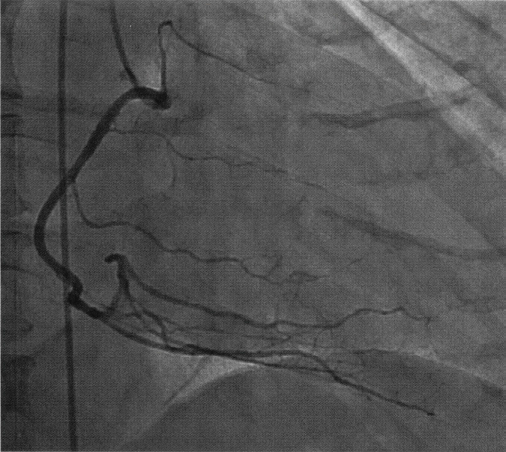
ａ 対角枝
ｂ 右冠動脈
ｃ 左回旋枝
ｄ 左主幹部
ｅ 左前下行枝
✅
ｂ 右冠動脈 ＋ ｅ 左前下行枝
心室中隔は左前下行枝（前部2/3）と右冠動脈の後下行枝（後部1/3）に灌流される。
❤️ 冠動脈の走行と灌流域——3本の枝と、それが養う場所
冠動脈は大動脈基部のValsalva洞から2本（左・右）出て、実質的には3本の主要枝になる。①左前下行枝〈LAD〉：前室間溝を心尖へ下る
灌流域＝左室前壁・心尖部・心室中隔前方2/3・右脚・左脚前枝
枝＝中隔穿通枝（中隔へ潜る）／対角枝（左室自由壁へ広がる）
心電図＝V1〜V4（前壁中隔）、V3〜V4（前壁）
②左回旋枝〈LCX〉：左房室間溝を後方へ回る
灌流域＝左室側壁・後壁／枝＝鈍縁枝／心電図＝Ⅰ・aVL・V5・V6（側壁）、V1・V2のST低下＋高R（後壁の鏡像）
③右冠動脈〈RCA〉：右房室間溝を回り、多くは後下行枝となる
灌流域＝右室・左室下壁・心室中隔後方1/3・洞結節（約60％）・房室結節（約90％）
心電図＝Ⅱ・Ⅲ・aVF（下壁）、V4R（右室）
優位性〈dominance〉：
後下行枝をどちらが出すかで決める——右優位型が約85〜90％、左優位型が約10％、均衡型が数％
心室中隔だけは2本がかりで養われる：
前方2/3＝左前下行枝の中隔穿通枝／後方1/3＝右冠動脈の後下行枝——この設問はまさにその「中隔は2本」という一点を問うている。
⚠️ 刺激伝導系も冠動脈に依存する——洞結節・房室結節は右冠動脈、右脚と左脚前枝は左前下行枝。下壁梗塞で徐脈・房室ブロック、前壁梗塞で脚ブロックが出るのはこのため。
□ 選択肢の検討
| 選択肢 | 解説 |
|---|---|
| ａ 対角枝 | 中隔は灌流しない。対角枝〈diagonal branch〉は左前下行枝から左前方（左室前壁・側壁）へ分岐する枝で、心室中隔へは向かわない。方向で覚える：左前下行枝は前室間溝を心尖へ下りながら、心室中隔側（右向き・深部）へは中隔穿通枝を、左室自由壁側（左向き・表面）へは対角枝を出す——同じ幹から左右対称に枝が出ていて、中隔を養うのは中隔穿通枝のほうである。掲示された左冠動脈造影（A）でも、太い前下行枝が心尖へ向かって走り、そこから左上方へ数本の対角枝が扇状に分かれている。対角枝の閉塞では前壁・側壁（心電図でⅠ・aVL・V5・V6）の虚血が出る。⚠️ 「対角枝＝中隔」と混同しやすいのは名前に方向感が乏しいためだが、対角枝が向かうのは自由壁である。 |
| ◯ ｂ 右冠動脈 | これが正解の一つ。右冠動脈は後下行枝〈後室間枝〉を出し、心室中隔の後方1/3を灌流する。右冠動脈の走行：右のValsalva洞から起始し、右房室間溝を回って、多くの人（約85〜90％）では心臓の後面で後下行枝となる＝右優位型〈right dominant〉——掲示された右冠動脈造影（B）でも、大きなC字を描いて下降した後、下縁に沿って後下行枝が走り、そこから中隔へ向かう細い枝が上向きに何本も出ている。右冠動脈が養う領域＝右室、下壁（左室後下壁）、心室中隔の後方1/3、洞結節（約60％）、房室結節（約90％）。⚠️ 下壁梗塞で徐脈・房室ブロックが出やすいのは、洞結節枝と房室結節枝の多くが右冠動脈由来だから——右室梗塞を合併していれば、前負荷依存になるので硝酸薬・利尿薬は避け、輸液で対応する。 |
| ｃ 左回旋枝 | 中隔は灌流しない。左回旋枝は左房室間溝を後方へ回り、左室の側壁・後壁を灌流する——枝は鈍縁枝〈obtuse marginal branch〉で、心室中隔へは向かわない。例外はどこか：約10％の人では左回旋枝が後下行枝を出す＝左優位型〈left dominant〉——この場合に限り左回旋枝が中隔後方1/3を養うが、設問がいう「一般的な」灌流としては右冠動脈が正解である。左回旋枝が閉塞すると側壁・後壁梗塞となり、Ⅰ・aVL・V5・V6のST上昇、あるいはV1・V2のST低下と高いR波（後壁の鏡像変化）として現れる——12誘導では直接見えにくいので背側誘導（V7〜V9）を追加する。⚠️ 「左回旋枝は左房室間溝、左前下行枝は前室間溝」——走る溝が違うことが領域の違いをそのまま決める。 |
| ｄ 左主幹部 | これは灌流領域を答える語ではない。左主幹部〈left main trunk；LMT〉は左冠動脈の起始部で、左前下行枝と左回旋枝へ分岐するまでの短い幹である——それ自身が心筋を養う枝をほとんど出さない「分配路」にすぎない。したがって「心室中隔を灌流している冠動脈」を問われたときに主幹部と答えるのは、階層を1つ取り違えている——主幹部の下流には中隔を養う枝も自由壁を養う枝も含まれる。⚠️ 臨床的な重みは別格：左主幹部病変は左室の大部分（前壁・側壁・中隔前方2/3）を一度に失いうるため、突然死・心原性ショックに直結する——50％以上の狭窄は冠動脈バイパス術の古典的適応で、薬物負荷試験は禁忌とされる。掲示された左冠動脈造影（A）でも、画面左上の太い幹が分岐して前下行枝と回旋枝になっているのが分かる。 |
| ◯ ｅ 左前下行枝 | これが正解の一つ。左前下行枝は中隔穿通枝〈septal perforator〉を出し、心室中隔の前方2/3を灌流する。中隔穿通枝の特徴：前室間溝から中隔の中へ垂直に潜り込む枝で、造影では前下行枝から下向き（深部方向）に短く分かれる細い枝として見える——掲示された左冠動脈造影（A）でも、前下行枝の走行に沿って画面下方へ向かう細い枝が並んでいる。左前下行枝の灌流域＝左室前壁・心尖部・心室中隔前方2/3、そして右脚と左脚前枝。⚠️ ここから前壁梗塞の合併症が出る：中隔が壊死すれば心室中隔穿孔、脚が壊死すれば右脚ブロックや左脚前枝ブロック、心尖部が壊死すれば心尖部瘤と左室内血栓。近位部閉塞は灌流域が最も広いため「widow maker」と呼ばれ、心不全・心原性ショックのリスクが高い。 |
🔍 冠動脈造影の読み方——AとBをどう見分けるか
設問のように「左冠動脈造影（A）と右冠動脈造影（B）」と示されたら、まず形で確かめる習慣をつける。左冠動脈造影の見え方：
短い主幹部から2本（前下行枝・回旋枝）に分かれ、Y字ないし逆V字を作る
前下行枝は心尖へ向かってまっすぐ下り、そこから対角枝が扇状に分かれる——掲示画像Aはこの形で、前下行枝に沿って多数の枝が並んでいる
中隔穿通枝は細く短く、前下行枝から直角に近い角度で分かれる
右冠動脈造影の見え方：
1本の血管が大きなC字（あるいは逆C字）を描く——掲示画像Bはまさにこの形で、房室間溝を回る太い1本と、その先で下縁に沿って走る後下行枝が見える
後下行枝からは中隔へ向かう細い枝が櫛の歯のように出る
AHA分類（番号での呼び方）：
右冠動脈＝＃1〜4／左主幹部＝＃5／左前下行枝＝＃6〜10／左回旋枝＝＃11〜15——カテーテル治療の記載はこの番号で書かれる
撮影方向の基本：
RAO（右前斜位）とLAO（左前斜位）、それにcranial（頭側）／caudal（尾側）を組み合わせ、枝が重ならない角度を選ぶ——左主幹部の分岐部はLAO caudal（spider view）でよく見える
⚠️ 造影は「内腔の影絵」しか映さない——外向きに拡大しているリモデリング型のプラークは内腔が保たれるため見えないことがあり、血管内超音波〈IVUS〉や光干渉断層法〈OCT〉、機能評価としての冠血流予備量比〈FFR〉が併用される。
🎯 国試ポイント
心室中隔は2本の冠動脈が分担する——前方2/3＝左前下行枝の中隔穿通枝／後方1/3＝右冠動脈の後下行枝。対角枝は左室自由壁（前壁・側壁）へ向かい、中隔は養わない。左回旋枝は側壁・後壁。左主幹部は分配路であって灌流域を語る語ではない。
右冠動脈＝右室・下壁・中隔後方1/3・洞結節（約60％）・房室結節（約90％）——下壁梗塞で徐脈と房室ブロックが出る理由。
左前下行枝＝前壁・心尖部・中隔前方2/3・右脚・左脚前枝——前壁梗塞で心室中隔穿孔・脚ブロック・心尖部瘤が出る理由。
後下行枝をどちらが出すかで優位性が決まり、右優位型が約85〜90％。
Q.4(119F-2)★一般42%
大腿静脈の周辺臓器の解剖で誤っているのはどれか。
ａ 鼠径靱帯は坐骨結節に付着する。
ｂ 鼠径靱帯の頭側には後腹膜腔がある。
ｃ 縫工筋は大腿三角の一辺を構成する。
ｄ 大腿静脈は大腿動脈の内側を走行する。
ｅ 大腿神経は大腿動脈の外側を走行する。
✅
ａ 鼠径靱帯は坐骨結節に付着する。（誤り）
鼠径靱帯は上前腸骨棘（ASIS）から恥骨結節に付着する。坐骨結節ではない。
❤️ 鼠径部の解剖——鼠径靱帯・大腿三角・NAVELの並び
鼠径部は「腹部と下肢の関所」で、大腿動脈穿刺・大腿静脈穿刺・大腿ヘルニアという3つの臨床場面がすべてここに集まる。①鼠径靱帯：
上前腸骨棘〈ASIS〉から恥骨結節へ張る。外腹斜筋腱膜の下縁が肥厚したもの
頭側＝腹腔・後腹膜腔／尾側＝大腿——この境界が「圧迫止血できるか否か」を分ける
②鼠径靱帯の下を通るもの（外側→内側）：
N＝大腿神経／A＝大腿動脈／V＝大腿静脈／E＝大腿管の空隙／L＝リンパ節（Cloquet節）——NAVEL
大腿鞘に包まれるのはA・V・大腿管の3つで、神経は鞘の外
③大腿三角〈Scarpa三角〉：
上辺＝鼠径靱帯／外側辺＝縫工筋内側縁／内側辺＝長内転筋内側縁
底＝腸腰筋・恥骨筋・長内転筋
④穿刺の実際：
大腿静脈＝拍動の約1cm内側／大腿動脈＝拍動そのもの。いずれも鼠径靱帯の1〜2cm末梢、大腿骨頭の上で刺す
⚠️ 頭側すぎる穿刺＝外腸骨動脈＝後腹膜血腫（圧迫できない）／末梢すぎる穿刺＝分岐後＝仮性動脈瘤・動静脈瘻
⑤ヘルニアの鑑別：
鼠径靱帯の頭側・内側＝鼠径ヘルニア／尾側・外側（大腿管）＝大腿ヘルニア——大腿ヘルニアは中高年女性に多く、頸部が狭いため嵌頓しやすい。
□ 選択肢の検討
| 選択肢 | 解説 |
|---|---|
| ◯ ａ 鼠径靱帯は坐骨結節に付着する。 | これが正解（誤っている記述）。鼠径靱帯は坐骨結節には付着しない——上前腸骨棘〈ASIS〉と恥骨結節を結ぶ靱帯である。何からできているか：外腹斜筋腱膜の下縁が折り返して肥厚したもので、腹壁と大腿の境界を作る——この靱帯の下（深部）を、外側から順に大腿神経・大腿動脈・大腿静脈・リンパ管が通る。⚠️ 坐骨結節は骨盤の後下方、殿部で座ったときに体重が乗る骨の隆起——そこに付くのはハムストリング（大腿二頭筋長頭・半腱様筋・半膜様筋）と仙結節靱帯であって、鼠径靱帯とは前後まったく別の場所である。大腿静脈穿刺の体表指標はこの鼠径靱帯なので、付着部を取り違えると穿刺点そのものを誤る——ASISと恥骨結合を結ぶ線を引き、その中点付近で大腿動脈の拍動を触れ、その内側を刺すのが基本手順である。 |
| ｂ 鼠径靱帯の頭側には後腹膜腔がある。 | 正しい記述なので、これは答えではない。鼠径靱帯の頭側（腹側）は腹腔・後腹膜腔であり、尾側（末梢側）が大腿である——鼠径靱帯は文字どおり腹部と下肢を分ける境界線。臨床的にこれが効く場面：大腿動脈穿刺の穿刺点が鼠径靱帯より頭側に入ってしまうと、外腸骨動脈を刺すことになり、出血が後腹膜腔へ流れ込む——後腹膜血腫は圧迫止血が効かず、体表に腫れとして現れないまま大量出血し、腰背部痛と原因不明のショックとして現れる。だから「鼠径靱帯より末梢で、大腿骨頭の上で刺す」＝骨を支えにして圧迫止血できる位置で刺す、というのが安全手技の要点である。逆に末梢すぎると大腿動脈が浅大腿動脈と深大腿動脈に分岐した後を刺すことになり、仮性動脈瘤や動静脈瘻を作りやすい。 |
| ｃ 縫工筋は大腿三角の一辺を構成する。 | 正しい記述なので、これは答えではない。大腿三角〈Scarpa三角〉は、上辺＝鼠径靱帯、外側辺＝縫工筋の内側縁、内側辺＝長内転筋の内側縁で囲まれる——縫工筋は確かに一辺を構成する。三角の中身：外側から内側へ、大腿神経・大腿動脈・大腿静脈・大腿管（リンパ節）が並ぶ——頭文字で NAVEL（Nerve, Artery, Vein, Empty space, Lymphatics）と覚える。底は外側から腸腰筋・恥骨筋・長内転筋が作り、樋のような溝になっている。この三角は大腿静脈穿刺・大腿動脈穿刺・大腿ヘルニアの手術・リンパ節生検の解剖学的舞台である。縫工筋は上前腸骨棘から脛骨内側（鵞足）へ斜めに走る人体最長の筋で、股関節屈曲・外転・外旋と膝屈曲に働く——「あぐらをかく筋」である。 |
| ｄ 大腿静脈は大腿動脈の内側を走行する。 | 正しい記述なので、これは答えではない。大腿静脈は大腿動脈の内側を走行する——これが大腿静脈穿刺の全手技を支える一文である。手順に翻訳すると：鼠径靱帯の1〜2cm末梢で大腿動脈の拍動を指で触れ、その約1cm内側を、皮膚に対して30〜45度で頭側へ向けて穿刺する——拍動を触れる指はそのまま置いておき、動脈を目印にし続ける。⚠️ 外側と内側を取り違えると動脈を刺す——動脈穿刺は仮性動脈瘤・後腹膜血腫・下肢虚血の原因になる。近年は超音波ガイド下穿刺が標準で、短軸像で「拍動して圧迫しても潰れない円形＝動脈」「圧迫すると潰れる楕円＝静脈」と確認してから刺す。中心静脈路として大腿静脈を選ぶ利点は気胸の危険が無く心肺蘇生中でも手技を妨げないことで、欠点は感染と深部静脈血栓症のリスクが高いこと。 |
| ｅ 大腿神経は大腿動脈の外側を走行する。 | 正しい記述なので、これは答えではない。大腿神経は大腿動脈の外側を走行する——鼠径靱帯の下では外側から順に「神経・動脈・静脈」（NAV）と並ぶ。ただし1つ注意がある：大腿神経は動脈・静脈と違って血管鞘〈大腿鞘〉の中には入らず、その外側で腸腰筋の上を走る——大腿鞘に包まれているのは動脈・静脈・大腿管の3つである。大腿神経は腰神経叢（L2〜L4）由来で、大腿四頭筋を支配し（膝伸展）、伏在神経として下腿内側の知覚を担う——麻痺すると膝折れが起こり、膝蓋腱反射が消失する。大腿神経ブロックは大腿骨頸部骨折の鎮痛に用いられ、超音波で腸腰筋の上・大腿動脈の外側に神経を同定して行う。⚠️ ここでも「外側＝神経」を誤ると、動脈内へ局所麻酔薬を注入する事故につながる。 |
🔍 大腿静脈穿刺——なぜ「内側」を刺すのかと、合併症の解剖学
大腿静脈路は、気胸を作らずに済む唯一の中心静脈路である——心肺蘇生中でも胸骨圧迫を止めずに確保でき、内頸静脈・鎖骨下静脈が使えない状況の受け皿になる。手順の要点：
1. 仰臥位、下肢を軽度外転・外旋させる（静脈が伸びて前面に出る）
2. ASISと恥骨結合を結ぶ線＝鼠径靱帯を確認し、その1〜2cm末梢で大腿動脈の拍動を触れる
3. 拍動の約1cm内側を、30〜45度で頭側へ向けて穿刺する
4. 超音波を使うなら短軸像で「圧迫すると潰れる＝静脈」を確認してから進める
合併症とその解剖学的理由：
動脈誤穿刺——内外を取り違えた／深く刺しすぎて静脈を貫通した。仮性動脈瘤・動静脈瘻・下肢虚血
後腹膜血腫——鼠径靱帯より頭側で外腸骨動脈を刺した。体表に出ないので発見が遅れ、腰背部痛と説明のつかないショックで現れる
感染・深部静脈血栓症——鼠径部は湿潤で汚染されやすく、下肢の静脈うっ滞も加わる。他の部位が使えるなら早期に入れ替える
大腿神経損傷——外側へ逸れた穿刺。大腿四頭筋麻痺と膝蓋腱反射消失
採血・カテーテルで拍動性の鮮紅色血が返ってきたら：
ただちに抜針して5〜10分以上しっかり圧迫する——拡張器やシースを進めてしまった場合は自分で抜かず、外科・血管内治療へ相談する（抜いた瞬間に止められない出血になる）。
⚠️ 「動脈は拍動する・圧迫しても潰れない・血液が鮮紅色で拍動性」の3点で確認する習慣が、すべての合併症の入口を塞ぐ。
🎯 国試ポイント
鼠径靱帯は上前腸骨棘〈ASIS〉と恥骨結節を結ぶ——坐骨結節ではない（そこに付くのはハムストリングと仙結節靱帯）。鼠径靱帯の下は外側から NAVEL＝神経・動脈・静脈・空隙・リンパ節——大腿静脈は大腿動脈の内側、大腿神経は外側。
大腿三角＝鼠径靱帯・縫工筋内側縁・長内転筋内側縁の3辺。
大腿静脈穿刺は鼠径靱帯の1〜2cm末梢、拍動の約1cm内側——頭側すぎると外腸骨動脈を刺して後腹膜血腫（圧迫止血できない）。
大腿神経は大腿鞘の外を走る（鞘の中は動脈・静脈・大腿管の3つ）。
Q.5(118F-13)★CBT一般91%
正常な心臓で分時心拍出量を増加させるのはどれか。
ａ 後負荷の減少
ｂ 心拍数の減少
ｃ 前負荷の減少
ｄ 冠血流量の減少
ｅ 甲状腺機能の低下
✅
ａ 後負荷の減少
後負荷（末梢血管抵抗）低下→心室が射出しやすくなる→心拍出量増加。
❤️ 心拍出量を決める4つの因子——前負荷・後負荷・収縮性・心拍数
分時心拍出量〈CO〉＝一回拍出量〈SV〉×心拍数〈HR〉——正常はおよそ4〜6L/分、体表面積で割った心係数は2.5〜4.0L/分/m2。一回拍出量を決める3因子：
①前負荷——拡張末期容積。静脈還流量で決まる。増えれば Frank-Starling 機序で SV 増加
増やす＝輸液・臥位・下肢挙上・徐脈（拡張期延長）／減らす＝出血・脱水・利尿薬・硝酸薬・立位・陽圧換気
②後負荷——大動脈圧と全末梢血管抵抗。減れば SV 増加
減らす＝血管拡張薬（ACE阻害薬・ARB・硝酸薬・ニトロプルシド）／増やす＝高血圧・大動脈弁狭窄・寒冷・昇圧薬
③収縮性〈contractility〉——前負荷・後負荷から独立した心筋固有の力。増えれば SV 増加
増やす＝交感神経刺激・カテコラミン・ジギタリス・甲状腺ホルモン／減らす＝虚血・心筋症・β遮断薬・低酸素・アシドーシス
④心拍数：
ある範囲までは CO を増やすが、過度の頻拍は拡張期を削って充満を損ない CO を落とす
圧-容積曲線で見る：
前負荷↑＝ループが右へ広がる／後負荷↓＝収縮末期容積が小さくなりループの幅（＝SV）が広がる／収縮性↑＝収縮末期圧容積関係の傾きが立つ
⚠️ 心不全ではこの4因子が互いに悪循環を作る——CO低下 → 交感神経とRAA系の活性化 → 前負荷も後負荷も上がる → さらにCO低下。心不全治療（ACE阻害薬・ARB・β遮断薬・利尿薬・MRA）は、この悪循環を断つために前負荷と後負荷を下げる方向で組み立てられている。
□ 選択肢の検討
| 選択肢 | 解説 |
|---|---|
| ◯ ａ 後負荷の減少 | これが正解。後負荷の減少は、正常心において一回拍出量を増やし、分時心拍出量を増加させる。後負荷とは何か：心室が血液を駆出するときに打ち勝たなければならない負荷＝主に大動脈圧と全末梢血管抵抗、および心室壁応力——ホースの先を指でつまむと水が出にくくなるのと同じで、抵抗が下がれば同じ力で多く出せる。圧-容積関係で言えば、後負荷が下がると駆出末期の容積（収縮末期容積）が小さくなり、その分だけ一回拍出量が増える。臨床での応用：血管拡張薬（アンジオテンシン変換酵素阻害薬・アンジオテンシンⅡ受容体拮抗薬・硝酸薬・ニトロプルシド）が心不全で心拍出量を改善するのは、この後負荷軽減による——とくに収縮不全の心不全や僧帽弁閉鎖不全では、後負荷を下げると前向き拍出が増えて劇的に効く。逆に大動脈弁狭窄のように固定された狭窄がある場合は、血管拡張で血圧だけが下がって冠灌流が落ちる危険がある——後負荷軽減が常に善ではない。 |
| ｂ 心拍数の減少 | むしろ減少させる。分時心拍出量＝一回拍出量×心拍数という定義そのものから、心拍数が減れば（一回拍出量が変わらなければ）心拍出量は減る。ただし単純ではない：徐脈になると拡張期が延びて心室充満が増えるため、Frank-Starling機序で一回拍出量が増え、ある程度までは心拍出量が保たれる——持久系アスリートの安静時徐脈（一回拍出量が大きい）はこの形である。逆に頻拍が過度になると拡張期が短くなりすぎて充満が足りず、心拍出量はかえって落ちる——心拍出量は心拍数に対して上に凸の曲線を描き、およそ150〜180/分を超えると低下に転じる。⚠️ 設問は「正常な心臓で増加させるのはどれか」なので、代償を織り込んだ議論ではなく定義どおりに読む——心拍数の減少は増加要因ではない。 |
| ｃ 前負荷の減少 | むしろ減少させる。前負荷は拡張末期の心室容積（＝心筋が引き伸ばされた度合い）で、静脈還流量によって決まる——Frank-Starlingの法則により、前負荷が増えれば一回拍出量は増え、減れば減る。なぜそうなるのか：心筋が適度に引き伸ばされるとアクチンとミオシンの重なりが最適化され、さらにトロポニンCのCa感受性が上がって収縮力が増す。前負荷が減る場面＝出血・脱水・利尿薬・硝酸薬（静脈拡張）・立位・陽圧換気・心タンポナーデ——いずれも心拍出量を減らす方向に働く。⚠️ ただし「前負荷は多いほどよい」ではない——過剰な前負荷は肺うっ血を生み、また不全心では Frank-Starling 曲線が平坦なので、容積を増やしても拍出量が増えず肺水腫だけが進む。右室梗塞では逆に前負荷依存性が強く、輸液が治療になる。 |
| ｄ 冠血流量の減少 | 増加させない。冠血流量は「心臓自身を養う血流」であって、心臓が全身へ送り出す量（心拍出量）とは別の量である——冠血流は心拍出量のおよそ5％にあたる。因果の向き：冠血流が減れば心筋が虚血に陥り、収縮力が落ちて心拍出量は「減る」——増える方向には決してならない。冠循環の特徴：左冠動脈の血流は拡張期に流れる——収縮期には心筋内圧が高くて血管が圧迫されるため。だから頻拍（拡張期の短縮）や拡張期血圧の低下は冠灌流を悪くする。冠灌流圧＝拡張期大動脈圧−左室拡張末期圧という式が、大動脈弁狭窄や心不全で心内膜下虚血が起こる理由を説明する。⚠️ 「冠血流量の減少」と「心拍出量」を同じ土俵に並べているところが、この選択肢の引っかけである。 |
| ｅ 甲状腺機能の低下 | むしろ減少させる。甲状腺ホルモンは心血管系に対して強い作用を持ち、機能低下では心拍出量が減る。甲状腺機能低下症の循環動態：徐脈・心収縮力低下・末梢血管抵抗の上昇・循環血液量の減少 → 心拍出量低下——身体所見としては徐脈、脈圧の狭小化、四肢の冷感、心嚢液貯留（心陰影拡大）。逆に機能亢進症では：頻脈・心収縮力増加・末梢血管抵抗の低下 → 高拍出状態となり、脈圧は増大する——長期に続けば高拍出性心不全や心房細動を招く。機序としては、甲状腺ホルモンが心筋のβ受容体密度とCa輸送蛋白（SERCA2a）の発現を増やし、同時に血管平滑筋を直接弛緩させる。⚠️ 「甲状腺機能亢進症＝脈圧増大／低下症＝脈圧狭小」は、同じ第1章の脈圧の設問と対で覚えておくと得。 |
🔍 後負荷軽減が効く病態・効かない病態
「後負荷を下げれば心拍出量が増える」は正常心と収縮不全心では正しいが、すべての病態に当てはまるわけではない。よく効く病態：
①収縮不全の心不全（HFrEF）——Frank-Starling曲線が平坦で後負荷依存性が強いので、後負荷を下げると前向き拍出が大きく増える
②僧帽弁閉鎖不全——後負荷を下げると大動脈へ出る抵抗が減り、左房への逆流が減って前向き拍出が増える
③大動脈弁閉鎖不全——末梢抵抗を下げ、心拍数を保つ（拡張期を短くする）と逆流量が減る
④高血圧緊急症・急性心不全（クリニカルシナリオ1）——硝酸薬静注が第一手
使ってはいけない・慎重にすべき病態：
①重症大動脈弁狭窄——狭窄が固定されているので拍出量は増えず、末梢抵抗だけ下がって血圧が落ち、冠灌流と脳灌流が破綻する
②閉塞性肥大型心筋症——後負荷や前負荷を下げると左室流出路の閉塞がかえって強まる（左室が小さくなるほど閉塞する）
③右室梗塞——前負荷依存性が強く、硝酸薬・利尿薬で容易にショックになる。治療は輸液
④心タンポナーデ・収縮性心膜炎——拡張が外から制限されているので、後負荷を下げても充満は増えない
この違いを一言で：
「出口の抵抗」が問題なら後負荷軽減が効き、「出口が物理的に狭い／入口が制限されている」なら効かないどころか害になる。
⚠️ 硝酸薬は低用量では静脈拡張（前負荷軽減）、高用量では動脈拡張（後負荷軽減）——用量で作用の重心が変わることも押さえておく。
🎯 国試ポイント
心拍出量＝一回拍出量×心拍数。一回拍出量は前負荷（↑で増）・後負荷（↓で増）・収縮性（↑で増）の3因子で決まる。後負荷の減少＝心拍出量の増加——心拍数の減少・前負荷の減少・甲状腺機能の低下はいずれも減少要因。
冠血流量は心臓自身を養う血流であって心拍出量とは別の量——減れば虚血で心拍出量はむしろ落ちる。
左冠動脈血流は拡張期に流れる——頻拍・拡張期血圧低下・左室拡張末期圧上昇はいずれも冠灌流を悪くする。
後負荷軽減が禁忌なのは重症大動脈弁狭窄・閉塞性肥大型心筋症・右室梗塞・心タンポナーデ。
Q.6(118F-21)★CBT一般99%
高齢者で増大するのはどれか。
ａ 骨 量
ｂ 脈 圧
ｃ 肺活量
ｄ 心拡張能
ｅ 糸球体濾過量
✅
ｂ 脈圧
加齢により大動脈の硬化→収縮期血圧↑・拡張期血圧↓（または不変）→脈圧拡大。
❤️ 加齢による生理機能の変化——増えるもの・減るもの
加齢の設問は「ほとんどの機能は落ちる。増えるものだけ覚える」と割り切ると速い。増えるもの（少数派）：
脈圧・収縮期血圧・全末梢血管抵抗・脈波伝播速度——大動脈が硬くなるため
残気量・機能的残気量——肺の弾性収縮力低下で吐き切れないため
体脂肪率・脂肪の相対量／血清副甲状腺ホルモン、収縮期心雑音の頻度、Ⅳ音の頻度
減るもの（大多数）：
循環——最大心拍数（およそ220−年齢）、最大心拍出量、心拡張能（E/A比）、圧受容器反射の感度、洞結節細胞数
呼吸——肺活量、1秒量、PaO2、肺の弾性収縮力、線毛運動
腎——GFR、腎血流量、尿濃縮力・希釈力、口渇感
その他——骨量、筋肉量、体内水分量、免疫能、肝血流量、薬物代謝能、皮膚の弾力
この設問の型を見抜く：
循環器の第1章に置かれた「高齢者で増大するのはどれか」は、ほぼ確実に脈圧を答えさせる問題——脈圧が「大動脈の硬化」という一語で説明でき、収縮期高血圧という頻出の臨床像に直結するから。
⚠️ 「残気量は増える」だけは呼吸器側の例外として押さえておくこと——肺活量が減るのと同じ機序（弾性収縮力の低下）から出るのに、向きが逆になる。
□ 選択肢の検討
| 選択肢 | 解説 |
|---|---|
| ａ 骨 量 | 加齢で減少する。骨量は男女とも20〜30歳代でピーク（最大骨量）に達し、その後は加齢とともに減少する——とくに女性は閉経後にエストロゲンが急減するため、閉経後5〜10年で急峻に失われる。機序：エストロゲンは破骨細胞のアポトーシスを促し骨吸収を抑えているので、失われると骨吸収が骨形成を上回る（高回転型骨粗鬆症）。男性でも加齢とともに骨形成が低下して緩やかに減る。診断は腰椎・大腿骨近位部の骨密度で、若年成人平均値〈YAM〉の70％以下、あるいは脆弱性骨折の既往で骨粗鬆症とする。⚠️ 「高齢者で増大するもの」を問う設問では、多くの選択肢が加齢で減る生理機能で埋められる——増える数少ないものを覚えておくほうが早い。 |
| ◯ ｂ 脈 圧 | これが正解。脈圧は加齢とともに増大する——大動脈の弾性線維が減って硬くなり（動脈硬化・stiffening）、収縮期に大動脈が膨らんで血液を溜める能力〈Windkessel機能〉が失われるため。何が起きるか：①収縮期には大動脈が膨らまないので圧が逃げ場を失い、収縮期血圧が上昇する／②拡張期には溜めた血液を押し出す弾性反跳が働かないので、拡張期血圧はむしろ低下ないし横ばいになる——上が上がり下が下がるので、その差である脈圧は必ず広がる。加えて、硬い血管では脈波の伝播速度が速くなり、末梢からの反射波が拡張期ではなく収縮期に戻ってくるため、収縮期圧をさらに押し上げる。結果として高齢者に多いのが収縮期高血圧（収縮期血圧140以上・拡張期血圧90未満）。⚠️ 脈圧の拡大そのものが心血管イベントの独立した危険因子で、60mmHg以上は動脈硬化の指標とされる。脈波伝播速度〈PWV〉や心臓足首血管指数〈CAVI〉は、この血管の硬さを数値化した検査である。 |
| ｃ 肺活量 | 加齢で減少する。肺活量は加齢とともに低下する——理由は3つ：①肺の弾性収縮力の低下（肺胞壁の弾性線維が減る）／②胸郭のコンプライアンス低下（肋軟骨の石灰化・脊柱後弯）／③呼吸筋力の低下。一方で残気量と機能的残気量は増加する——弾性収縮力が落ちると呼気の終わりに末梢気道が早く閉じてしまい（閉塞性の要素）、息を吐き切れなくなるため。全肺気量はほぼ不変なので、残気量が増えたぶん肺活量が減る、という関係になる。1秒率も加齢とともに緩やかに低下し、動脈血酸素分圧も換気血流比の不均等が増して低下する——PaCO2は変わらない。⚠️ 「残気量は増える」ので、肺の指標がすべて減るわけではない——肺活量と残気量を取り違えないこと。 |
| ｄ 心拡張能 | 加齢で低下する。心拡張能（心室が拡がって血液を受け入れる能力）は加齢とともに低下する——心筋の線維化と心筋細胞の肥大、そして後負荷（硬い大動脈）の増大による代償性左室肥大が背景。現れ方：拡張早期の急速流入（E波）が減り、心房収縮による充満（A波）への依存が増す＝僧帽弁流入血流のE/A比の低下（弛緩障害パターン）——心エコーで加齢とともに規則的に見られる変化。臨床的な帰結が、高齢者に多い左室駆出率の保たれた心不全〈HFpEF〉——収縮は正常なのに拡張が悪いために肺うっ血をきたす。⚠️ 心房収縮への依存が強いことから、高齢者は心房細動になると一気に心不全へ傾く——心房収縮の消失（atrial kick の喪失）で充満量が20〜30％落ちるため。Ⅳ音が聴取されやすいのも同じ理由による。 |
| ｅ 糸球体濾過量 | 加齢で減少する。糸球体濾過量〈GFR〉は30歳代を過ぎると年におよそ0.8〜1.0mL/分/1.73m2ずつ低下する——ネフロン数の減少、糸球体硬化、腎血流量の低下による。腎重量も加齢とともに減り、80歳では若年時の2〜3割が失われる。⚠️ ここに臨床上きわめて重要な落とし穴がある：高齢者では筋肉量が減っているため、GFRが低下していても血清クレアチニン値は正常範囲にとどまることがある——だからクレアチニン値だけを見ず、年齢・性別・体格を織り込んだ推算GFR〈eGFR〉やクレアチニンクリアランスで評価する。薬物投与量の設計（ジゴキシン・直接経口抗凝固薬・抗菌薬・造影剤）はこのeGFRに基づいて行う——「クレアチニンが正常だから腎機能は正常」という読みが、高齢者の薬剤性腎障害と中毒の温床になる。 |
🔍 高齢者の収縮期高血圧——Windkessel機能の喪失と反射波
若い大動脈は、収縮期に膨らんで血液の一部を溜め、拡張期に縮んでそれを末梢へ送り出す——この「弾性の貯水槽」としての働きを Windkessel 機能という。Windkessel機能があると何が起きるか：
①収縮期の圧の上がりすぎを吸収する（収縮期血圧が抑えられる）
②拡張期に血液を押し出し続けるので、拡張期血圧が保たれ、拡張期に流れる冠血流が確保される
加齢で弾性線維が減り、コラーゲンが増えると：
①収縮期血圧が上がる（吸収してくれない）
②拡張期血圧が下がる（押し出してくれない）
③脈波伝播速度〈PWV〉が速くなり、末梢の分岐部からの反射波が拡張期ではなく収縮期のうちに戻ってきて、収縮期のピークをさらに高くする
結果＝収縮期高血圧（収縮期140以上／拡張期90未満）と脈圧の拡大
臨床的な帰結：
後負荷の増大 → 左室肥大 → 拡張障害 → HFpEF（駆出率の保たれた心不全）
拡張期血圧の低下 → 冠灌流圧の低下 → 心内膜下虚血が起こりやすい
脈圧拡大そのものが脳卒中・心筋梗塞・腎機能低下の独立した危険因子
治療上の注意：
高齢者の収縮期高血圧も降圧の対象で、降圧により脳卒中・心不全が減ることが示されている——ただし拡張期血圧を下げすぎると冠灌流が損なわれるため、少量から緩やかに、起立性低血圧と転倒に注意して調整する。
血管の硬さの指標としてPWV・CAVI・augmentation indexがあり、いずれも加齢と動脈硬化で上昇する。
🎯 国試ポイント
高齢者で増大するのは脈圧——大動脈の硬化でWindkessel機能が失われ、収縮期血圧が上がり拡張期血圧が下がるため。骨量・肺活量・心拡張能・糸球体濾過量はいずれも加齢で低下する。
加齢で増えるものは少数＝脈圧・収縮期血圧・末梢血管抵抗・脈波伝播速度・残気量・機能的残気量・体脂肪率。
高齢者の収縮期高血圧（収縮期140以上・拡張期90未満）は脈圧拡大の臨床像——左室肥大からHFpEFへ、拡張期血圧低下から心内膜下虚血へつながる。
高齢者は筋肉量が少ないため血清クレアチニンが正常でもGFRは低下している——eGFRで評価し薬用量を決める。
Q.7(117C-8)★CBT一般📷 画像96%
経食道心エコー図（A，B）を示す。
矢印の構造物として正しいのはどれか。
矢印の構造物として正しいのはどれか。
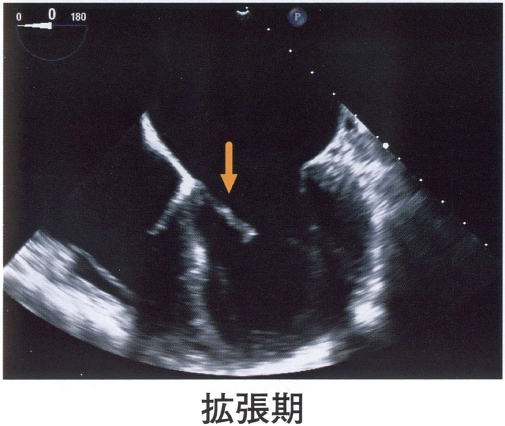
ａ 僧帽弁
ｂ 三尖弁
ｃ 大動脈弁
ｄ 肺動脈弁
ｅ 心房中隔
✅
ａ 僧帽弁
経食道心エコーでは食道→左房→僧帽弁→左室が明瞭に描出される。
❤️ 経食道心エコー〈TEE〉——何が見えて、何のために行うか
経食道心エコーは、プローブを食道内に入れて心臓を背側から観察する検査である——食道と左房の間には肺も骨も無いので、高い周波数（＝高分解能）の探触子を使える。解剖の並び（これが読影の土台）：
プローブ（食道）→ 左房 → 僧帽弁 → 左室——画面の上（近位）から順にこの順で並ぶ
右心系はさらに奥（プローブから遠い側）に来る
経食道心エコーが特に強い対象：
①左心耳内血栓——心房細動の除細動前・カテーテルアブレーション前に必須。経胸壁では左心耳は見えない
②感染性心内膜炎の疣腫——経胸壁の感度は約60〜70％、経食道では90％以上
③僧帽弁の詳細——逸脱している弁尖・腱索断裂の部位同定、弁形成術の術中評価
④心房中隔欠損・卵円孔開存——型の診断とカテーテル閉鎖のガイド
⑤大動脈解離——フラップの描出。血行動態が不安定でベッドサイドで判断したい場面に強い
⑥人工弁の機能評価——機械弁の音響陰影を避けて左房側から見られる
限界と合併症：
心尖部・左室前壁は遠くて見えにくい／食道狭窄・食道静脈瘤・穿孔リスクのある症例では禁忌／鎮静を要し、咽頭麻酔・嘔吐反射・まれに食道損傷
⚠️ 検査前は絶食を確認する——誤嚥は最も現実的な合併症である。
□ 選択肢の検討
| 選択肢 | 解説 |
|---|---|
| ◯ ａ 僧帽弁 | これが正解。矢印が指しているのは僧帽弁である。画像から読めること：プローブは画面最上部（食道内）にあり、そのすぐ下に広がる腔が左房、さらに深部の厚い壁に囲まれた腔が左室——矢印はその境界にある弁を指している。「収縮期」の像（A）では弁が閉じて1本の線として左房側へわずかに膨らみ、「拡張期」の像（B）では2枚の弁尖が左室内腔へ大きく開いて逆V字を作っている——この開閉の様子そのものが房室弁であることを示す。なぜ経食道心エコーで僧帽弁がよく見えるのか：食道は左房のすぐ背側を走る——間に肺も肋骨も挟まないので、左房・僧帽弁・左房付属器（左心耳）・肺静脈が高い分解能で描出される。⚠️ 逆に、経食道心エコーは心尖部や左室前壁の描出には向かない——プローブから最も遠い（深い）位置に来るためである。 |
| ｂ 三尖弁 | これではない。三尖弁は右房と右室の境界にある房室弁で、経食道心エコーの食道中部像では、プローブから見て奥（画面の右側ないし深部）に位置する——矢印が指している、プローブ直下の左房に接する弁ではない。三尖弁を見るには：食道中部四腔断面では画面の右側に右房と右室が並んで映り、その間に三尖弁がある——本問の画像は四腔断面ではなく、左房・僧帽弁・左室を軸に切った二腔ないし長軸像で、右心系は写っていない。三尖弁は3尖（前尖・中隔尖・後尖）からなり、僧帽弁より心尖側にわずかにずれて付着する——この付着位置のずれが大きくなる（心尖側へ偏位する）のがEbstein奇形である。⚠️ 感染性心内膜炎で三尖弁が侵されるのは静注薬物使用者・カテーテル留置例で、右心系の疣腫は肺塞栓を起こす——左心系の疣腫が全身塞栓を起こすのと対をなす。 |
| ｃ 大動脈弁 | これではない。大動脈弁は左室流出路の出口にある半月弁で、房室弁とは開閉の位相が逆である——収縮期に開き、拡張期に閉じる。画像と照らし合わせる：提示された像では、「収縮期」で閉じ「拡張期」で開いている——これは半月弁ではありえない動きで、房室弁の動きそのものである。この「いつ開くか」の一点だけで、大動脈弁と肺動脈弁は候補から外れる。大動脈弁は3尖（右冠尖・左冠尖・無冠尖）で、短軸像ではベンツマークのような形に見える——2尖しかない大動脈二尖弁は最も頻度の高い先天性心疾患の一つで、若年での大動脈弁狭窄・上行大動脈拡張の原因になる。⚠️ 心エコーの読影ではまず「収縮期か拡張期か」を確かめる——位相が分かれば、どの弁が開いていて当然かが自動的に決まる。 |
| ｄ 肺動脈弁 | これではない。肺動脈弁は右室流出路の出口にある半月弁で、大動脈弁と同じく収縮期に開き拡張期に閉じる——提示画像の動きと位相が逆なので候補から外れる。位置の点でも合わない：肺動脈弁は心臓の中で最も前方かつ左上方にある弁で、食道からは最も遠い——経食道心エコーではむしろ描出しにくく、専用の断面（食道上部の右室流出路像）を取りに行く必要がある。逆に経胸壁心エコーでは胸骨左縁短軸像で比較的よく見える——「食道から近いものは経食道で、胸壁から近いものは経胸壁で見やすい」という当たり前の原則が、そのまま断面の選択になる。⚠️ 肺動脈弁狭窄はFallot四徴症の構成要素の一つであり、単独では乳児期に無症状で経過して学校健診の心雑音で見つかることが多い。 |
| ｅ 心房中隔 | これではない。心房中隔は右房と左房を隔てる壁であって、開閉する構造物ではない——矢印が指すものは収縮期と拡張期で形を大きく変えており、隔壁ではありえない。心房中隔と経食道心エコー：心房中隔の観察はむしろ経食道心エコーの得意分野で、心房中隔欠損の型（二次孔・一次孔・静脈洞型）の診断、卵円孔開存の検出、カテーテル閉鎖術の術中ガイドに用いられる——生理食塩水を撹拌したマイクロバブルを静注し、右房から左房へ泡が流れるかを見る（バブルコントラスト法）。本問の断面では左房とその奥の左室が主役で、心房中隔は画面に含まれていない。⚠️ 矢印問題では「その構造が何をしているか（動くか・動かないか、いつ開くか）」を先に見る——形の記憶だけに頼ると、断面が変わった途端に答えられなくなる。 |
🔍 弁を見分ける2つの鍵——「位相」と「隣の部屋」
心エコーの矢印問題は、暗記ではなく2つの問いで解ける。鍵1：いつ開くか（位相）：
房室弁（僧帽弁・三尖弁）＝拡張期に開き、収縮期に閉じる
半月弁（大動脈弁・肺動脈弁）＝収縮期に開き、拡張期に閉じる
本問のように「収縮期」「拡張期」と注記のある2枚が並んでいるときは、この一点で答えが半分に絞れる
鍵2：どの部屋とどの部屋の間にあるか：
薄い壁の腔（心房）と厚い壁の腔（心室）の間 → 房室弁
厚い壁の腔（心室）と管状の構造（大血管）の間 → 半月弁
さらに左右は壁の厚さで決まる——左室は右室のおよそ3倍厚く、断面では丸く、右室は三日月形に左室へ張りつく
房室弁が「左右どちらか」を決める補助所見：
三尖弁は僧帽弁よりわずかに心尖側で中隔に付着する（オフセット）
僧帽弁は2尖・三尖弁は3尖
右室には調節帯〈moderator band〉と粗い肉柱があり、左室内面は滑らか
この考え方が効く典型問題：
「矢印の構造物はどれか」「異常があるのはどの部位か」といった同定問題は、循環器・放射線科を通じて繰り返し出る——断面の名前を覚えるのではなく、位相と隣接関係から毎回導けるようにしておくと、見たことのない断面でも答えられる。
⚠️ 画像に添えられた文字情報（「収縮期」「拡張期」、深度目盛り、プローブ角度の表示）を読み落とさないこと——出題者はそれを手がかりとして意図的に残している。
🎯 国試ポイント
経食道心エコーの並びは「食道 → 左房 → 僧帽弁 → 左室」——プローブ直下に映る大きな腔は左房。房室弁は拡張期に開き収縮期に閉じる／半月弁はその逆——「収縮期に閉じている弁」は大動脈弁・肺動脈弁ではありえない。
経食道心エコーの適応＝左心耳血栓・感染性心内膜炎の疣腫・僧帽弁の詳細評価・心房中隔欠損／卵円孔開存・大動脈解離・人工弁。
禁忌は食道狭窄・食道静脈瘤など。検査前の絶食確認を怠らない。
心尖部・左室前壁は経食道では見えにくく、経胸壁が優る。
Q.8(116A-5)★一般97%
我が国での成人心臓移植について正しいのはどれか。
ａ 10 年生存率は約10％である。
ｂ 年間約1,000 例行われている。
ｃ 原疾患は拡張型心筋症が最も多い。
ｄ 原則として術後に免疫抑制薬は用いられない。
ｅ 2015 年以降の平均待機期間は1 年以下である。
✅
ｃ 原疾患は拡張型心筋症が最も多い。
日本の心臓移植の最多適応疾患は拡張型心筋症（約50%）。
❤️ 我が国の心臓移植——数・適応・成績
心臓移植は、最大限の内科治療と外科治療を行ってもなお生命予後が不良な重症心不全に対する最終手段である。①数と待機：
年間実施数は数十例規模（欧米の数十分の一）／平均待機期間は3年前後
1997年の臓器移植法施行後は年間10例前後、2010年の改正法（家族の承諾で提供可能）以降に増加
②原疾患（日本）：
拡張型心筋症が最多（約半数〜6割）＞拡張相肥大型心筋症＞虚血性心筋症＞その他
欧米では虚血性心筋症の比率が高いのが対照的
③適応の考え方：
NYHAⅢ〜Ⅳ度で、標準的な薬物治療・非薬物治療（CRT／ICD）を尽くしても改善しない重症心不全
除外条件＝不可逆的な肺高血圧、活動性感染症、悪性腫瘍、重度の腎肝障害、薬物依存、治療への非遵守が予想される場合、年齢の上限（おおむね65歳未満）
④待機中の支持：
植込み型補助人工心臓〈VAD〉によるbridge to transplant〈BTT〉／移植を前提としない永久使用〈destination therapy〉も国内承認済み
⑤術後管理：
生涯の免疫抑制（カルシニューリン阻害薬＋代謝拮抗薬＋ステロイド）／心筋生検による拒絶反応の監視／長期合併症＝移植心冠動脈病変〈CAV〉、感染症、悪性腫瘍、腎障害
⑥成績：
日本の10年生存率は約90％で国際登録（約50〜60％）を大きく上回る
⚠️ 移植心は除神経されているため、狭心痛を感じない——移植心冠動脈病変は無症候性に進行し、突然死・心不全として現れる。だから定期的な冠動脈評価が要る。
□ 選択肢の検討
| 選択肢 | 解説 |
|---|---|
| ａ 10 年生存率は約10％である。 | 数字が実際と大きく異なる。我が国の心臓移植後の生存率は国際水準を大きく上回り、10年生存率はおよそ90％前後である——「約10％」は桁違いに低い。なぜ日本の成績が良いのか：ドナーが極端に少ないぶん、レシピエントの選定・術前管理・術後の免疫抑制と拒絶反応監視が非常に厳格に行われている——適応判定は施設ごとではなく全国規模の委員会で審査される。国際心肺移植学会の登録では10年生存率はおよそ50〜60％で、日本の成績はこれを明確に上回る。⚠️ ただし成績が良いことは「移植が広く行き渡っている」ことを意味しない——むしろドナー不足のため待機中に亡くなる患者が相当数いる、という別の問題と裏表になっている。この構造は腎移植・肝移植とも共通する日本の臓器移植の特徴である。 |
| ｂ 年間約1,000 例行われている。 | 桁が違う。我が国の心臓移植は年間数十例規模で、「年間約1,000例」というような数には遠く及ばない。経緯：1997年の臓器移植法施行後しばらくは年間10例前後にとどまり、2010年の改正法で本人の書面による意思表示が無くても家族の承諾で提供できるようになってから増加した——それでも年間50〜100例程度の水準である。米国では年間3,000例を超えており、人口比で見ても差は大きい。数が伸びない理由：脳死下臓器提供そのものが少ないことが最大の要因で、提供施設の体制・家族への選択肢提示・社会的な認知のいずれもが関わる。この供給の少なさが、後述する長い待機期間と、その間を支える補助人工心臓〈VAD〉の重要性に直結している。 |
| ◯ ｃ 原疾患は拡張型心筋症が最も多い。 | これが正解。我が国の心臓移植の原疾患は拡張型心筋症が最も多く、全体のおよそ半数から6割を占める——次いで拡張相肥大型心筋症、虚血性心筋症、その他（拘束型心筋症・先天性心疾患・二次性心筋症）と続く。欧米との違い：欧米では虚血性心筋症（心筋梗塞後の重症心不全）の割合が高く、拡張型心筋症と並ぶ——日本で拡張型心筋症が突出するのは、虚血性心疾患の有病率が相対的に低いことに加え、若年で発症して他に治療手段が無くなる患者が移植へ集まりやすいため。拡張型心筋症とは：左室の拡大と収縮能低下を特徴とし、明らかな原因（虚血・弁膜症・高血圧）を欠く心筋疾患——約3割に家族性があり、心筋の構造蛋白（タイチン・ラミンA/Cなど）の遺伝子変異が知られる。⚠️ 治療は心不全の標準治療（ACE阻害薬／ARNI・β遮断薬・MRA・SGLT2阻害薬）＋両心室ペーシング／植込み型除細動器で、それでも進行する例が移植の対象になる。 |
| ｄ 原則として術後に免疫抑制薬は用いられない。 | まったく逆である。心臓移植後は、生涯にわたって免疫抑制薬の内服が必要である——移植心は他人の臓器であり、免疫抑制を止めれば必ず拒絶反応が起こる。標準的な組み合わせ：①カルシニューリン阻害薬（タクロリムス／シクロスポリン）＋②代謝拮抗薬（ミコフェノール酸モフェチル／アザチオプリン）＋③副腎皮質ステロイドの3剤併用——作用点の異なる薬を組み合わせることで、それぞれの用量を抑えて副作用を減らす。免疫抑制の代償：感染症（サイトメガロウイルス・ニューモシスチス・真菌）、悪性腫瘍（移植後リンパ増殖性疾患・皮膚癌）、腎障害（カルシニューリン阻害薬）、糖尿病・高血圧・脂質異常症——だから予防内服（ST合剤など）とワクチン、定期的な腫瘍スクリーニングが組み合わされる。拒絶反応の監視には心筋生検が用いられ、移植後早期ほど頻回に行う。 |
| ｅ 2015 年以降の平均待機期間は1 年以下である。 | 実際ははるかに長い。我が国の心臓移植の平均待機期間は3年前後（1,000日を超える）で、「1年以下」ではない——ドナー不足がそのまま待機期間として現れている。待機期間の長さが生む臨床：待機中の循環を支えるために植込み型補助人工心臓〈VAD〉が用いられる——これを移植までの橋渡しという意味で bridge to transplant〈BTT〉と呼ぶ。日本では待機が長いため、装着期間も年単位に及び、在宅で待機する患者が多い。VADの主な合併症は脳血管障害（出血・塞栓）、ドライブライン感染、ポンプ血栓、消化管出血——抗凝固療法の管理が生命線になる。近年は移植を前提としない永久使用〈destination therapy；DT〉も国内で承認され、移植適応外の高齢者にも道が開かれた。⚠️ 「日本の心臓移植は成績が良いが、数が少なく待機が長い」——この3点セットで覚えると、どの選択肢が誤りかが自動的に見える。 |
🔍 補助人工心臓〈VAD〉——待機期間が長い国の必然
日本の心臓移植を理解する鍵は「待機3年」という数字である——その3年をどう生き延びるかが臨床の中心課題になり、そこに補助人工心臓が位置する。VADの分類：
①体外設置型——急性期・短期。心原性ショックからの回復を待つ、あるいは方針決定までの時間を稼ぐ
②植込み型（連続流ポンプ）——長期。在宅療養が可能で、日本のBTTの主力
連続流ポンプでは拍動が乏しくなるため、脈が触れにくく血圧計での測定も難しい（ドプラで平均血圧を測る）
目的による呼び分け：
BTT（bridge to transplant）＝移植までの橋渡し
BTR（bridge to recovery）＝心機能の回復を期待して一時的に補助（劇症型心筋炎など）
BTD（bridge to decision）＝方針決定までのつなぎ
DT（destination therapy）＝移植を前提としない永久使用
主要合併症（頻出）：
①脳血管障害——抗凝固と血栓のバランスが崩れると出血にも塞栓にも振れる。最大の死因
②ドライブライン感染——体外へ出る電源ケーブルの刺入部。長期管理の要
③ポンプ血栓——溶血（LDH上昇・血色素尿）と消費電力の増加で気づく
④消化管出血——連続流による後天性von Willebrand症候群と、拍動消失に伴う消化管の動静脈奇形
心臓移植との対比で押さえる：
VADは機械なので待たずに使えるが、感染と血栓という機械固有の問題を抱え続ける／移植は生理的な循環を取り戻せるが、ドナーを待つ時間と生涯の免疫抑制を要する
⚠️ 劇症型心筋炎のように「回復しうる心不全」では、移植ではなく一時的補助（PCPS／IMPELLA／体外設置型VAD）で時間を稼ぐのが正しい——可逆性の判断を誤らないこと。
🎯 国試ポイント
我が国の心臓移植の原疾患は拡張型心筋症が最多（約半数〜6割）——欧米では虚血性心筋症の比率が高い。年間実施数は数十例規模、平均待機期間は3年前後（1年以下ではない）。10年生存率は約90％と国際水準（50〜60％）より良好。
術後は生涯にわたり免疫抑制薬（カルシニューリン阻害薬＋代謝拮抗薬＋ステロイド）が必要。
待機を支えるのが植込み型補助人工心臓＝bridge to transplant——合併症は脳血管障害・ドライブライン感染・ポンプ血栓・消化管出血。
移植心は除神経されるため狭心痛が出ない——移植心冠動脈病変は無症候性に進行する。
Q.9(115F-17)★一般📷 画像91%
縦隔条件の胸部造影CT を示す。
異常所見を示す心臓の部位はどこか。
異常所見を示す心臓の部位はどこか。
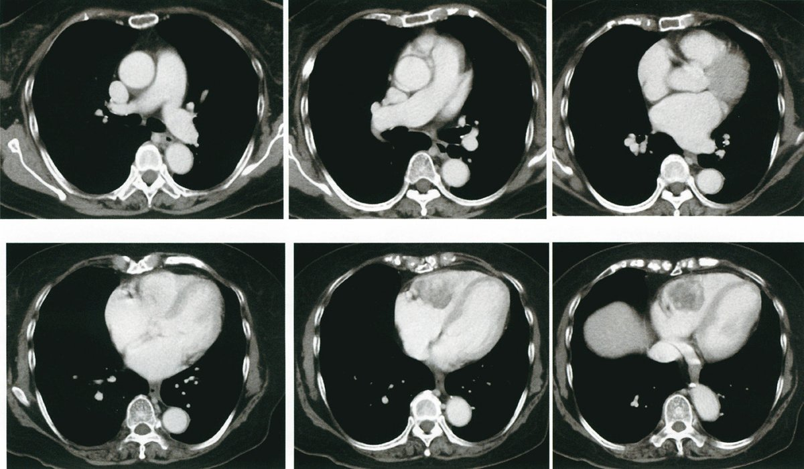
ａ 右 房
ｂ 左 房
ｃ 肺動脈
ｄ 右心室
ｅ 左心室
✅
ｄ 右心室
心室レベルの横断像で、胸骨のすぐ背側＝最も前方にある心腔の内部に、造影された血液とは別の、境界明瞭な低吸収の円形構造（充盈欠損）がある。心臓の中で胸骨直後に位置する心腔は右心室であり、異常所見は右心室内にある。右房は心陰影の右縁を、左房は最も背側（食道・下行大動脈の前）を、左室は左後方で厚い壁に囲まれた円形の腔を占めるが、いずれも内腔は均一に造影されている。
❤️ 胸部横断CTでの心腔同定——前後左右の並びを固定する
横断像（体を足側から見上げる向き）では、画像の左が患者の右、画像の上が腹側（前方）になる——この約束をまず固定する。心腔の位置（心室レベル）：
最も前方（胸骨直後）＝右室
最も後方（食道・下行大動脈の前）＝左房
右前〜右側（心陰影の右縁を作る）＝右房
左後方（厚い壁・円形・心尖を作る）＝左室
頭側から尾側への並び（スライスを追う）：
①大動脈弓レベル → ②肺動脈幹・左右肺動脈レベル → ③大動脈基部・心房レベル → ④心室レベル → ⑤横隔膜・肝レベル
形で見分ける補助所見：
右室は壁が薄く三日月形／左室は壁が厚く円形
右室内面は粗い肉柱と調節帯を持ち、左室内面は滑らか
右心耳は幅広く三角形、左心耳は細長く指状
「最も前方＝右室」が効く場面：
心嚢穿刺（剣状突起下から左肩へ向けて刺す）／心臓外傷で右室が損傷されやすい／心筋生検で右室中隔を採る／経静脈的ペーシングリードが右室心尖部に置かれる
⚠️ 造影CTでは、下大静脈からの造影されていない血液が右房で混ざり、境界不明瞭な層状の低吸収域を作ることがある（混合アーチファクト）——本物の充盈欠損は境界が明瞭で、複数スライスにわたって同じ形で追える。
□ 選択肢の検討
| 選択肢 | 解説 |
|---|---|
| ａ 右 房 | ここではない。右房は横断像では心臓の右前方（画像では左寄り）に位置し、上大静脈・下大静脈が流入する腔として同定する——提示画像でも心陰影の右縁を作る大きな造影腔として写っており、内部は均一に造影されていて欠損像は無い。右房を見分ける目印：①心陰影の右縁を作る（胸部エックス線での右第2弓）／②上・下大静脈が連続する／③右心耳が前方へ突出する。右房に病変が及ぶ典型は、下大静脈から連続して伸展する腎細胞癌の腫瘍塞栓、カテーテル関連血栓、粘液腫（ただし粘液腫の大半は左房）。⚠️ 造影CTでは、下大静脈から流入する造影されていない血液が右房内で混ざり合い、あたかも欠損のように見える「混合アーチファクト」がしばしば生じる——境界が不明瞭で層状に見えるのがアーチファクトの特徴で、本問のような境界明瞭な円形の欠損とは区別する。 |
| ｂ 左 房 | ここではない。左房は心臓で最も背側にある腔で、横断像では食道・下行大動脈のすぐ前方に位置する——提示画像でも椎体の前方、下行大動脈のすぐ腹側に写っており、異常所見は無い。左房を見分ける目印：①最も背側／②左右の肺静脈が流入する／③食道と接する（だから経食道心エコーで最もよく見える）。左房が主役になる病態＝僧帽弁狭窄による左房拡大（食道の後方偏位・気管分岐角の開大）、心房細動に伴う左心耳血栓、心臓粘液腫（約75％が左房・卵円窩付着）。左房粘液腫は有茎性で拡張期に僧帽弁口へ落ち込み、体位により変化する雑音（腫瘍プロップ音）と塞栓症・発熱・炎症反応上昇を来す。⚠️ 「最も背側＝左房、最も前方＝右室」という2点さえ固定しておけば、横断像の心腔同定は迷わない。 |
| ｃ 肺動脈 | ここではない。肺動脈は心基部より頭側のスライスで、上行大動脈の左側から主肺動脈が出て左右へ分かれる——提示された6枚のうち上段（頭側）の像に相当し、異常所見が指摘されている下段（尾側）の心室レベルとはスライスが違う。肺動脈の異常でCTが問われる代表：急性肺血栓塞栓症——造影CTで肺動脈内の充盈欠損として描出され、診断のゴールドスタンダードとなる。右室／左室径比の増大、心室中隔の左方偏位は右心負荷の所見で、重症度判定に用いる。肺高血圧では主肺動脈径が上行大動脈径を上回る（29mm以上が目安）。⚠️ 「充盈欠損」という所見は同じでも、それがどの腔にあるかで疾患がまったく変わる——だから設問はまず部位を問うている。 |
| ◯ ｄ 右心室 | これが正解。異常所見があるのは右心室である。画像から読めること：心室レベルの横断像で、胸骨のすぐ背側＝最も前方にある心腔の内部に、造影された血液とはっきり異なる境界明瞭な低吸収の円形構造が写っており、周囲を造影剤の細い縁が取り囲んでいる——内腔を占拠する充盈欠損（腫瘤ないし血栓）である。なぜここが右室と分かるのか：右室は心臓の中で最も前方＝胸骨直後に位置する——これは心臓が左前方へ捻れて位置しているためで、剣状突起下からの心エコーでも、心臓外傷でも、心嚢穿刺でも同じ解剖が効いてくる。さらに右室は左室に比べて壁が薄く、断面では左室に三日月状に張りついた形をとる。⚠️ 造影CTで心腔内の充盈欠損を見たら、まず腫瘤（腫瘍）か血栓かを考える——造影後期相での増強効果の有無、他部位の腫瘍の有無、心エコーでの可動性が鑑別の手がかりになる。 |
| ｅ 左心室 | ここではない。左室は左後方に位置し、厚い（右室のおよそ3倍の）心筋に囲まれた円形の腔として同定する——提示画像でも心陰影の左側を占める腔として写っており、内腔は均一に造影されていて欠損像は無い。左室を見分ける目印：①壁が厚い／②断面が円形（右室は三日月形）／③心尖を作る／④内面が滑らか（右室には粗い肉柱と調節帯がある）。左室内血栓が問題になるのは、前壁中隔梗塞後の心尖部瘤、拡張型心筋症、心尖部肥大型心筋症など「血流がよどむ場所」ができたとき——全身塞栓（脳梗塞・腎梗塞・下肢動脈塞栓）の原因になるため抗凝固療法の適応となる。右心系の血栓が肺塞栓を、左心系の血栓が全身塞栓を起こす——この左右の違いは繰り返し問われる。 |
🔍 心腔内の充盈欠損——血栓か腫瘍かをどう考えるか
造影CTや心エコーで心腔内に「本来あるはずのない塊」を見つけたら、まず血栓か腫瘍かを分ける。①血栓を疑う状況：
左室——前壁中隔梗塞後の心尖部瘤、拡張型心筋症、高度の壁運動低下（血流のよどみ）
左房・左心耳——心房細動、僧帽弁狭窄
右房・右室——中心静脈カテーテル・ペースメーカリードの留置、深部静脈血栓の通過中（transit thrombus）
造影で増強されず、壁在性で基部が広く、可動性に乏しいことが多い
②腫瘍を疑う状況：
原発性心臓腫瘍の大半は良性で、成人では粘液腫が最多（約75％が左房、卵円窩に有茎性に付着）
小児では横紋筋腫（結節性硬化症に合併）が最多
悪性では血管肉腫が最も多く、右房に好発する
心臓に関しては転移性腫瘍のほうが原発性より圧倒的に多い——肺癌・乳癌・悪性黒色腫・リンパ腫、および下大静脈経由で伸展する腎細胞癌・肝細胞癌
造影で増強効果を示す、他臓器に原発巣がある、周囲組織へ浸潤している、といった所見が腫瘍を支持する
③臨床像からの手がかり：
粘液腫＝塞栓症・発熱・体重減少・赤沈亢進という「全身疾患のような」症状と、体位で変化する雑音
右心系の塊は肺塞栓を、左心系の塊は全身塞栓（脳梗塞）を起こす
流入路・流出路を塞げば、失神・突然死・心不全として現れる
④次に行う検査：
心エコー（可動性・付着部位・血行動態への影響）→ 造影CT／MRI（組織性状と進展範囲）→ 必要なら全身検索
⚠️ 可動性のある左房内腫瘤に対して安易に生検を行わない——塞栓を飛ばす危険があり、粘液腫は診断がつけば外科的摘除が治療そのものになる。
🎯 国試ポイント
横断CTでの心腔の並び＝最も前方（胸骨直後）が右室、最も後方（食道の前）が左房、右縁が右房、左後方の厚い壁の腔が左室。本問は胸骨直後の心腔＝右心室の内部に境界明瞭な充盈欠損がある。
右室は壁が薄く三日月形・肉柱が粗い／左室は壁が厚く円形・内面が滑らか。
心腔内の充盈欠損は血栓か腫瘍か——成人の原発性心臓腫瘍は粘液腫（約75％が左房）が最多、悪性では血管肉腫（右房）。ただし転移性のほうが圧倒的に多い。
右心系の血栓・腫瘍は肺塞栓、左心系は全身塞栓（脳梗塞）を起こす。
Q.10(114F-32)★CBT一般📷 画像2択73%
心臓手術後の胸部エックス線写真を示す。
矢印のカテーテルで測定するのはどれか。2 つ選べ。
矢印のカテーテルで測定するのはどれか。2 つ選べ。

ａ 左室圧
ｂ 心拍出量
ｃ 大動脈圧
ｄ 肺静脈圧
ｅ 肺動脈楔入圧
✅
ｂ 心拍出量 ＋ ｅ 肺動脈楔入圧
Swan-Ganzカテーテルは右心系に挿入し、CO・PCWP・PAP・CVPを測定する。
❤️ 肺動脈カテーテル〈Swan-Ganz〉——どこを通り、何を測るか
肺動脈カテーテルは、静脈から入れて右心系を通り抜け、肺動脈まで到達する長いカテーテルである——先端のバルーンを膨らませると血流に乗って進む（flow-directed）ので、透視が無くても圧波形を見ながら進められる。挿入経路と圧波形の変化（ここが問われる）：
内頸静脈／鎖骨下静脈 → 上大静脈 → 右房（平均圧2〜6mmHg・a波とv波） → 右室（収縮期15〜30／拡張期0〜8mmHg・拡張期圧が突然低くなる） → 肺動脈（収縮期15〜30／拡張期8〜15mmHg・拡張期圧が上がり、切痕〈dicrotic notch〉が現れる） → 楔入位（平均6〜12mmHg・拍動が消えて平坦になる）
「収縮期圧が跳ね上がったら右室」「拡張期圧が上がったら肺動脈」「波が平坦になったら楔入」と覚える
測定できるもの：
①中心静脈圧（右房圧）＝右心系の前負荷
②右室圧・肺動脈圧
③肺動脈楔入圧＝左房圧・左室拡張末期圧の指標＝左心系の前負荷
④心拍出量（熱希釈法）
⑤混合静脈血酸素飽和度〈SvO2〉＝酸素の需給バランス
これらから全末梢血管抵抗・肺血管抵抗・一回拍出量・酸素運搬量が計算できる
測定できないもの：
左室圧・大動脈圧（動脈系はすべて別のライン）／肺静脈圧を直接測ることもしない
主な合併症：
不整脈（右室通過時の心室期外収縮・心室頻拍）、右脚ブロック（既存の左脚ブロックがあると完全房室ブロックに至る）、肺動脈破裂、肺梗塞、感染、血栓、結節形成
⚠️ バルーンは進めるときだけ膨らませ、引き抜くときは必ず脱気する——膨らませたまま引くと弁や腱索を傷つける。
□ 選択肢の検討
| 選択肢 | 解説 |
|---|---|
| ａ 左室圧 | 測定できない。左室圧を直接測るには、大動脈から逆行性に左室内へカテーテルを進める（左心カテーテル）必要がある——矢印のカテーテルは頸部の静脈から挿入され、上大静脈を下降して右心系を経て肺動脈へ向かう静脈系のカテーテルなので、左室には到達しない。ではどう代用するか：肺動脈楔入圧が左房圧を、そして僧帽弁狭窄が無ければ左室拡張末期圧をよく反映する——右心系から左心系の充満圧を推し量る、というのが肺動脈カテーテルの発想の核心である。⚠️ 「反映する」であって「同じ」ではない——僧帽弁狭窄・左房粘液腫では楔入圧は左房圧を映すが左室拡張末期圧より高く、大動脈弁閉鎖不全では逆に楔入圧が左室拡張末期圧を過小評価する。左室収縮期圧そのものを知りたい場面（大動脈弁狭窄の圧較差評価など）では、やはり左心カテーテルか心エコーのドプラを用いる。 |
| ◯ ｂ 心拍出量 | これが正解の一つ。肺動脈カテーテル〈Swan-Ganzカテーテル〉は心拍出量を測定できる。どうやって測るのか：熱希釈法——カテーテルの近位孔（右房）から冷たい液体を注入し、先端（肺動脈）のサーミスタで血液温の変化を経時的に測る——温度の下がり方が急で速やかに戻れば血流が多い（心拍出量が大きい）、なだらかに長く続けば血流が少ない。その温度-時間曲線の下の面積から心拍出量を計算する（Stewart-Hamiltonの式）。連続心拍出量測定機能を持つカテーテルでは、フィラメントで血液をごく微量加温して同じ原理を連続的に行う。⚠️ 三尖弁閉鎖不全があると注入した指示薬が右房へ戻ってしまい、熱希釈法は心拍出量を過小評価する——心内シャントがある場合も同様に信頼できない。得られた心拍出量から、全末梢血管抵抗・肺血管抵抗・酸素運搬量といった派生指標が計算される。 |
| ｃ 大動脈圧 | 測定できない。大動脈圧は動脈系の圧であり、静脈から入れた肺動脈カテーテルでは測れない——観血的に測るなら橈骨動脈・大腿動脈に動脈ラインを留置する。心臓手術後のモニタリングの組み合わせ：動脈ライン（連続的な血圧と採血）＋中心静脈カテーテル（中心静脈圧と薬剤投与）＋必要に応じて肺動脈カテーテル（心拍出量・肺動脈圧・楔入圧・混合静脈血酸素飽和度）——本問の写真でも胸骨正中切開のワイヤーが見え、心臓手術後の集中治療の場面と分かる。それぞれのラインが何を測るためのものかを対応づけて覚えると、術後管理の設問は解きやすくなる。⚠️ 肺動脈カテーテルの先端で得られるのは肺動脈収縮期圧・拡張期圧・平均圧であって、体循環の血圧ではない。 |
| ｄ 肺静脈圧 | 直接は測定できない。肺静脈へカテーテルを進めることは通常行わない——肺動脈カテーテルは右心系から肺動脈まで進むが、肺毛細血管床を越えて肺静脈へ入ることはない。では楔入圧は何を見ているのか：先端のバルーンを膨らませて肺動脈の枝を閉塞させると、その先の血流が止まり、カテーテル先端から肺毛細血管・肺静脈・左房までが一続きの静止した血柱でつながる——そこで測れる圧が肺動脈楔入圧で、これは肺静脈圧・左房圧をよく反映する。つまり「肺静脈圧を測っている」に近いことをしているのだが、測定しているのはあくまで楔入圧であり、選択肢としては楔入圧のほうが正しい表現になる。⚠️ バルーンを膨らませたままにしない——肺梗塞・肺動脈破裂という致死的合併症を起こす。測定は短時間で、終わればただちに脱気する。 |
| ◯ ｅ 肺動脈楔入圧 | これが正解の一つ。肺動脈楔入圧〈PCWP〉は肺動脈カテーテルの中心的な測定項目である。意味：左房圧の指標であり、僧帽弁に狭窄が無ければ左室拡張末期圧＝左室の前負荷を反映する——正常は6〜12mmHgで、18mmHgを超えると肺うっ血、25mmHg以上で肺水腫が生じうる。臨床での使い方：心拍出量と組み合わせてForrester分類を作る——心係数2.2L/分/m2と楔入圧18mmHgの2本の線で4群に分け、Ⅰ群＝正常、Ⅱ群＝肺うっ血（利尿薬・血管拡張薬）、Ⅲ群＝末梢循環不全（輸液）、Ⅳ群＝両方（強心薬・補助循環）と治療方針を決める。心臓手術後は、術後出血による循環血液量減少と、心機能低下による低拍出量症候群を区別する必要があり、この2つを直接見分けられるのが肺動脈カテーテルの利点である。⚠️ 近年は日常的な使用が減り、心エコーや低侵襲モニターに置き換えられつつある——それでも重症心不全・心原性ショック・肺高血圧の評価では今も標準的な位置を保つ。 |
🔍 Forrester分類とNohria-Stevenson分類——数字で見るか、身体所見で見るか
急性心不全の治療方針は「うっ血があるか」と「灌流が足りているか」の2軸で決まる——この2軸を、カテーテルの数字で引いたのがForrester分類、身体所見で引いたのがNohria-Stevenson分類である。Forrester分類（肺動脈カテーテルの数字）：
横軸＝肺動脈楔入圧18mmHg／縦軸＝心係数2.2L/分/m2
Ⅰ群（楔入圧低・心係数高）＝正常。経過観察
Ⅱ群（楔入圧高・心係数高）＝肺うっ血。利尿薬・血管拡張薬
Ⅲ群（楔入圧低・心係数低）＝末梢循環不全（前負荷不足）。輸液
Ⅳ群（楔入圧高・心係数低）＝肺うっ血＋末梢循環不全。強心薬・血管拡張薬、必要なら大動脈内バルーンパンピング／補助循環
Nohria-Stevenson分類（身体所見）：
うっ血の所見〈wet〉＝起坐呼吸・頸静脈怒張・浮腫・肝腫大・Ⅲ音
低灌流の所見〈cold〉＝四肢冷感・傾眠・脈圧狭小・低ナトリウム血症・腎機能悪化
組み合わせて A（dry-warm）／B（wet-warm）／L（dry-cold）／C（wet-cold）の4群——ForresterのⅠ〜Ⅳ群にそれぞれ対応する
なぜ2つあるのか：
Nohria-Stevenson分類はベッドサイドで器械なしに、しかも繰り返し評価できる——肺動脈カテーテルが日常的に使われなくなった今、初期対応の主役はこちら
一方、心原性ショック・肺高血圧・心臓手術後の複雑な循環動態では、推測ではなく実測が要る場面が残る
クリニカルシナリオ〈CS〉分類も併せて：
来院時の収縮期血圧で分ける（CS1＞140＝血管性・硝酸薬／CS2＝100〜140＝体液貯留・利尿薬／CS3＜100＝低拍出・強心薬）——最初の数分で方針を決めるための道具。
⚠️ 分類は治療を選ぶための道具であって、当てはめること自体が目的ではない——「うっ血を取るのか、灌流を上げるのか、その両方か」という問いに答えるために使う。
🎯 国試ポイント
肺動脈カテーテル〈Swan-Ganz〉が測るのは、中心静脈圧・右室圧・肺動脈圧・肺動脈楔入圧・心拍出量（熱希釈法）・混合静脈血酸素飽和度。左室圧・大動脈圧は測れない（動脈系は別のライン）。
肺動脈楔入圧＝左房圧・左室拡張末期圧の指標。正常6〜12mmHg、18mmHg超で肺うっ血。
圧波形の変化＝右房（低く平坦）→右室（収縮期圧が跳ね上がる）→肺動脈（拡張期圧が上がる）→楔入（拍動が消える）。
Forrester分類＝楔入圧18／心係数2.2の2線で4群——Ⅱ群は利尿薬・血管拡張薬、Ⅲ群は輸液、Ⅳ群は強心薬・補助循環。
バルーンは楔入時のみ膨らませ、ただちに脱気する（肺動脈破裂・肺梗塞）。
Q.11(113E-13)★必修CBT一般76%
Ⅱ音の奇異性分裂をきたすのはどれか。
ａ 動脈管開存症
ｂ 肺動脈弁狭窄症
ｃ 心室中隔欠損症
ｄ 心房中隔欠損症
ｅ 完全左脚ブロック
✅
ｅ 完全左脚ブロック
左脚ブロックでは左室収縮・大動脈弁閉鎖が遅れるため呼気でⅡ音が分裂する（奇異性分裂）。
❤️ Ⅱ音の分裂——生理的分裂・幅広い分裂・固定性分裂・奇異性分裂
Ⅱ音は大動脈弁の閉鎖音〈A2〉と肺動脈弁の閉鎖音〈P2〉の2成分からなる——正常ではA2が先、P2が後で、その間隔がどう変わるかで4つのパターンに分かれる。①生理的分裂（正常）：
吸気で分裂が広がり、呼気でほとんど単一になる
吸気 → 胸腔内圧低下 → 右心系への静脈還流増加 → 右室駆出時間の延長 → P2が遅れる（同時に肺血管床の容量が増えて左心系への還流は減り、A2はわずかに早まる）
②幅広い分裂〈wide splitting〉——P2が遅れる：
右脚ブロック、肺動脈弁狭窄、肺塞栓、右室不全／呼吸性変動は保たれる
③固定性分裂〈fixed splitting〉——幅広く、しかも呼吸で変わらない：
心房中隔欠損症（ほぼこれ一択）
右室への流入が呼吸で変わらない（吸気で還流が増えるぶん短絡が減る）ため
④奇異性分裂〈paradoxical splitting〉——A2が遅れて順序が逆転：
完全左脚ブロック、重症大動脈弁狭窄、閉塞性肥大型心筋症、右室ペーシング、重症高血圧
呼気で分裂が明瞭、吸気で狭くなる（生理的分裂と逆）
覚え方：
「右が遅れる病気＝分裂が広がる」「左が遅れる病気＝分裂が逆転する」「短絡で右室が常に忙しい＝固定する」
⚠️ P2は肺動脈弁が胸壁に近い胸骨左縁第2肋間でしか聴こえない——心尖部で「Ⅱ音の分裂」を論じないこと。
□ 選択肢の検討
| 選択肢 | 解説 |
|---|---|
| ａ 動脈管開存症 | 典型的な原因ではない。動脈管開存症の身体所見の中心は、収縮期から拡張期まで途切れずに続く連続性雑音〈機械様雑音〉で、左鎖骨下部で最強となる——大動脈から肺動脈へは収縮期も拡張期も圧較差があり、血液が流れ続けるためである。左右短絡による左心系の容量負荷から、左室拡大・Ⅲ音・脈圧の増大（速脈）が生じる。肺高血圧が進めばⅡ音の肺動脈成分が亢進し、分裂はむしろ狭くなる。短絡量が非常に大きい場合には左室駆出時間が延びて理屈のうえでは奇異性分裂を来しうるが、これは動脈管開存症を代表する所見ではない——設問が求めているのは「奇異性分裂をきたす代表的な病態」であり、その位置を占めるのは左脚ブロックである。⚠️ 動脈管開存症で覚えるべきは連続性雑音・速脈・左室容量負荷、そしてEisenmenger化した際の下半身優位のチアノーゼ（differential cyanosis）。 |
| ｂ 肺動脈弁狭窄症 | むしろ分裂が広がる（奇異性ではない）。肺動脈弁狭窄では右室からの駆出に時間がかかり、肺動脈弁の閉鎖〈P2〉が遅れる——その結果Ⅱ音の分裂幅は広がるが、吸気で広く呼気で狭いという生理的な呼吸性変動は保たれる（wide splitting）。奇異性分裂とは向きが逆である——奇異性分裂は「A2が遅れる」ことで生じ、wide splittingは「P2が遅れる」ことで生じる。肺動脈弁狭窄では他に、胸骨左縁第2肋間の収縮期駆出性雑音、駆出音〈ejection click；吸気で減弱するのが特徴〉、重症例ではP2の減弱と右室肥大所見（右軸偏位・V1の高いR波）がみられる。⚠️ 「P2が遅れる＝分裂が広がる」病態には、肺動脈弁狭窄のほかに右脚ブロック・心房中隔欠損・肺塞栓がある——いずれも右室の仕事が遅れる／増える病態である。 |
| ｃ 心室中隔欠損症 | 典型的な原因ではない。心室中隔欠損症の中心所見は、胸骨左縁第3〜4肋間を最強点とする全収縮期雑音（汎収縮期雑音）で、小欠損ほど雑音は大きく高調になる（Roger病）。短絡量が多ければ肺血流が増え、心尖部に拡張中期ランブル（相対的僧帽弁狭窄）を伴い、Ⅲ音が聴かれる。Ⅱ音については、肺高血圧が進むにつれてP2が亢進し、分裂はむしろ狭く（あるいは単一に）なる——奇異性分裂の方向ではない。短絡は左室から右室へ向かうが、右室は収縮とともにその血液を肺動脈へ送るため、右室の駆出時間が大きく延びるわけではない——心房中隔欠損のように右室が「余分な血液を丸ごと余分に駆出する」構造とは異なる。⚠️ Eisenmenger化すると雑音は逆に小さくなり、P2の亢進とチアノーゼ・ばち指が前面に出る。 |
| ｄ 心房中隔欠損症 | これは固定性分裂であって奇異性分裂ではない。心房中隔欠損症の聴診上の特徴は、Ⅱ音の幅広い固定性分裂〈fixed splitting〉である——呼吸によって分裂幅が変わらないことが「固定性」の意味。なぜ固定するのか：①左房から右房への短絡により右室の容量負荷が常時存在し、駆出時間が延びてP2が恒常的に遅れる／②吸気で静脈還流が増えても、そのぶん左房から右房への短絡量が減るため、右室への流入量が呼吸で変わらない——この2つ目の理屈が「固定性」を作る鍵である。他に胸骨左縁第2肋間の収縮期駆出性雑音（相対的肺動脈弁狭窄）、短絡量が多ければ三尖弁領域の拡張期ランブル。心電図では不完全右脚ブロックが高頻度で、二次孔欠損では右軸偏位、一次孔欠損では左軸偏位を示す——この軸の違いは繰り返し問われる。⚠️ 「固定性分裂＝心房中隔欠損」「奇異性分裂＝左脚ブロック」を対で覚える。 |
| ◯ ｅ 完全左脚ブロック | これが正解。完全左脚ブロックでは左室の興奮と収縮が遅れ、大動脈弁の閉鎖〈A2〉が肺動脈弁の閉鎖〈P2〉より後になる——すなわちⅡ音の成分の順序が正常と逆転して「P2 → A2」になる。なぜ呼気で分裂して見えるのか：吸気では胸腔内圧が下がって右心系への静脈還流が増え、右室の駆出時間が延びてP2が遅れる——順序が逆転している状況では、遅れたP2が後ろのA2に近づくので分裂はかえって狭くなり、単一音に聞こえる／逆に呼気ではP2が早く戻るのでA2との間隔が開き、分裂が明瞭になる——「吸気で狭く、呼気で広い」という、生理的分裂とは逆の呼吸性変動が奇異性分裂の定義である。他の原因：重症大動脈弁狭窄、閉塞性肥大型心筋症、右室ペーシング（左室が遅れて興奮するため左脚ブロックと同じ状況になる）、重症高血圧——いずれも「左室の駆出が遅い・長い」という一点で共通する。⚠️ 左脚ブロックがあると心電図でST-T変化が修飾され、心筋梗塞の診断が難しくなる——新規発症の左脚ブロックは、それ自体が急性冠症候群を疑う所見として扱われる。 |
🔍 完全左脚ブロック——心電図所見と、それが持つ臨床的な重み
左脚ブロックは、単なる伝導障害ではなく「基礎心疾患があることの標識」として扱われる——右脚ブロックが健常者にもみられるのと対照的である。心電図の診断基準：
①QRS幅0.12秒以上／②V5・V6・Ⅰ・aVLで幅広く切れ込みのある（notched）R波、q波の消失／③V1・V2で深く幅広いS波（rS型ないしQS型）／④V5・V6でST低下と陰性T波（二次性ST-T変化）
血行動態への影響：
左室の興奮が中隔を右から左へゆっくり伝わるため、中隔と自由壁の収縮がずれる（心室内同期不全）——心拍出量が低下し、長期には心不全を悪化させる
これを是正するのが心臓再同期療法〈CRT〉——左室側にもリードを置いて両心室を同時にペーシングする。左脚ブロックでQRS幅が広い心不全ほど効果が大きい
診断上の落とし穴：
左脚ブロックがあると、ST-T変化がもともと二次性に生じているため、急性心筋梗塞の心電図診断が困難になる
新規発症（あるいは新規と推定される）左脚ブロックは、それ自体がST上昇型心筋梗塞に準じて扱われうる
補助的にSgarbossa基準（QRSと同じ向きの1mm以上のST上昇など）が用いられる
背景疾患：
虚血性心疾患、拡張型心筋症、高血圧性心疾患、大動脈弁狭窄、加齢に伴う伝導系の変性（Lenègre病）
⚠️ 右脚ブロックとの非対称を押さえる——右脚は細く単独の血流支配（左前下行枝）で障害されやすく健常者にもみられるが、左脚は太く二重支配を受けるため、ブロックされるということは相応の心筋障害があることを意味する。
🎯 国試ポイント
Ⅱ音の奇異性分裂＝A2がP2より遅れて順序が逆転し、呼気で分裂が明瞭・吸気で狭くなる。原因は完全左脚ブロック・重症大動脈弁狭窄・閉塞性肥大型心筋症・右室ペーシング——いずれも「左室の駆出が遅い」病態。
心房中隔欠損は固定性分裂（呼吸性変動を欠く幅広い分裂）／肺動脈弁狭窄・右脚ブロックは幅広い分裂（呼吸性変動は保たれる）。
動脈管開存＝連続性雑音（左鎖骨下部）／心室中隔欠損＝全収縮期雑音（胸骨左縁第3〜4肋間）。
左脚ブロックはST-T変化を修飾し急性心筋梗塞の診断を困難にする——新規発症は急性冠症候群を疑う所見。
Q.12(112C-7)★一般📷 画像94%
冠動脈の造影3D-CT（①～⑤）を示す。
左冠動脈回旋枝はどれか。
左冠動脈回旋枝はどれか。
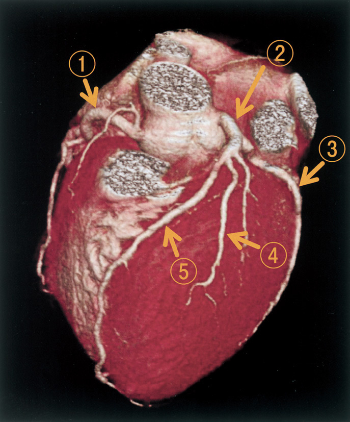
ａ ①
ｂ ②
ｃ ③
ｄ ④
ｅ ⑤
✅
ｃ ③
左回旋枝（LCx）は左主幹部から分岐し、房室溝（冠状溝）を走行する。
❤️ 冠動脈の3D像を読む——3つの溝と、そこを走る血管
冠動脈は心臓の表面を無秩序に走っているのではなく、心臓の「溝」に沿って走る——だから溝を先に思い浮かべれば、血管の名前は自動的に決まる。3つの溝：
①房室溝〈冠状溝〉——心房と心室を隔てる、心臓をぐるりと取り巻く溝。左側を左回旋枝、右側を右冠動脈が走る
②前室間溝——前面で右室と左室を隔てる溝。左前下行枝が心尖へ向かって走る
③後室間溝——下面（後面）で左右の心室を隔てる溝。後下行枝が走る（右優位型では右冠動脈由来）
前面からの3D像で見えるもの・見えないもの：
見える＝左主幹部、左前下行枝、対角枝、右冠動脈の近位〜中間部、左回旋枝の起始部（左縁で裏へ消える）
見えにくい＝中隔穿通枝（心筋内へ潜る）、後下行枝・回旋枝の遠位（裏面）、鈍縁枝の一部
同定の手順：
1. 大動脈基部を見つけ、その左右どちらから出ているかで左冠動脈系・右冠動脈系を分ける
2. 左は「短い幹（主幹部）→ 2本に分岐」という形を探す
3. 分岐した2本のうち、心尖へ下るのが前下行枝、左縁を回り込むのが回旋枝
4. 前面を斜めに広がる枝は対角枝（前下行枝の枝）
冠動脈CTの臨床的位置づけ：
陰性的中率が非常に高く、低〜中等度リスクの胸痛で冠動脈疾患を除外するのに向く
高度石灰化・ステント留置後・不整脈（心房細動）では評価が難しく、高心拍ではβ遮断薬で心拍を落としてから撮る
⚠️ 造影剤腎症とアレルギーの確認、そして被曝は常についてまわる。
□ 選択肢の検討
| 選択肢 | 解説 |
|---|---|
| ａ ① | これは右冠動脈である。①は画面左上（患者の右側）、大動脈基部の右側から起こって右房室溝へ向かう血管を指している——右冠動脈の起始部から近位部にあたる。3D-CTでの見分け方：右冠動脈は右のValsalva洞から起始し、右房室溝（右心耳と右室の境）に沿って心臓の右縁を下り、下面へ回り込む——提示画像でも、①から出た血管が心臓の右縁に沿って下方へ走っているのが追える。右冠動脈が養うのは右室・左室下壁・心室中隔後方1/3、そして洞結節（約60％）と房室結節（約90％）。⚠️ 設問が問うているのは「左冠動脈回旋枝」なので、まず左右を分けることが第一歩——前面から見た3D像では、患者の右側（画面の左）が右冠動脈、患者の左側（画面の右）が左冠動脈系である。 |
| ｂ ② | これは左冠動脈主幹部（およびその分岐部）である。②は大動脈基部の左側、肺動脈幹の陰から現れる太い幹を指しており、ここが左冠動脈主幹部から左前下行枝と左回旋枝に分かれる分岐部にあたる。主幹部の特徴：左のValsalva洞から起始し、長さは数mmから2cm程度と短く、それ自身は心筋を養う枝をほとんど出さない——「短い共通の幹」として3D像でも一目でそれと分かる。ここから前下行枝は前方・下方（前室間溝）へ、回旋枝は後方・左方（左房室溝）へと、はっきり異なる向きに分かれていく。⚠️ 左主幹部病変は左室の大部分を一度に失いうるため、突然死・心原性ショックに直結する——50％以上の狭窄は冠動脈バイパス術の古典的適応で、負荷試験は禁忌とされる。問われているのは主幹部から分かれた先の「回旋枝」であって、分岐する前の幹ではない。 |
| ◯ ｃ ③ | これが正解。③は心臓の左縁（画面の右側）、左房と左室の境である左房室溝〈冠状溝〉に沿って走る血管を指しており、これが左冠動脈回旋枝である。回旋枝の見分け方は「走る溝」：左主幹部から分かれたあと、前下行枝が前室間溝を心尖へ下るのに対し、回旋枝は左房室溝を後方へ回り込む——前面からの3D像では、心臓の左縁の輪郭に沿って裏側へ消えていく血管として見える。回旋枝からは鈍縁枝〈obtuse marginal branch〉が左室側壁へ分岐する。灌流域：左室の側壁・後壁——約10％の左優位型では後下行枝も回旋枝から出て、下壁と中隔後方1/3まで担当する。⚠️ 回旋枝領域の梗塞は12誘導心電図で最も見つけにくい——Ⅰ・aVL・V5・V6のST上昇か、V1・V2のST低下と高いR波（後壁の鏡像変化）としてしか現れないことがあり、疑えば背側誘導（V7〜V9）を追加する。 |
| ｄ ④ | これは左前下行枝から分岐した対角枝である。④は心臓前面の中央からやや左寄りで、前下行枝から左室自由壁へ向かって斜めに広がる枝を指している——対角枝〈diagonal branch〉である。回旋枝との違い：対角枝は前面の心筋表面を斜めに走るのに対し、回旋枝は房室溝という「溝」に沿って心臓の輪郭を回り込む——3D像では「面を横切るか、縁を回るか」で区別できる。対角枝は通常1〜3本あり、左室前側壁を灌流する。心電図ではⅠ・aVL・V5・V6に変化が出るため、回旋枝領域の梗塞と紛らわしい——両者の区別は最終的に冠動脈造影で行う。⚠️ 対角枝は「中隔」ではなく「自由壁」へ向かう枝である——中隔を養うのは同じ前下行枝から出る中隔穿通枝のほうで、これは心筋の中に潜り込むため体表側からの3D像では見えにくい。 |
| ｅ ⑤ | これは左前下行枝である。⑤は心臓前面を上方から心尖へ向かってまっすぐ下る血管を指しており、前室間溝（右室と左室の境）を走る左前下行枝である。前下行枝の特徴：①前面の正中よりやや左を、心尖へ向かって直線的に下る／②途中から対角枝を左方へ、中隔穿通枝を深部へ出す／③しばしば心尖を回り込んで心臓下面まで達する。灌流域は左室前壁・心尖部・心室中隔前方2/3、そして右脚と左脚前枝——心臓の中で最も広い範囲を担うため、近位部の閉塞は致死的になりやすい。心電図ではV1〜V4のST変化として現れる。⚠️ 回旋枝と前下行枝の取り違えは、走る溝を意識していないと起こる——「前室間溝を下るのが前下行枝、房室溝を回るのが回旋枝」という一文で分けること。 |
🔍 冠動脈の番号（AHA分類）と、閉塞部位から心電図を予測する
カテーテル治療の記載はすべてAHA分類の番号で書かれるので、番号と部位の対応は読めるようにしておく。AHA分類：
右冠動脈＝#1（起始〜鋭縁枝の手前の中間）／#2（鋭縁枝まで）／#3（鋭縁枝から後下行枝分岐まで）／#4（後下行枝・房室結節枝）
左主幹部＝#5
左前下行枝＝#6（第1中隔穿通枝まで）／#7（第2対角枝まで）／#8（それ以降）／#9・#10（対角枝）
左回旋枝＝#11（鈍縁枝まで）／#12（鈍縁枝）／#13（後側壁枝の手前）／#14・#15（後側壁枝・後下行枝）
閉塞部位 → 心電図 → 合併症の連鎖：
左前下行枝近位（#6）——V1〜V4のST上昇（前壁中隔）。心室中隔穿孔・右脚ブロック・左脚前枝ブロック・心尖部瘤と左室内血栓・ポンプ失調
左回旋枝（#11〜13）——Ⅰ・aVL・V5・V6のST上昇、あるいはV1・V2のST低下＋高R波（後壁）。12誘導で見逃されやすい
右冠動脈近位（#1〜2）——Ⅱ・Ⅲ・aVFのST上昇（下壁）。徐脈・房室ブロック・右室梗塞（V4RのST上昇）
右室梗塞では前負荷依存になるので、硝酸薬・利尿薬・モルヒネは避けて輸液を行う
下壁梗塞で右冠動脈か回旋枝かを見分ける：
ⅢのST上昇がⅡより大きく、Ⅰ・aVLにST低下があれば右冠動脈／ⅡのST上昇がⅢ以上で、Ⅰ・aVLにST上昇があれば回旋枝
心筋のどの層から壊死するか：
心内膜側は冠灌流圧が最も低く（収縮期に圧迫される）、虚血に最も弱い——だから壊死は心内膜側から始まり、時間とともに心外膜側へ広がる（wavefront現象）。再灌流を急ぐ根拠はここにある。
⚠️ 「どの枝が詰まると、どの誘導に、どの合併症が出るか」を1本の線でつなげておくと、症例問題は解剖の知識だけで半分解ける。
🎯 国試ポイント
左冠動脈回旋枝は左房室溝〈冠状溝〉を後方へ回り込む——前面の3D像では心臓の左縁に沿って裏へ消える血管。左前下行枝は前室間溝を心尖へ下る／対角枝は前面を斜めに左室自由壁へ広がる／右冠動脈は右房室溝を走る。
左主幹部は「短い共通の幹」で、それ自身は心筋を養わない——灌流域を問う設問の答えにはならない。
灌流域＝前下行枝（前壁・心尖・中隔前方2/3・右脚・左脚前枝）／回旋枝（側壁・後壁）／右冠動脈（右室・下壁・中隔後方1/3・洞結節・房室結節）。
回旋枝領域の梗塞は12誘導で見逃されやすい——V1・V2のST低下＋高R波を見たら背側誘導（V7〜V9）を追加する。
Q.13(112F-28)★一般83%
赤黄緑の3 点誘導式心電図モニターの赤色の電極を装着する部位はどれか。
ａ 左鎖骨下
ｂ 右鎖骨下
ｃ 心窩部
ｄ 左下胸部
ｅ 右下胸部
✅
ｂ 右鎖骨下
3点誘導モニター：赤=右鎖骨下、黄=左鎖骨下、緑（黒）=左下胸部または右下胸部。
❤️ 心電図の誘導と電極——四肢誘導の色から3点誘導まで
心電図は「心臓の電気的活動を、どの方向から眺めるか」を変えているだけである——誘導とは「眺める向き」のこと。我が国の四肢誘導の色：
右手＝赤／左手＝黄／左足＝緑／右足＝黒（アース）
3点誘導モニターは右足（黒）を省き、残る3つを胸郭上へ移す＝右鎖骨下（赤）・左鎖骨下（黄）・左下胸部（緑）
双極肢誘導と単極肢誘導：
Ⅰ＝左手−右手／Ⅱ＝左足−右手／Ⅲ＝左足−左手（Einthovenの三角形。Ⅰ＋Ⅲ＝Ⅱ）
aVR・aVL・aVF＝各肢を単極で見る（増大単極肢誘導）
胸部誘導の位置（これは厳密に決まっている）：
V1＝第4肋間胸骨右縁／V2＝第4肋間胸骨左縁／V4＝第5肋間鎖骨中線／V3＝V2とV4の中点／V5＝V4と同じ高さの前腋窩線／V6＝V4と同じ高さの中腋窩線
V3を先に貼らないこと（V4を決めてから中点を取る）
領域と誘導の対応：
Ⅱ・Ⅲ・aVF＝下壁（右冠動脈）／V1〜V4＝前壁中隔（左前下行枝）／Ⅰ・aVL・V5・V6＝側壁（左回旋枝・対角枝）
追加誘導＝V4R（右室梗塞）、V7〜V9（後壁）
3点誘導の役割：
調律の連続監視（P波・QRS幅・RR間隔）に用いる。第Ⅱ誘導相当の波形が既定
ST部分の評価には不適で、虚血を疑えば必ず12誘導を取り直す
⚠️ Ⅰ誘導でP・QRS・Tがすべて陰性なら、右胸心か「左右の電極の付け違い」——胸部誘導でR波が正常に増高していれば付け違いを疑う。
□ 選択肢の検討
| 選択肢 | 解説 |
|---|---|
| ａ 左鎖骨下 | ここは黄色である。左鎖骨下に貼るのは黄色の電極で、四肢誘導における「左手」に相当する。色分けの根拠：我が国の四肢誘導の色は 右手＝赤・左手＝黄・左足＝緑・右足＝黒と決まっている——3点誘導モニターはこのうち右足（黒）を省き、残る3色を胸郭の上へ移して貼る。したがって「右鎖骨下＝右手＝赤／左鎖骨下＝左手＝黄／左下胸部＝左足＝緑」と、四肢の位置関係をそのまま胸に写した配置になる。この3点で得られるのは第Ⅱ誘導に相当する波形で、P波が最も大きく出るため調律の監視に適している。⚠️ 色の割り当ては国・規格によって異なる——国際規格〈IEC〉では右手が赤ではなく別の色になるなど体系が違うので、機器に付属する表示を確認する習慣をつけること。国試で問われるのは我が国の慣用の配色である。 |
| ◯ ｂ 右鎖骨下 | これが正解。赤色の電極は右鎖骨下に装着する——四肢誘導の「右手（赤）」を胸郭上へ移した位置である。なぜ鎖骨下なのか：鎖骨の下は骨の上で筋肉が薄く、体動や呼吸による筋電図の混入〈アーチファクト〉が少ない——肋間や乳房の上に貼ると、呼吸と体動で基線が揺れて調律が読めなくなる。また電極が胸骨や心臓の直上を避けることで、除細動パドルや心エコー、胸骨圧迫の邪魔にならない。3点誘導で得られる情報と限界：調律（P波の有無・QRS幅・RR間隔）の連続監視には十分——しかしST部分の評価には向かず、虚血の診断には必ず12誘導心電図を取り直す。「モニターでST上昇があるように見える」だけで診断してはいけない。⚠️ 電極の貼り間違いは、実在しない不整脈や軸偏位を作り出す——異常波形を見たらまず電極の位置と接触を確認するのが鉄則である。 |
| ｃ 心窩部 | ここには貼らない。心窩部は3点誘導の標準的な貼付部位ではない——横隔膜と腹壁の筋活動が直接乗るため、基線の動揺が最も大きい場所の一つである。加えて心窩部は心嚢穿刺（剣状突起下アプローチ）や心エコーの剣状突起下走査で使う場所なので、電極で塞ぐと処置の妨げになる。電極を貼る場所を選ぶ一般則：①骨の上で筋肉の薄いところ／②体動と呼吸の影響が少ないところ／③処置（除細動・胸骨圧迫・エコー）を妨げないところ／④発汗や汚染の少ないところ。この4条件から「鎖骨下」と「側胸部〜下胸部」が自然に選ばれる。⚠️ 心電図モニターの波形が乱れているとき、多くは不整脈ではなく電極の接触不良・乾燥・体動——患者を見ずにモニターだけを見て判断しないこと。 |
| ｄ 左下胸部 | ここは緑色である。左下胸部（左季肋部）に貼るのは緑色の電極で、四肢誘導の「左足」に相当する。この3点が作る誘導：赤（右手）を陰極、緑（左足）を陽極とする組合せが第Ⅱ誘導——心臓の電気軸（およそ右上から左下へ向かう）とほぼ平行なので、P波もQRSも最も大きく振れる。だから調律の監視には第Ⅱ誘導が選ばれ、モニターの既定表示になっている。P波が見にくいときは、右鎖骨下の赤をやや胸骨寄りへ移すなどして波形を調整する。⚠️ 3点誘導は電極の位置に厳密な決まりが無く、施設や機器で多少異なる——だからこそ「12誘導心電図の代わりにはならない」。不整脈を確定診断する、虚血を評価する、という場面では必ず12誘導を取ること。 |
| ｅ 右下胸部 | ここは通常使わない。3点誘導では緑（左足に相当）を左下胸部へ貼るのが標準で、右下胸部は用いない——右下胸部に貼ると、心臓の電気軸と平行な誘導が作れず、P波もQRSも小さくなる。理屈で押さえる：心臓の電気的興奮はおおむね右上（洞結節）から左下（心尖）へ向かって進む——この方向に沿って電極を置くほど振幅が大きくなり、直交すると小さくなる。だから「右上（赤）と左下（緑）」の組合せが選ばれている。ただし機器によっては第Ⅰ誘導や修正胸部誘導を表示させる設定もあり、その場合は貼付位置が変わる。⚠️ 電極の左右を貼り違えると、心電図上は右胸心や右軸偏位のように見える——Ⅰ誘導でP波・QRS・T波がそろって陰性なら、まず電極の付け違いを疑うのが定石である。 |
🔍 モニター心電図のアーチファクト——「不整脈に見えるもの」の正体
モニターのアラームの多くは不整脈ではなく、記録上の乱れ〈アーチファクト〉である——患者を見ずに波形だけで判断しないことが最大の原則。よくあるアーチファクトと見分け方：
①基線の動揺〈baseline wander〉——呼吸・体動。ゆっくりした波のうねり。電極を骨の上へ移す
②筋電図の混入——震え・シバリング・パーキンソン病の振戦。細かい不規則な振れが心房細動や心室細動に似る
歯磨きや体をこする動作は、モニター上で心室頻拍とほぼ同じ形を作りうる
③交流障害〈ハム〉——50/60Hzの規則正しい細かい波。電源・接地の問題
④電極の接触不良——突然の平坦化や巨大なスパイク。ゲルの乾燥、発汗、体毛
本物の致死的不整脈と区別する手がかり：
①患者の意識・脈拍・血圧を必ず確認する（最強の手がかり）
②アーチファクトの中にはしばしば「本来のQRS」が透けて見える（規則正しい間隔で顔を出す）
③本物の心室細動なら数秒で意識が消失する
アラーム疲労という問題：
偽アラームが多いと、本物のアラームまで無視されるようになる——電極を毎日貼り替える、体毛を処理する、皮膚を清拭してから貼る、患者ごとにアラーム設定を調整する、といった地道な対策が安全に直結する
ペースメーカ患者のモニター：
ペーシングスパイクは細く鋭いので、機器の設定によっては拾われずQRSと数えられないことがある——ペースメーカ検出モードを有効にする
⚠️ 「モニターで心停止」と呼ばれて駆けつけたら電極が外れていただけ、という経験は誰もがする——だが逆に、アーチファクトと決めつけて本物を見逃す事故も起きている。必ず患者に触れて確かめること。
🎯 国試ポイント
我が国の四肢誘導の色＝右手 赤・左手 黄・左足 緑・右足 黒。3点誘導モニターは 右鎖骨下＝赤・左鎖骨下＝黄・左下胸部＝緑——第Ⅱ誘導相当の波形が得られP波が読みやすい。
電極は骨の上・筋肉の薄い部位に貼る（体動と呼吸のアーチファクトを避ける）。
3点誘導は調律監視用でST評価には使えない——虚血を疑えば12誘導を取り直す。
胸部誘導＝V1第4肋間胸骨右縁／V2第4肋間胸骨左縁／V4第5肋間鎖骨中線／V3はV2とV4の中点／V5前腋窩線／V6中腋窩線。
Ⅰ誘導でP・QRS・Tがすべて陰性なら、右胸心か電極の左右付け違いを疑う。
Q.14(111E-5)★CBT一般88%
冠動脈について誤っているのはどれか。
ａ 左回旋枝は側壁および後壁を灌流する。
ｂ 右冠動脈は前室間溝に沿って走行する。
ｃ 冠血流は収縮期よりも拡張期に多く流れる。
ｄ 左右の冠動脈はそれぞれValsalva 洞から起始する。
ｅ 左冠動脈は主幹部から左前下行枝と左回旋枝に分かれる。
✅
ｂ 右冠動脈は前室間溝に沿って走行する。（誤り）
前室間溝を走行するのは左前下行枝（LAD）。右冠動脈は右房室溝を走行する。
❤️ 冠循環の生理——なぜ拡張期に流れるのか
冠循環は「心臓が自分自身を養う」循環で、他の臓器と決定的に違う点が3つある。①流れる時相が違う：
左冠動脈系の血流の7〜8割は拡張期に流れる——収縮期には心筋の緊張で壁内の血管が圧迫され、左室の血流はほぼ止まるため
右冠動脈は右室の壁内圧が低いので収縮期にも流れる
冠灌流圧＝拡張期大動脈圧 − 左室拡張末期圧
②酸素の抜き取り率がもともと最大：
安静時から動静脈酸素較差が非常に大きく（酸素摂取率60〜70％）、他臓器のように「余分に抜く」余地がほとんど無い
だから酸素需要が増えたときは、血流を増やすしか手が無い＝冠血流予備能に依存する
③自己調節が強い：
灌流圧が60〜140mmHgの範囲では、細動脈が拡張・収縮して血流を一定に保つ
調節にはアデノシン、一酸化窒素、ATP感受性カリウムチャネルが関わる
心内膜側が最も虚血に弱い理由：
心内膜側は収縮期の壁内圧が最も高く、拡張期のわずかな時間にしか灌流されない——だから梗塞は心内膜側から始まり、時間とともに心外膜側へ広がる（wavefront現象）
冠血流が減る場面（すべて上の理屈から出る）：
頻拍（拡張期の短縮）／拡張期血圧の低下（大動脈弁閉鎖不全・ショック・過度の降圧）／左室拡張末期圧の上昇（心不全・大動脈弁狭窄・左室肥大）／貧血・低酸素（運搬量の低下）
⚠️ 大動脈弁狭窄では、冠動脈に狭窄が無くても狭心症が起こる——左室肥大で需要が増え、左室拡張末期圧の上昇で心内膜下の供給が減るという、需要と供給の両側からの挟み撃ちによる。
□ 選択肢の検討
| 選択肢 | 解説 |
|---|---|
| ａ 左回旋枝は側壁および後壁を灌流する。 | 正しい記述なので、これは答えではない。左回旋枝は左房室溝〈冠状溝〉を後方へ回り込み、左室の側壁と後壁を灌流する——枝は鈍縁枝〈obtuse marginal branch〉である。約10％を占める左優位型では回旋枝が後下行枝も出し、下壁と心室中隔後方1/3まで担当する。心電図との対応：側壁＝Ⅰ・aVL・V5・V6／後壁＝V1・V2のST低下と高いR波（鏡像変化）——後壁は12誘導では直接見えないので、疑えば背側誘導（V7〜V9）を追加する。回旋枝領域の梗塞は「心電図がはっきりしないのにトロポニンが上がる」形で現れることがあり、非ST上昇型心筋梗塞として扱われがち。⚠️ 「側壁・後壁＝回旋枝」は、前下行枝（前壁・心尖・中隔前方）と右冠動脈（右室・下壁・中隔後方）の3点セットで覚える。 |
| ◯ ｂ 右冠動脈は前室間溝に沿って走行する。 | これが正解（誤っている記述）。前室間溝を走行するのは左前下行枝であって、右冠動脈ではない——右冠動脈が走るのは右房室溝〈右の冠状溝〉である。溝と血管の対応を固定する：前室間溝（前面で左右の心室を隔てる）＝左前下行枝／後室間溝（下面で左右の心室を隔てる）＝後下行枝／房室溝（心房と心室を隔てる。心臓を取り巻く）＝右は右冠動脈、左は左回旋枝——この4つの対応だけで冠動脈の走行問題はほぼ解ける。右冠動脈は右のValsalva洞から起始し、右房室溝を右縁に沿って下って心臓の下面へ回り、多くは後下行枝となる（右優位型・約85〜90％）。その過程で洞結節枝（約60％）、鋭縁枝、房室結節枝（約90％）を出す。⚠️ 下壁梗塞で徐脈・房室ブロックが出やすいのは、この洞結節枝と房室結節枝が右冠動脈由来だから——走行を覚えることが、そのまま合併症の予測につながる。 |
| ｃ 冠血流は収縮期よりも拡張期に多く流れる。 | 正しい記述なので、これは答えではない。冠血流は収縮期より拡張期に多く流れる——とくに左冠動脈系では顕著で、血流の約7〜8割が拡張期に流れる。なぜか：収縮期には心筋が緊張して壁内を走る冠動脈を締めつける（壁内圧の上昇）ため、左室の血流はほぼ止まる——拡張期に心筋が弛緩して初めて血液が流れ込む。右冠動脈は右室の壁内圧が低いので収縮期にもある程度流れる——この左右差も理屈から導ける。臨床的な帰結：頻拍になると拡張期が短縮して冠血流が減る／拡張期血圧の低下（大動脈弁閉鎖不全・ショック）は冠灌流圧を下げる／左室拡張末期圧の上昇（心不全・大動脈弁狭窄）は心内膜下の灌流を妨げる。冠灌流圧＝拡張期大動脈圧−左室拡張末期圧という式が、この3つをまとめて説明する。 |
| ｄ 左右の冠動脈はそれぞれValsalva 洞から起始する。 | 正しい記述なので、これは答えではない。左右の冠動脈はいずれもValsalva洞〈大動脈洞〉から起始する——右冠動脈は右冠尖に対応する右冠尖洞から、左冠動脈は左冠尖洞から出る。Valsalva洞とは：大動脈弁の直上、上行大動脈起始部にある3つの膨らみである——「弁の下（左室内）」ではなく「弁のすぐ上」であることに注意する（この点は別の設問でしばしば問われる）。この膨らみが渦流を作り、収縮期に弁尖が冠動脈口を塞がないようにするとともに、拡張期の弁の閉鎖を助けている。3つのうち後方の1つ（無冠尖洞）からは冠動脈が出ない。⚠️ Valsalva洞動脈瘤の破裂は、右冠尖洞から右房・右室へ穿破して急性の左右短絡と連続性雑音・心不全を来す——Marfan症候群や心室中隔欠損に合併しうる。 |
| ｅ 左冠動脈は主幹部から左前下行枝と左回旋枝に分かれる。 | 正しい記述なので、これは答えではない。左冠動脈は左Valsalva洞から短い主幹部として起こり、左前下行枝と左回旋枝に分岐する——両者の間から中間枝〈ramus intermedius〉が出る三分岐型も約20〜30％にみられる。主幹部の臨床的意義：左主幹部が閉塞すると左室の大部分（前壁・側壁・中隔前方2/3）が一度に虚血に陥り、心原性ショック・突然死に直結する——50％以上の狭窄は冠動脈バイパス術の古典的適応で、薬物負荷試験は禁忌とされる。心電図では、広範な誘導のST低下に加えてaVRのST上昇がみられることが左主幹部病変や重症3枝病変を示唆する。冠動脈CTでは「短い共通の幹から2本に分かれる」という形として一目で分かる。⚠️ 「aVRのST上昇＋広範なST低下」は、単一の枝の閉塞ではなく心内膜下全体の虚血を意味する所見として押さえておく。 |
🔍 冠血流予備能とFFR——「狭さ」ではなく「足りているか」を測る
冠動脈狭窄が問題になるのは、狭いこと自体ではなく「必要なときに血流を増やせないこと」である。冠血流予備能〈CFR〉という考え方：
安静時の血流に対して、最大拡張時に何倍まで増やせるかを示す——正常では3〜5倍
狭窄が進むと、末梢の細動脈が代償的に拡張して安静時の血流は保たれる——しかしその代償を先に使ってしまっているので、予備能は失われる
だから安静時には無症状で、労作時にだけ胸痛が出る（労作性狭心症）
狭窄率と血流の関係（非直線）：
おおむね直径狭窄50％（面積75％）を超えると予備能が落ち始め、直径90％前後で安静時血流も減り始める
「50％狭窄」と「90％狭窄」の間に、症状の有無を分ける閾値がある
冠血流予備量比〈FFR〉：
最大充血下（アデノシン／ATP静注）で、狭窄の遠位圧を大動脈圧で割った比——0.80以下なら血行動態的に有意な狭窄と判定し、血行再建の適応とする
造影で見た「見た目の狭さ」と、機能的な意義は必ずしも一致しない——中等度狭窄でFFRを測ると、不要な治療をかなり減らせることが示されている
微小血管狭心症：
心外膜の冠動脈に狭窄が無いのに狭心症が起こる病態——細動脈レベルの機能異常で、中高年女性に多い。造影が正常だからといって虚血を否定できない
冠攣縮性狭心症：
安静時（とくに夜間から早朝）に一過性の完全閉塞に近い攣縮が起こる。喫煙が最大の危険因子——診断はアセチルコリン／エルゴノビン負荷、治療はカルシウム拮抗薬（β遮断薬は攣縮を悪化させうる）
⚠️ 「胸痛＋造影正常」を「異常なし」と結論しないこと——微小血管狭心症と冠攣縮性狭心症という2つの答えが残っている。
🎯 国試ポイント
前室間溝を走るのは左前下行枝——右冠動脈は右房室溝を走る。溝と血管＝前室間溝（前下行枝）／後室間溝（後下行枝）／房室溝（右は右冠動脈、左は回旋枝）。
冠血流は拡張期に多く流れる（左冠動脈系で7〜8割）——冠灌流圧＝拡張期大動脈圧−左室拡張末期圧。
左右の冠動脈はValsalva洞（大動脈弁の直上）から起始する——「大動脈弁直下の左室内」ではない。
左冠動脈は短い主幹部から前下行枝と回旋枝に分岐する——左主幹部病変は突然死に直結し、aVRのST上昇＋広範なST低下が手がかりになる。
Q.15(111G-37)★CBT一般2択75%
起始部が頭側―尾側の順に位置している組合せはどれか。2 つ選べ。
ａ 下腸間膜動脈 ――――――――― 腎動脈
ｂ 下腸間膜動脈 ――――――――― 精巣動脈
ｃ 下副腎動脈 ―――――――――― 下腸間膜動脈
ｄ 内腸骨動脈 ―――――――――― 精巣動脈
ｅ 腹腔動脈 ――――――――――― 上腸間膜動脈
✅
ｃ 下副腎動脈 ―――――――――― 下腸間膜動脈 ＋ ｅ 腹腔動脈 ――――――――――― 上腸間膜動脈
腹部大動脈の枝は頭側から 腹腔動脈（第12胸椎）→上腸間膜動脈（第1腰椎）→腎動脈（第1〜2腰椎、下副腎動脈を出す）→精巣／卵巣動脈（第2腰椎）→下腸間膜動脈（第3腰椎）→総腸骨動脈への分岐（第4腰椎）の順に並ぶ。この梯子に照らすと、頭側→尾側の順になっているのは下副腎動脈（腎動脈から分岐）→下腸間膜動脈 と 腹腔動脈→上腸間膜動脈 の2つ。
❤️ 腹部大動脈の枝——高さの梯子を1本覚える
腹部大動脈の枝は「どの高さから出るか」の順序さえ入っていれば、組合せ問題はすべて解ける。頭側から尾側への梯子：
①下横隔動脈（第12胸椎）＋上副腎動脈を出す
②腹腔動脈（第12胸椎）＝前腸
③上腸間膜動脈（第1腰椎）＝中腸
④中副腎動脈（第1腰椎）
⑤腎動脈（第1〜2腰椎）＋下副腎動脈を出す
⑥精巣／卵巣動脈（第2腰椎）
⑦下腸間膜動脈（第3腰椎）＝後腸
⑧正中仙骨動脈、そして第4腰椎で総腸骨動脈へ二分
これに加えて、腰動脈が体壁枝として左右対称に出る
臓側枝を「対性か不対性か」で整理する：
不対性（1本）＝腹腔動脈・上腸間膜動脈・下腸間膜動脈（すべて消化管）
対性（左右1対）＝副腎動脈・腎動脈・精巣／卵巣動脈（すべて後腹膜臓器）
消化管は正中の1本から、後腹膜臓器は左右から——という規則性がある
発生学との対応（腸管動脈）：
前腸＝腹腔動脈／中腸＝上腸間膜動脈／後腸＝下腸間膜動脈——境界はTreitz靱帯付近と左結腸曲
⚠️ 境界部は2系統の吻合に依存するため血流が最も乏しい——脾彎曲部（Griffiths点）とS状結腸・直腸移行部（Sudeck点）が虚血性大腸炎の好発部位になるのはこのため。
□ 選択肢の検討
| 選択肢 | 解説 |
|---|---|
| ａ 下腸間膜動脈 ――――――――― 腎動脈 | 順序が逆である。腎動脈は第1〜2腰椎の高さ、下腸間膜動脈は第3腰椎の高さから起始する——頭側にあるのは腎動脈のほうで、「下腸間膜動脈 → 腎動脈」という頭側から尾側への並びは成り立たない。腹部大動脈の枝を高さで整理する：腹腔動脈（第12胸椎）→ 上腸間膜動脈（第1腰椎）→ 腎動脈（第1〜2腰椎）→ 精巣／卵巣動脈（第2腰椎）→ 下腸間膜動脈（第3腰椎）→ 総腸骨動脈への分岐（第4腰椎）。この6段の梯子を1つ覚えておけば、この形式の設問はすべて解ける。下腸間膜動脈は腹部大動脈の枝としては最も尾側の主要枝で、左結腸曲より肛門側（下行結腸・S状結腸・直腸上部）を養う——この境界がSudeck点・Griffiths点といった血行の弱点にあたり、虚血性大腸炎の好発部位（脾彎曲部・S状結腸）と一致する。 |
| ｂ 下腸間膜動脈 ――――――――― 精巣動脈 | 順序が逆である。精巣動脈（卵巣動脈）は第2腰椎の高さ、下腸間膜動脈は第3腰椎の高さ——精巣動脈のほうが頭側なので、「下腸間膜動脈 → 精巣動脈」の順にはならない。精巣動脈が高い位置から出る理由：精巣・卵巣は発生学的に後腹膜の上部（腎の近く）で生じ、そこから下降するため、動脈は元の高さから起こって長く伸びる——この「臓器は下がるが動脈の起始は残る」という原則は、精巣・卵巣に共通する。静脈側は左右で還る先が違う：右精巣静脈は下大静脈へ直接、左精巣静脈は左腎静脈へ直角に流入する——この非対称のため、精索静脈瘤は圧倒的に左に多い。成人で突然生じた左精索静脈瘤は、左腎静脈を圧迫する腎細胞癌を疑う契機になる。 |
| ◯ ｃ 下副腎動脈 ―――――――――― 下腸間膜動脈 | これが正解の一つ。下副腎動脈は腎動脈から分岐するので第1〜2腰椎の高さにあり、下腸間膜動脈（第3腰椎）より頭側である——「下副腎動脈 → 下腸間膜動脈」という頭側から尾側への並びが成り立つ。副腎の3本の動脈：上副腎動脈＝下横隔動脈から／中副腎動脈＝腹部大動脈から直接／下副腎動脈＝腎動脈から——1つの小さな臓器に3系統から血液が来るのは、副腎が発生学的に皮質（中胚葉）と髄質（神経堤）という別起源の組織の合体だから、と考えると覚えやすい。一方、静脈は原則1本：右副腎静脈は短く下大静脈へ直接、左副腎静脈は左腎静脈へ入る——副腎静脈サンプリング（原発性アルドステロン症の局在診断）で右側の採血が難しいのは、右副腎静脈が短く鋭角に下大静脈へ入るためである。 |
| ｄ 内腸骨動脈 ―――――――――― 精巣動脈 | 順序が逆である。内腸骨動脈は総腸骨動脈の枝で、総腸骨動脈への分岐部は第4腰椎の高さ——精巣動脈（第2腰椎）よりはるかに尾側なので、「内腸骨動脈 → 精巣動脈」の順にはならない。腹部大動脈の終わり方：第4腰椎の高さで左右の総腸骨動脈に分かれ（分岐部は臍のやや頭側）、総腸骨動脈は仙腸関節の前で外腸骨動脈と内腸骨動脈に分かれる。内腸骨動脈は骨盤内臓（膀胱・直腸・子宮・前立腺）と殿部を、外腸骨動脈は鼠径靱帯の下を通って大腿動脈となり下肢を養う。この分岐の高さは腹部大動脈瘤の分類（腎動脈下型か否か）にも関わる——腎動脈より下（下方）に限局する瘤はステントグラフト内挿術の良い適応で、腎動脈にかかる瘤は治療が難しくなる。 |
| ◯ ｅ 腹腔動脈 ――――――――――― 上腸間膜動脈 | これが正解の一つ。腹腔動脈は第12胸椎、上腸間膜動脈は第1腰椎の高さから起始する——「腹腔動脈 → 上腸間膜動脈」は正しく頭側から尾側への並びである。3本の腸管動脈と支配領域（発生学に対応する）：腹腔動脈＝前腸（食道下部・胃・十二指腸上部・肝・胆・膵頭側・脾）／上腸間膜動脈＝中腸（十二指腸下部〜横行結腸右2/3）／下腸間膜動脈＝後腸（横行結腸左1/3〜直腸上部）——境界はそれぞれTreitz靱帯付近と左結腸曲（脾彎曲部）。臨床でこれが効く場面：上腸間膜動脈の閉塞（塞栓・血栓）は急性腸間膜虚血を来し、心房細動が最大の塞栓源になる——激烈な腹痛に比して腹部所見が乏しい（pain out of proportion）のが特徴で、造影CTが診断の主役。上腸間膜動脈は大動脈から鋭角（20〜30度）に分岐するため、その間に挟まれた十二指腸水平部が圧迫されるのが上腸間膜動脈症候群である。 |
🔍 腹部血管の左右非対称——静脈側にこそ意味がある
動脈は左右対称に近いが、静脈は下大静脈が右側にあるため大きく非対称になる——この非対称が、いくつもの臨床所見を生む。①精巣／卵巣静脈：
右＝下大静脈へ直接（鋭角）／左＝左腎静脈へ直角に流入
左は逆流が起こりやすく、精索静脈瘤の約90％が左側
成人で新たに生じた左精索静脈瘤は、左腎静脈を閉塞する腎細胞癌の可能性を考える
②副腎静脈：
右＝短く鋭角に下大静脈へ／左＝左腎静脈へ
原発性アルドステロン症の副腎静脈サンプリングで右側の採血成功率が低いのはこのため
③左腎静脈は大動脈と上腸間膜動脈に挟まれる：
この狭い隙間で圧迫されるのがナットクラッカー現象——左側腹部痛と肉眼的血尿（左腎からの静脈うっ滞）を来す。若い痩せ型に多い
④上腸間膜動脈と十二指腸水平部：
大動脈と上腸間膜動脈の鋭角の間を十二指腸水平部が通る——やせ・急激な体重減少で脂肪クッションが失われると圧迫され、上腸間膜動脈症候群（食後の嘔吐・腹痛）を来す
⑤腎動脈と腹部大動脈瘤：
腹部大動脈瘤の大半は腎動脈より下（腎動脈下型）に生じる——腎動脈にかからないため、ステントグラフト内挿術の良い適応になる
破裂の危険は径で決まり、最大径5.5cm（女性では5.0cm）以上、あるいは半年で5mm以上の拡大が手術の目安
⑥側副血行路：
腹腔動脈と上腸間膜動脈は膵十二指腸動脈弓で、上腸間膜動脈と下腸間膜動脈はRiolan動脈弓・辺縁動脈で、下腸間膜動脈と内腸骨動脈は直腸で吻合する——だから1本が徐々に閉塞しても代償されうる（慢性腸間膜虚血が2本以上の閉塞で初めて症状を出す理由）
⚠️ 急性閉塞では側副血行が育つ時間が無いので、同じ血管でも結果がまったく違う——急性腸間膜動脈閉塞は数時間で腸管壊死に至る外科的緊急症である。
🎯 国試ポイント
腹部大動脈の枝の高さ＝腹腔動脈（T12）→上腸間膜動脈（L1）→腎動脈（L1〜2）→精巣／卵巣動脈（L2）→下腸間膜動脈（L3）→総腸骨動脈への分岐（L4）。不対性の枝＝腹腔動脈・上腸間膜動脈・下腸間膜動脈（消化管）／対性の枝＝副腎動脈・腎動脈・精巣卵巣動脈（後腹膜臓器）。
副腎の動脈は3系統（上＝下横隔動脈／中＝大動脈直接／下＝腎動脈）、静脈は原則1本。
前腸＝腹腔動脈、中腸＝上腸間膜動脈、後腸＝下腸間膜動脈——境界の脾彎曲部・S状結腸は虚血性大腸炎の好発部位。
左精巣静脈は左腎静脈へ直角に入るため精索静脈瘤は左に多い。
Q.16(110H-6)★必修CBT一般95%
心音のⅢ音について正しいのはどれか。
ａ 低調な音である。
ｂ 座位で増強する。
ｃ 収縮期に聴取する。
ｄ 大動脈弁領域で聴取しやすい。
ｅ 小児で聴取すれば病的である。
✅
ａ 低調な音である。
Ⅲ音は拡張早期の低調音（20〜70Hz）で、聴診器のベル型で聴取しやすい。
❤️ 聴診の物理——ベル型と膜型、体位と呼吸
聴診は「音を大きくする」技術ではなく、「聴きたい周波数を選び、音源を胸壁に近づける」技術である。①チェストピースの選択（周波数の選択）：
ベル型＝低調音（20〜100Hz）。皮膚に軽く触れる程度に当てる
膜型＝高調音（100Hz以上）。しっかり押し当てる
ベル型を強く押すと皮膚が張って膜型と同じになる——低調音を探すときの最大の落とし穴
低調＝Ⅲ音・Ⅳ音・僧帽弁狭窄のランブル／高調＝Ⅱ音・僧帽弁開放音・心膜摩擦音・大動脈弁閉鎖不全の逆流性雑音
②体位（音源を胸壁へ近づける・血行動態を変える）：
左側臥位＝心尖が胸壁に接近。Ⅲ音・Ⅳ音・僧帽弁狭窄のランブル
坐位前傾＋呼気止め＝心基部が胸壁に接近。大動脈弁閉鎖不全の雑音・心膜摩擦音
立位・Valsalva＝静脈還流が減る。ほとんどの雑音は減弱するが、閉塞性肥大型心筋症と僧帽弁逸脱は増強
しゃがむ・下肢挙上＝静脈還流が増える。逆に閉塞性肥大型心筋症の雑音は減弱
③呼吸：
吸気で増強＝右心系由来（三尖弁閉鎖不全・肺動脈弁狭窄・右室性Ⅲ音）＝Rivero-Carvallo徴候
呼気で増強＝左心系由来
④聴診領域：
大動脈弁＝第2肋間胸骨右縁／肺動脈弁＝第2肋間胸骨左縁／三尖弁＝第4肋間胸骨左縁／僧帽弁＝心尖部（第5肋間鎖骨中線）
⚠️ 聴診領域は弁の解剖学的な位置ではなく「音がよく伝わる場所」——血流の方向に沿って音が放散するために生じるずれである。
□ 選択肢の検討
| 選択肢 | 解説 |
|---|---|
| ◯ ａ 低調な音である。 | これが正解。Ⅲ音は20〜70Hz程度の低調音である——だから聴診器のベル型を用い、皮膚に軽く触れる程度に当てて聴く。ベル型と膜型の使い分けの物理：膜型は膜の張力によって低い周波数を減衰させ、高調音を選択的に拾う／ベル型は膜を持たず、皮膚そのものが膜として振る舞うので低調音まで拾える——ただしベル型を強く押しつけると皮膚が張って膜型と同じ特性になり、低調音が消える。「Ⅲ音が聴こえない」と判断する前に、当て方を確かめること。低調音として一緒に覚えるもの：Ⅲ音・Ⅳ音・僧帽弁狭窄の拡張中期ランブル——いずれもベル型・心尖部・左側臥位という同じ条件で聴く。逆に高調音（Ⅱ音・大動脈弁閉鎖不全の逆流性雑音・僧帽弁開放音・心膜摩擦音）は膜型を押し当てて聴く。 |
| ｂ 座位で増強する。 | 逆である。Ⅲ音は座位・立位では減弱ないし消失し、左側臥位で最も強く聴こえる。2つの理由：①血行動態——座位・立位では下肢に血液が貯留して静脈還流（前負荷）が減り、拡張早期の急速流入が弱まるためⅢ音が小さくなる／②距離——左側臥位では心尖が胸壁に近づくので、心尖部で発生する低調音が伝わりやすくなる。逆に、しゃがむ・下肢を挙上する・臥位を取ると静脈還流が増えてⅢ音は増強する。体位を変えて聴くべき所見の対応：左側臥位＝Ⅲ音・Ⅳ音・僧帽弁狭窄のランブル（ベル型・心尖部）／坐位前傾＋呼気止め＝大動脈弁閉鎖不全の拡張期逆流性雑音・心膜摩擦音（膜型・胸骨左縁）。⚠️ 「座位で増強する」のは大動脈弁閉鎖不全の雑音と心膜摩擦音であって、Ⅲ音ではない——この2つを取り違えないこと。 |
| ｃ 収縮期に聴取する。 | 時相が違う。Ⅲ音は収縮期ではなく拡張早期に聴取する——Ⅱ音の0.12〜0.18秒後、房室弁が開いて心室への急速流入が起こる時期である。音が生じる仕組み：心房から心室へ勢いよく流れ込んだ血液の流入が、心室壁と腱索の急な伸展によって止まるときの振動——「勢いよく入る」ことと「途中で止まる」ことの両方が要る。時相で心音を並べる：Ⅰ音（収縮期の始まり）→ 駆出音 → 収縮中期クリック → Ⅱ音（拡張期の始まり）→ 僧帽弁開放音／心膜ノック音 → Ⅲ音 → Ⅳ音（次のⅠ音の直前）。Ⅲ音は「Ⅱ音のすぐ後」、Ⅳ音は「Ⅰ音のすぐ前」と位置づけると混乱しない。⚠️ 時相を確かめる最も確実な方法は、頸動脈拍動を触れながら聴くこと——拍動と同時に始まるのが収縮期で、その後が拡張期である。 |
| ｄ 大動脈弁領域で聴取しやすい。 | 聴取部位が違う。Ⅲ音は大動脈弁領域（第2肋間胸骨右縁）ではなく、心尖部で聴取しやすい——左室由来のⅢ音は心尖部で、右室由来のⅢ音は胸骨左縁下部で聴かれる。4つの聴診領域：大動脈弁領域＝第2肋間胸骨右縁／肺動脈弁領域＝第2肋間胸骨左縁／三尖弁領域＝第4肋間胸骨左縁／僧帽弁領域（心尖部）＝第5肋間鎖骨中線——これは「弁の解剖学的位置」ではなく「その弁で生じた音が最もよく伝わる場所」を指す。音は血流の方向に沿って伝わるので、大動脈弁狭窄の雑音は頸部へ、僧帽弁閉鎖不全の雑音は左腋窩へ放散する。Ⅲ音は左室の充満に伴う音なので、左室の先端＝心尖部が最強点になる。⚠️ 右室性Ⅲ音は吸気で増強する——吸気で右心系への還流が増えるためで、これは右心系由来の音・雑音に共通する性質（Rivero-Carvallo徴候）である。 |
| ｅ 小児で聴取すれば病的である。 | 逆である。小児・若年者（おおむね30歳以下）のⅢ音は生理的で、病的とは限らない——心室コンプライアンスが高く、循環血液量も相対的に多いため、急速流入が強くⅢ音が出やすい。妊婦や持久系アスリートでも同様に生理的Ⅲ音がみられる。どこから病的になるか：おおむね40歳以上でⅢ音が聴かれたら病的と考える——収縮不全の心不全、僧帽弁閉鎖不全、大動脈弁閉鎖不全、心室中隔欠損、動脈管開存といった容量負荷を探す。頻拍を伴ってⅠ音・Ⅱ音・Ⅲ音が馬の駆け足のように聴こえるのが奔馬調〈ギャロップ〉で、心不全の有力な身体所見である。心不全のベッドサイド診断ではⅢ音の特異度が高く、頸静脈怒張と並んで重視される。⚠️ Ⅳ音は年齢にかかわらず原則として病的——「柔らかい心室は健常者にありうるが、硬い心室はありえない」という非対称を押さえること。 |
🔍 心不全のベッドサイド診断——Ⅲ音が持つ重み
Ⅲ音は、心不全の身体所見の中で最も特異度が高いものの一つである——感度は高くないので「無いから心不全ではない」とは言えないが、「有れば心不全らしい」と強く言える。心不全を示唆する身体所見と、その意味：
①Ⅲ音（奔馬調）——左室の急速流入が壁で急停止する。特異度が高い
②頸静脈怒張・肝頸静脈逆流——右房圧の上昇を直接反映する。半坐位45度で内頸静脈の拍動の頂点を見る
③肺うっ血（両側の湿性ラ音）——ただし慢性心不全ではリンパ排液が代償して聴こえないことがある
④起坐呼吸・発作性夜間呼吸困難——臥位で下肢から中心へ体液が移動するため
⑤心尖拍動の外側下方への偏位——左室拡大
⑥四肢冷感・脈圧狭小・傾眠——低灌流〈cold〉のサイン
Ⅲ音とⅣ音の臨床的な使い分け：
Ⅲ音＝容量が多い／収縮が悪い（収縮不全・弁逆流）
Ⅳ音＝心室が硬い（左室肥大・虚血・大動脈弁狭窄）＝拡張障害
心房細動ではⅣ音は聴こえない（心房収縮が無い）
検査との組合せ：
BNP／NT-proBNP＝心室壁の伸展に応じて分泌される。除外に強い（低ければ心不全は考えにくい）
ただし腎機能低下・高齢・心房細動で上昇し、肥満では低く出る
胸部エックス線＝心陰影拡大、肺血管陰影の頭側再分布、Kerley B線、胸水
心エコー＝駆出率、壁運動、弁膜症、下大静脈径と呼吸性変動（右房圧の推定）
⚠️ 身体所見・検査値・画像は互いの代わりにならない——Ⅲ音を聴いたうえでBNPを測り、心エコーで原因を突き止める、という順序でこそ意味を持つ。
🎯 国試ポイント
Ⅲ音は拡張早期の低調音（20〜70Hz）——ベル型を心尖部に軽く当て、左側臥位で聴く。座位・立位では静脈還流が減って減弱する（増強しない）。収縮期ではなく拡張早期。大動脈弁領域ではなく心尖部。
小児・若年者（30歳以下）・妊婦・アスリートのⅢ音は生理的——40歳以上では病的（心不全・弁逆流などの容量負荷）。
低調音（Ⅲ音・Ⅳ音・僧帽弁狭窄のランブル）＝ベル型を軽く／高調音（Ⅱ音・僧帽弁開放音・心膜摩擦音・大動脈弁閉鎖不全）＝膜型を押し当てる。
吸気で増強するのは右心系由来の音（Rivero-Carvallo徴候）。
Q.17(108B-31)★CBT一般2択54%
心臓・脈管の構造と機能について正しいのはどれか。2 つ選べ。
ａ 左心系は右心系の左後方に位置する。
ｂ 健常成人の心膜液は200 ～300ml である。
ｃ Valsalva 洞は大動脈弁直下の左室内に存在する。
ｄ 左冠動脈は房室結節の血流の主たる供給源である。
ｅ 房室弁に付着する腱索は心室収縮時に牽引される。
✅
ａ 左心系は右心系の左後方に位置する。 ＋ ｅ 房室弁に付着する腱索は心室収縮時に牽引される。
心臓は左前方へ捻れており、右室が最も前方（胸骨直後）、左房が最も後方（食道の前）に位置する＝左心系は右心系の左後方。また房室弁は腱索と乳頭筋という支持装置を持ち、心室収縮時に乳頭筋が収縮して腱索を牙引し、弁尖が心房側へ翻転するのを防ぐ。他は、心膜液は15〜50mL（200〜300mLは異常）、Valsalva洞は大動脈弁の直上（直下の左室内ではない）、房室結節の血流は約90%が右冠動脈由来である。
❤️ 心臓の位置と構造——腔の並び・弁の装置・心膜
心臓は胸腔の中央やや左寄りにあり、胎生期の回転によって左前方へ捻れている——この捻れが腔の前後関係を決める。①腔の位置：
最も前方（胸骨直後）＝右室／最も後方（食道の前）＝左房／心陰影の右縁＝右房／心尖を作る＝左室
したがって「左心系は右心系の左後方」
②弁の構造：
房室弁（僧帽弁2尖・三尖弁3尖）＝弁尖＋腱索＋乳頭筋という支持装置を持つ。心室収縮時に腱索が張って翻転を防ぐ
半月弁（大動脈弁・肺動脈弁 各3尖）＝支持装置を持たず、下流の圧で閉じる
Valsalva洞は大動脈弁の直上にあり、そこから左右の冠動脈が起始する
③心膜：
臓側心膜と壁側心膜の2枚。その間の心膜腔に15〜50mLの心膜液
急速に溜まれば150〜200mLでも心タンポナーデ／緩徐なら1L以上でも耐えうる
④刺激伝導系の血流支配：
洞結節＝右冠動脈60％・左回旋枝40％／房室結節＝右冠動脈90％／右脚・左脚前枝＝左前下行枝
⑤心臓の表面を走るもの：
冠動脈は房室溝・前室間溝・後室間溝という「溝」に沿って走る
冠静脈洞は左房室溝の後面を走り、右房へ還る
⚠️ 「最も前が右室」は、心嚢穿刺・心臓外傷・心筋生検・経静脈ペーシングのすべてに効く——臨床手技はこの解剖の上に成り立っている。
□ 選択肢の検討
| 選択肢 | 解説 |
|---|---|
| ◯ ａ 左心系は右心系の左後方に位置する。 | これが正解の一つ。左心系は右心系の左後方に位置する——心臓は胎生期の回転によって左前方へ捻れており、右室が最も前方（胸骨直後）、左房が最も後方（食道の前）に来る。4つの腔の位置関係：最前方＝右室／最後方＝左房／右前〜右側（心陰影の右縁を作る）＝右房／左後方（心尖を作る）＝左室。だから「右心系が前・左心系が後ろ」というのが基本の並びになる。この配置が効く場面：心嚢穿刺（剣状突起下から左肩へ向けて刺すと最も前方の右室に当たりやすい）／心臓外傷で右室が損傷されやすい／心筋生検で右室中隔を採る／経食道心エコーで左房が最もよく見える（食道のすぐ腹側）。⚠️ 「最も前が右室、最も後ろが左房」の2点さえ固定すれば、横断CTでの心腔同定も心臓の触診・穿刺もすべて導ける。 |
| ｂ 健常成人の心膜液は200 ～300ml である。 | 量が桁違いである。健常成人の心膜液は15〜50mL程度で、200〜300mLは明らかな異常（心嚢液貯留）である。心膜液の役割：臓側心膜と壁側心膜の間を滑らかにし、拍動する心臓の摩擦を減らす潤滑液。貯留したときに何が起こるか：心膜は伸展性に乏しいので、急速に溜まると少量（150〜200mL程度）でも心タンポナーデを起こす——逆に、緩徐に溜まる場合は心膜が伸びて1L以上溜まっても耐えうる。「量」ではなく「溜まる速さ」が血行動態を決める、というのがこの疾患の核心。心タンポナーデの徴候＝Beckの三徴（血圧低下・頸静脈怒張・心音減弱）、奇脈、心電図の低電位とelectrical alternans、胸部エックス線での心陰影拡大——治療は心嚢穿刺・心膜開窓であり、輸液で前負荷を保ちつつ急ぐ。利尿薬と血管拡張薬は禁忌。 |
| ｃ Valsalva 洞は大動脈弁直下の左室内に存在する。 | 位置が逆である。Valsalva洞〈大動脈洞〉は大動脈弁の直上、上行大動脈起始部にある3つの膨らみであって、「大動脈弁直下の左室内」ではない。そこにあることの意味：左右の冠動脈はこの洞から起始する（右冠尖洞から右冠動脈、左冠尖洞から左冠動脈。無冠尖洞からは出ない）——洞が作る渦流のおかげで、収縮期に開いた弁尖が冠動脈口を塞がずにすむ。また拡張期の弁の閉鎖もこの渦流が助けている。関連する疾患：Valsalva洞動脈瘤の破裂——多くは右冠尖洞から右房または右室へ穿破し、突然の胸痛と連続性雑音、急性の左右短絡による心不全を来す。心室中隔欠損やMarfan症候群に合併しうる。⚠️ 大動脈弁の「直下（左室側）」にあるのは左室流出路で、ここが肥厚して狭くなるのが閉塞性肥大型心筋症——上下を取り違えると疾患そのものが変わる。 |
| ｄ 左冠動脈は房室結節の血流の主たる供給源である。 | 供給源が違う。房室結節の血流は、約90％で右冠動脈（房室結節枝）から供給される——左冠動脈が主体になるのは左優位型の少数例のみである。刺激伝導系の血流支配（頻出）：洞結節＝右冠動脈 約60％／左回旋枝 約40％／房室結節＝右冠動脈 約90％／His束＝右冠動脈と左前下行枝の二重支配／右脚・左脚前枝＝左前下行枝（中隔穿通枝）／左脚後枝＝二重支配。ここから臨床が導ける：下壁梗塞（右冠動脈）では洞徐脈・房室ブロックが起こりやすいが、多くは一過性で予後は比較的良い（房室結節レベルのブロックで、補充調律のQRSが狭い）／前壁梗塞（左前下行枝）で房室ブロックが起これば、His束以下の広範な壊死を意味し予後が悪い（QRSの広い補充調律・恒久ペースメーカが必要になりやすい）。同じ「房室ブロック」でも、どの枝の梗塞かで意味がまったく違う。 |
| ◯ ｅ 房室弁に付着する腱索は心室収縮時に牽引される。 | これが正解の一つ。房室弁（僧帽弁・三尖弁）に付着する腱索は、心室収縮時に乳頭筋によって牽引される——これによって弁尖が心房側へ翻転する（逸脱する）のを防いでいる。仕組み：乳頭筋は心室壁から立ち上がり、腱索を介して弁尖の心室側に付着する——心室が収縮すると乳頭筋も同時に収縮し、腱索をぴんと張って弁尖を押さえる。パラシュートの紐が傘を支えるのと同じ構造。半月弁（大動脈弁・肺動脈弁）にはこの装置が無い——弁の下流側から圧がかかって閉じるだけで足りるため。この装置が壊れると：腱索断裂 → 急性僧帽弁閉鎖不全 → 急性肺水腫・心原性ショック／乳頭筋断裂 → 心筋梗塞（とくに下壁梗塞での後内側乳頭筋）の機械的合併症。後内側乳頭筋は右冠動脈の単独支配なので断裂しやすい／腱索の伸長・粘液腫様変性 → 僧帽弁逸脱（収縮中期クリックと後期収縮期雑音）。⚠️ 急性の僧帽弁閉鎖不全では左房が拡大する余裕が無く、圧が直接肺静脈へ伝わるため一気に肺水腫になる。 |
🔍 僧帽弁の支持装置が壊れるとき——急性僧帽弁閉鎖不全
僧帽弁が正しく閉じるには、弁尖・弁輪・腱索・乳頭筋・左室壁という5つの要素がすべて健全でなければならない——どれか1つが壊れても逆流が生じる。要素ごとの破綻と原因疾患：
①弁尖＝感染性心内膜炎（穿孔）、リウマチ性、粘液腫様変性
②弁輪＝左室拡大による弁輪拡張（機能性僧帽弁閉鎖不全）、弁輪石灰化
③腱索＝断裂（粘液腫様変性・感染性心内膜炎・外傷）、伸長（僧帽弁逸脱）
④乳頭筋＝心筋梗塞による断裂・機能不全
⑤左室壁＝虚血や拡張による乳頭筋の位置のずれ（tethering）
急性と慢性で臨床像がまったく違う：
急性（腱索断裂・乳頭筋断裂）——左房が拡大する余裕が無く、逆流の圧がそのまま肺静脈へ伝わる → 数時間で急性肺水腫・心原性ショック
雑音はかえって小さい（左房圧が急上昇して圧較差が小さくなるため）ので、「雑音が小さいから軽症」と読んではいけない
慢性——左房が徐々に拡大して圧を吸収するため、長く無症状。やがて心房細動と左室拡大が現れる
乳頭筋断裂の解剖学的背景：
前外側乳頭筋は左前下行枝と左回旋枝の二重支配、後内側乳頭筋は右冠動脈（または回旋枝）の単独支配——だから断裂するのは圧倒的に後内側乳頭筋で、下壁梗塞の合併症として起こる
発症は梗塞の2〜7日後。突然の呼吸困難、新規の収縮期雑音、肺水腫。診断は心エコー、治療は緊急手術
心筋梗塞の機械的合併症を並べる：
心室中隔穿孔（前壁梗塞・左前下行枝）／乳頭筋断裂（下壁梗塞・右冠動脈）／自由壁破裂（心タンポナーデ・電気機械解離）——いずれも発症数日後、高齢・女性・初回梗塞・再灌流の遅れが危険因子
⚠️ 梗塞後に「新しい雑音が出た」ら、この3つを必ず考えて心エコーを行うこと。
🎯 国試ポイント
左心系は右心系の左後方——最も前方が右室、最も後方が左房。健常成人の心膜液は15〜50mL（200〜300mLは異常）——心タンポナーデは量ではなく貯留の速さで決まる。
Valsalva洞は大動脈弁の直上（上行大動脈起始部）で、左右の冠動脈が起始する——弁の直下ではない。
房室結節の血流は約90％が右冠動脈由来——洞結節は右冠動脈60％・左回旋枝40％。
房室弁は腱索と乳頭筋で支えられ、心室収縮時に牽引されて翻転を防ぐ（半月弁にはこの装置が無い）——後内側乳頭筋は右冠動脈の単独支配のため、下壁梗塞で断裂しやすい。
Q.18(108C-6)★必修一般48%
聴診法による血圧測定について正しいのはどれか。
ａ マンシェットの中に聴診器のチェストピース全体を差し込んで測定する。
ｂ 上腕動脈の上に聴診器を置き、血管雑音を確認してから加圧を開始する。
ｃ 70mmHg まで速やかに加圧し、その後10mmHg ずつ加圧しながら測定する。
ｄ Korotkoff音の第1 点が確認できない時は、一度完全に減圧してから再度測定する。
ｅ 減圧を進めてKorotkoff音が消失したら、すぐにバルブを全開にして急速に減圧する。
✅
ｄ Korotkoff音の第1 点が確認できない時は、一度完全に減圧してから再度測定する。
Korotkoff音の第1点（出現点＝収縮期血圧）が聴取できないときは、カフを完全に脱気して静脈うっ滞を解除し、1分以上おいてから測り直す。圧を残したまま再加圧すると前腕がうっ血して音がさらに聴こえなくなる。なお听診器はカフの中ではなくカフ下端より末梢の上腕動脈上に置き、触診法で推定した収縮期血圧の20〜30mmHg上まで加圧してから毎秒2〜3mmHgで減圧し、音が消失してもさらに20mmHg下げて再出現がないことを確かめる（聴診間隙）。
❤️ 聴診法による血圧測定——手順とKorotkoff音の5相
血圧測定は最も頻繁に行われる身体診察であり、手順の細部がそのまま誤差になる。①測定前の準備：
背もたれのある椅子に座り、5分以上安静／足を組まない／測定中は会話しない／直前の喫煙・カフェイン・運動を避ける／排尿を済ませる
カフの中心（上腕動脈の上）を心臓の高さに合わせる——心臓より低いと高く、高いと低く出る（10cmで約8mmHgずれる）
②カフの選択と巻き方：
幅は上腕周囲径の約40％、ゴム嚢の長さは上腕周囲の約80％／下端は肘窩の2〜3cm上／指が1〜2本入る強さ
細すぎるカフは血圧を高く、太すぎるカフは低く読む
③手順：
1. 触診法で収縮期血圧を推定（橈骨動脈の拍動が消える圧）
2. そこから20〜30mmHg高い圧まで加圧
3. 毎秒2〜3mmHgでゆっくり減圧しながら、肘窩の上腕動脈上に置いた膜型で聴く
4. 音の出現＝収縮期血圧／音の消失＝拡張期血圧
5. 消失後さらに20mmHg下げて再出現がないことを確認してから脱気
④Korotkoff音の5相：
Ⅰ相＝明瞭な音の出現（収縮期血圧）／Ⅱ相＝雑音様／Ⅲ相＝再び明瞭／Ⅳ相＝急に減弱（muffling）／Ⅴ相＝消失（拡張期血圧）
Ⅴ相が0まで消えない場合（大動脈弁閉鎖不全・小児・妊婦・高拍出）はⅣ相を採る
⚠️ 初回は左右両腕で測る——左右差が15mmHg以上あれば鎖骨下動脈狭窄・大動脈解離・高安動脈炎を疑う。
□ 選択肢の検討
| 選択肢 | 解説 |
|---|---|
| ａ マンシェットの中に聴診器のチェストピース全体を差し込んで測定する。 | 誤りである。聴診器のチェストピースをマンシェット（カフ）の中に差し込んではいけない——カフの圧で押しつぶされて雑音が入り、Korotkoff音が正しく聴こえなくなる。正しい位置：カフの下端より2〜3cm末梢、肘窩の上腕動脈拍動の真上に、膜型を軽く当てる——強く押しつけると血管が変形して音が変わり、拡張期血圧を低く読む原因になる。カフそのものの条件：幅は上腕周囲径の約40％（成人で12〜14cm）、ゴム嚢の長さは上腕周囲の約80％を巻けること——カフが狭すぎる／短すぎると血圧を高く、広すぎると低く読む。肥満者に標準カフを使うと血圧を過大評価するので、大人用の大きいカフに替える。カフの下端は肘窩の2〜3cm上、ゴム嚢の中心が上腕動脈の上に来るように巻き、指が1〜2本入る程度の強さにする。 |
| ｂ 上腕動脈の上に聴診器を置き、血管雑音を確認してから加圧を開始する。 | 誤りである。加圧を始める前の上腕動脈からは、通常は何も聴こえない——正常な動脈血流は層流なので音を出さず、Korotkoff音はカフで血管を部分的に狭めたときに初めて生じる乱流の音である。加圧前に行うべきこと：触診法で収縮期血圧の見当をつける——橈骨動脈を触れながら加圧し、拍動が消えた圧を記録し、そこから20〜30mmHg高いところまで加圧してから聴診に移る。この手順を踏むことで、後述する聴診間隙〈auscultatory gap〉に騙されずにすむ。⚠️ もし加圧前に血管雑音が聴こえたとしたら、それは異常所見である——動静脈瘻、上腕動脈の狭窄、高拍出状態などを示唆する。血管雑音を「確認してから」測定を始める、という手順自体が成立しない。 |
| ｃ 70mmHg まで速やかに加圧し、その後10mmHg ずつ加圧しながら測定する。 | 誤りである。加圧の目標は「70mmHgまで」ではなく、触診法で推定した収縮期血圧より20〜30mmHg高い値までである——70mmHgでは大多数の患者で収縮期血圧に届かない。また「10mmHgずつ加圧しながら測定」も誤り：測定は加圧しながらではなく、減圧しながら行う——十分に加圧して血流を完全に止めてから、毎秒2〜3mmHg（あるいは1心拍あたり2mmHg）の速さでゆっくり下げ、Korotkoff音の出現と消失を読む。⚠️ 減圧が速すぎると収縮期血圧を低く、拡張期血圧を高く読む——徐脈の患者ではとくに危険で、1拍あたりの圧の下がり幅が大きくなるため誤差が広がる。逆に減圧が遅すぎると、静脈がうっ滞して拡張期血圧を高く読む。「十分加圧してから、ゆっくり下げる」——これが手順の骨格である。 |
| ◯ ｄ Korotkoff音の第1 点が確認できない時は、一度完全に減圧してから再度測定する。 | これが正解。Korotkoff音の第1点（音が出現する点＝収縮期血圧）が確認できないときは、いったんカフを完全に脱気して腕をしばらく休ませてから測り直す。なぜ完全に減圧するのか：カフに圧が残ったまま再度加圧すると、静脈が還流できずに前腕がうっ滞し（静脈うっ血）、動脈の拍動が減弱してKorotkoff音がさらに聴こえにくくなる——その状態で読んだ値は収縮期血圧を低く、拡張期血圧を高く見積もる。完全に脱気して1分以上（できれば1〜2分）待ってから測り直すのが原則。聴こえないときに疑うこと：①加圧が不十分（触診法で確かめ直す）／②聴診器の位置がずれている／③カフのサイズが不適切／④聴診間隙にはまっている／⑤ショック・末梢動脈疾患などで実際に脈圧が乏しい。⚠️ 本当に聴こえない場合は触診法（橈骨動脈の拍動が触れ始める圧＝収縮期血圧）やドプラで代用する——触診法では拡張期血圧は測れないことに注意する。 |
| ｅ 減圧を進めてKorotkoff音が消失したら、すぐにバルブを全開にして急速に減圧する。 | 誤りである。Korotkoff音が消失しても、すぐに全開で急速減圧してはいけない——消失点からさらに20mmHg程度は同じ速さで減圧を続け、音が再び現れないことを確かめてから、初めて速やかに脱気する。なぜ確かめる必要があるのか：聴診間隙〈auscultatory gap〉があると、収縮期血圧のすぐ下で音がいったん消え、しばらくしてまた聴こえ始める——この途切れを拡張期血圧と誤読すると、収縮期血圧を著しく低く（あるいは拡張期血圧を高く）評価してしまう。高齢者・高血圧・動脈硬化の強い患者でみられ、静脈うっ滞が誘因になる。触診法で収縮期血圧を先に確認しておくことが、この誤りを防ぐ最良の手段である。また、大動脈弁閉鎖不全や小児・妊婦では音が0mmHgまで消えないことがあり、その場合は消失点（第Ⅴ相）ではなく減弱点（第Ⅳ相）を拡張期血圧として記録する。 |
🔍 血圧測定にひそむ誤差——白衣高血圧から偽性高血圧まで
血圧の値は測り方だけでなく、測る状況と患者の血管の性質によっても変わる。①聴診間隙〈auscultatory gap〉：
収縮期血圧のすぐ下で音が一度消え、しばらくしてまた現れる——収縮期血圧を低く、拡張期血圧を高く誤読する
防ぐ手段は「触診法で先に収縮期血圧を推定しておくこと」
②白衣高血圧と仮面高血圧：
白衣高血圧＝診察室では高いが家庭では正常／仮面高血圧＝診察室では正常だが家庭・夜間では高い（心血管リスクは高い）
だから家庭血圧測定と24時間自由行動下血圧測定〈ABPM〉が重視される——家庭血圧の基準は診察室より5mmHg低い（135/85mmHg以上で高血圧）
③夜間の血圧パターン：
正常はdipper型（夜間に10〜20％下がる）／non-dipper型・riser型（夜間に下がらない・むしろ上がる）は心血管イベントのリスクが高い
睡眠時無呼吸症候群・慢性腎臓病・自律神経障害で見られる
④偽性高血圧〈pseudohypertension〉：
高度に石灰化した動脈はカフで圧迫しても潰れないため、実際より高い値が出る——高齢者・糖尿病・透析患者で問題になる
降圧しても症状が改善せず、むしろ立ちくらみが増えるといった不一致で疑う
⑤起立性低血圧：
臥位から立位（または座位）へ移って3分以内に、収縮期血圧が20mmHg以上または拡張期血圧が10mmHg以上低下
高齢者・糖尿病性自律神経障害・Parkinson病・降圧薬や利尿薬の過量で起こり、転倒と失神の原因になる
⑥左右差・上下肢差：
上肢の左右差15mmHg以上＝鎖骨下動脈狭窄・大動脈解離・高安動脈炎
下肢＜上肢（足関節上腕血圧比〈ABI〉0.9以下）＝末梢動脈疾患／上肢＞下肢が著しい若年者＝大動脈縮窄症
⚠️ 1回の測定値で高血圧と診断しない——複数回・複数機会の測定と、家庭血圧の併用が原則である。
🎯 国試ポイント
Korotkoff音の第1点が確認できないときは、一度完全に脱気してから測り直す——圧を残したまま再加圧すると静脈うっ滞で音がさらに聴こえなくなる。チェストピースはカフの中に差し込まない——カフの下端より末梢、上腕動脈拍動の真上に膜型を軽く当てる。
触診法で収縮期血圧を推定し、そこから20〜30mmHg高くまで加圧してから、毎秒2〜3mmHgで減圧する。
音が消えてもさらに20mmHg下げて再出現がないことを確認する（聴診間隙）。
Korotkoff音Ⅰ相＝収縮期血圧、Ⅴ相（消失）＝拡張期血圧——0まで消えない場合（大動脈弁閉鎖不全・小児・妊婦）はⅣ相を採る。
Q.19(108D-60)★一般90%
急性心筋梗塞を発症した患者のデータを示す。
心拍数90/ 分、血圧98/58mmHg、呼吸数18/ 分、SpO2 95％（room air）、1 回心拍出量40ml、体表面積1.80m2。
心係数を求めよ。
ただし、小数点第2 位以下の数値が得られた場合には、小数点第2 位を四捨五入すること。
解答：①. ② ℓ/ 分/m2（編註：選択肢を省略した。）
心拍数90/ 分、血圧98/58mmHg、呼吸数18/ 分、SpO2 95％（room air）、1 回心拍出量40ml、体表面積1.80m2。
心係数を求めよ。
ただし、小数点第2 位以下の数値が得られた場合には、小数点第2 位を四捨五入すること。
解答：①. ② ℓ/ 分/m2（編註：選択肢を省略した。）
✅
計算答：2.0
❤️ 心拍出量と心係数——計算そのものと、答えが持つ意味
この設問で行う計算は2段だけ：①分時心拍出量〈CO〉＝心拍数〈HR〉× 一回拍出量〈SV〉
＝ 90/分 × 40mL ＝ 3,600mL/分 ＝ 3.6L/分
②心係数〈CI〉＝ CO ÷ 体表面積〈BSA〉
＝ 3.6L/分 ÷ 1.80m2 ＝ 2.0L/分/m2
⚠️ 単位の変換で必ず一度は間違える——一回拍出量はmL、心拍出量はL/分で表すのが慣例なので、3,600mL/分を3.6L/分に直してから割ること。
なぜ体表面積で割るのか：
心拍出量は体格に比例して大きくなる——身長190cmの人と150cmの人を同じ「5L/分」で比べても意味がない
そこで体表面積で正規化した心係数を用い、体格の違いを消して比較できるようにする
体表面積はDu Boisの式などから身長と体重で求められ、日本人成人でおよそ1.5〜1.8m2
覚えるべき基準値：
心拍出量の正常＝4〜6L/分／心係数の正常＝2.5〜4.0L/分/m2
心係数2.2L/分/m2未満＝末梢循環不全（低心拍出量）の域
1.8L/分/m2未満＝心原性ショックの域
この患者をどう読むか：
心係数2.0L/分/m2は2.2を下回っており、急性心筋梗塞に伴う低心拍出量の状態
血圧98/58mmHg（脈圧40mmHg）、心拍数90/分という数値も、代償のために心拍数を上げながらかろうじて血圧を保っている像と合う
ここに肺うっ血の有無（肺動脈楔入圧18mmHgを境に）を加えるとForrester分類が決まり、治療方針が導かれる
⚠️ 「血圧が保たれている＝循環が足りている」ではない——末梢血管を締めて血圧を維持している間も、組織への灌流はすでに不足している（代償性ショック）。
計算問題として問われるときの型：
①心係数を求めよ＝心拍数×一回拍出量÷体表面積（本問）
②一回拍出量を求めよ＝拡張末期容積−収縮末期容積
③駆出率を求めよ＝（拡張末期容積−収縮末期容積）÷拡張末期容積×100
④Fickの法則で心拍出量を求めよ＝酸素消費量÷（動脈血酸素含量−混合静脈血酸素含量）
いずれも与えられた数値のうち「使わないもの」が混ぜてある——本問でも呼吸数18/分・SpO2 95％は計算に使わない
四捨五入の指示を必ず読む：
本問は「小数点第2位を四捨五入」＝小数第1位までで答える——答えは 2.0 であり、2 でも 2.00 でもない。桁と小数点の位置がそのまま採点対象になる
マークシート形式の計算問題では、末尾の0や先頭の0にも意味がある（0.40 と 0.4 は別の答え）
⚠️ 検算の癖をつける——心係数が 20 や 0.2 になったら単位換算をどこかで誤っている。正常が 2.5〜4.0 という桁感覚を持っていれば、その場で気づける。
□ 選択肢の検討
| 選択肢 | 解説 |
|---|
🔍 Forrester分類——心係数と肺動脈楔入圧の2軸で治療を決める
急性心筋梗塞に伴う循環不全は、「灌流が足りているか」と「うっ血があるか」の2軸で整理する——それをカテーテルの数値で行うのがForrester分類である。2本の線：
心係数 2.2L/分/m2（灌流の線）／肺動脈楔入圧 18mmHg（うっ血の線）
4つの群と治療：
Ⅰ群（心係数≧2.2・楔入圧＜18）＝正常。経過観察
Ⅱ群（心係数≧2.2・楔入圧≧18）＝肺うっ血のみ。利尿薬・血管拡張薬
Ⅲ群（心係数＜2.2・楔入圧＜18）＝末梢循環不全のみ＝前負荷不足。輸液
Ⅳ群（心係数＜2.2・楔入圧≧18）＝心原性ショック。強心薬・血管拡張薬、大動脈内バルーンパンピング〈IABP〉や経皮的心肺補助〈PCPS〉といった補助循環
Ⅲ群の重要性：
下壁梗塞に合併する右室梗塞は典型的なⅢ群——右室が動かず左心系へ血液を送れないため、前負荷依存になる
この状態で硝酸薬・利尿薬・モルヒネを使うと一気にショックへ落ちる。治療は輸液である
下壁梗塞を見たらV4Rを追加してST上昇を確認する、というのはこの判断のため
身体所見版との対応：
Nohria-Stevenson分類が同じ2軸を身体所見で引く——うっ血〈wet〉＝起坐呼吸・頸静脈怒張・浮腫・Ⅲ音／低灌流〈cold〉＝四肢冷感・傾眠・脈圧狭小・腎機能悪化
A（dry-warm）＝Ⅰ群／B（wet-warm）＝Ⅱ群／L（dry-cold）＝Ⅲ群／C（wet-cold）＝Ⅳ群
Killip分類との違い：
Killip分類は急性心筋梗塞の身体所見のみで4段階に分ける（Ⅰ＝心不全なし／Ⅱ＝ラ音が肺野の50％未満・Ⅲ音／Ⅲ＝肺水腫／Ⅳ＝心原性ショック）
器械が要らないぶん初療で使いやすく、Forrester分類はカテーテルを入れた後の精密な評価に使う
⚠️ 分類は治療を選ぶための道具である——「うっ血を取るのか、灌流を上げるのか、その両方か」という問いに答えるために使い、当てはめること自体を目的にしない。
心拍出量から派生する血行動態の指標（あわせて覚える）：
一回拍出量係数〈SVI〉＝ 一回拍出量 ÷ 体表面積。正常 35〜47mL/拍/m2
全末梢血管抵抗〈SVR〉＝（平均動脈圧 − 中心静脈圧）÷ 心拍出量 × 80。正常 800〜1,200 dyn・秒・cm−5
肺血管抵抗〈PVR〉＝（平均肺動脈圧 − 肺動脈楔入圧）÷ 心拍出量 × 80。正常 80〜240
酸素運搬量〈DO2〉＝ 心拍出量 ×（1.34 × ヘモグロビン × 動脈血酸素飽和度 ＋ 0.003 × 動脈血酸素分圧）× 10
この式が示すのは「酸素の運搬は心拍出量とヘモグロビンと飽和度の積で決まる」ということ——どれか1つが半分になれば運搬量も半分になる
ショックの型を数値で見分ける：
循環血液量減少性＝心拍出量↓・中心静脈圧↓・楔入圧↓・末梢血管抵抗↑
心原性＝心拍出量↓・中心静脈圧↑・楔入圧↑・末梢血管抵抗↑
閉塞性（心タンポナーデ）＝心拍出量↓・中心静脈圧↑・楔入圧↑・各腔の拡張期圧が等圧化
血液分布異常性（敗血症の初期）＝心拍出量↑〜→・中心静脈圧↓〜→・末梢血管抵抗↓・混合静脈血酸素飽和度↑
「末梢血管抵抗が上がっているか下がっているか」の1点だけで、血液分布異常性ショックと他の3つが分かれる
混合静脈血酸素飽和度〈SvO2〉が果たす役割：
正常70〜75％。低下は「供給不足か消費過多」（心拍出量低下・貧血・低酸素・発熱・シバリング）
異常高値は「組織が酸素を使えていない」（敗血症・シアン中毒）か左右短絡
中心静脈カテーテルで測る中心静脈血酸素飽和度〈ScvO2〉が代用として使われ、値はSvO2よりやや高い
数値を追うだけでは足りない：
乳酸値は「組織レベルで嫌気性代謝が起きているか」を映す唯一の簡便な指標で、蘇生の効果判定に用いる——心拍出量が正常化しても乳酸が下がらなければ、灌流はまだ足りていない
⚠️ 本問の心係数2.0L/分/m2は「血圧が98/58mmHgで保たれていても、すでに灌流が足りていない」ことを数値で示している——血圧は最後まで守られる指標であり、最初に破綻する指標ではない。
🎯 国試ポイント
心拍出量＝心拍数×一回拍出量／心係数＝心拍出量÷体表面積——本問は 90×40mL＝3.6L/分、3.6÷1.80＝2.0L/分/m2。mLとLの変換を忘れないこと（3,600mL/分＝3.6L/分）。
正常値＝心拍出量4〜6L/分、心係数2.5〜4.0L/分/m2——心係数2.2未満で低心拍出量、1.8未満で心原性ショック。
Forrester分類は心係数2.2と肺動脈楔入圧18mmHgの2本の線で4群に分ける——Ⅱ群＝利尿薬・血管拡張薬／Ⅲ群＝輸液／Ⅳ群＝強心薬・補助循環。
右室梗塞はⅢ群（前負荷不足）で、硝酸薬・利尿薬は禁忌、治療は輸液。
Q.20(108E-69)★一般📷 画像87%
胸部エックス線写真を示す。
与えられた数値から心胸郭比を求めよ。
A：245mm、B：200mm、C：40mm、D：87mm、E：157mm、F：145mm
ただし、小数点以下の数値が得られた場合には、小数点以下第1 位を四捨五入すること。
解答：① ② ％（編註：選択肢を省略した。）
与えられた数値から心胸郭比を求めよ。
A：245mm、B：200mm、C：40mm、D：87mm、E：157mm、F：145mm
ただし、小数点以下の数値が得られた場合には、小数点以下第1 位を四捨五入すること。
解答：① ② ％（編註：選択肢を省略した。）

✅
計算答：42
❤️ 心胸郭比〈CTR〉——測る場所を間違えなければ計算は易しい
心胸郭比〈cardiothoracic ratio；CTR〉＝ 心陰影の最大横径 ÷ 胸郭の最大横径 × 100（％）。それぞれの測り方：
心陰影の最大横径＝正中線から右心縁までの最大距離 ＋ 正中線から左心縁までの最大距離
胸郭の最大横径＝肋骨の内縁どうしの最も広い距離。横隔膜のすぐ上あたりで最大になる
⚠️⚠️ ここが本問の急所——胸郭径は「最も広いところ」で測る。上の方（大動脈弓の高さ）で測ってはいけない
提示画像の6本の矢印を仕分ける：
C（40mm）＝正中線から右心縁まで／D（87mm）＝正中線から左心縁まで——心陰影の最大横径＝40＋87＝127mm
E（157mm）＝正中線から右の胸郭内縁まで／F（145mm）＝正中線から左の胸郭内縁まで——胸郭の最大横径＝157＋145＝302mm
A（245mm）は肺尖に近い高さでの胸郭幅、B（200mm）は縦方向の距離——どちらもCTRの計算には使わない撹乱因子である
計算：
CTR ＝ 127 ÷ 302 × 100 ＝ 42.05… → 四捨五入して 42％
もしAを胸郭径と取り違えると 127÷245＝51.8→52％となり、正常を異常と読み違える
基準値：
立位・背腹方向〈PA〉撮影・深吸気で50％以下が正常
50％を超えれば心拡大（ただし撮影条件による偽陽性が多い）
本問の42％は正常範囲。
⚠️ 矢印つきの計測問題では、まず「どの矢印が何を測っているか」を仕分けてから式に入れる——出題者は使わない矢印をわざと混ぜている。
なぜ胸郭径を「最も広いところ」で測るのか：
心胸郭比は「胸郭という器に対して心臓がどれだけの割合を占めるか」を見る指標——器の大きさを一番広いところで代表させないと、同じ心臓でも測る高さによって比が変わってしまう
実際、本問ではAを使うと52％、E＋Fを使うと42％となり、正常と異常の判定が逆転する
心陰影の横径も「最大」で測る：
正中線（棘突起を結ぶ線）から右心縁までの最大距離と、左心縁までの最大距離を別々に測って足す——右心縁と左心縁は同じ高さで最大になるとは限らないので、1本の水平線で測ってはいけない
本問でもCとDは異なる高さに引かれている
四捨五入の指示：
本問は「小数点以下第1位を四捨五入」＝整数で答える——42.05… → 42％
桁数がそのまま解答欄の数と一致するので、指示を読み違えると全問不正解になる
⚠️ 検算——心胸郭比が100％を超えたり10％台になったりしたら、分子と分母を取り違えているか、単位（mmとcm）を混ぜている。
□ 選択肢の検討
| 選択肢 | 解説 |
|---|
🔍 心胸郭比が当てにならない場面——撮影条件と病態
心胸郭比は簡便だが誤差の大きい指標で、「50％を超えた＝心拡大」と単純に読むと誤る。①撮影方向：
標準は立位・背腹方向〈PA〉・管球距離2m・深吸気
臥位・腹背方向〈AP〉・ポータブル撮影では、心臓がフィルムから遠く管球に近いため拡大投影され、CTRは実際より大きく出る——集中治療室の毎日のポータブル写真で「心拡大」と読まないこと
②呼吸相：
呼気位で撮ると横隔膜が挙上し、心臓が横に寝るのでCTRは大きくなる——肋骨を数えて第10後肋骨が横隔膜上にかかる程度の吸気があるかを確認する
③体型・胸郭の形：
肥満・妊娠・腹水では横隔膜が上がりCTRが大きくなる／漏斗胸・直背症候群では心臓が前後に押しつぶされて横に広がる／やせ型・肺気腫では逆に小さく出る（滴状心）
④「心拡大」の中身は心臓とは限らない：
心嚢液貯留では、心筋が拡大していなくても心陰影が広がる（フラスコ状の心陰影）——だから心陰影拡大を見たら心エコーで中身を確かめる
心臓腫瘍、縦隔腫瘍、心膜嚢腫も同様に心陰影を広げうる
どの腔が大きいかを心陰影の形から読む：
左第1弓＝大動脈弓（大動脈瘤・大動脈弁閉鎖不全で突出）
左第2弓＝肺動脈（肺高血圧・心房中隔欠損・肺動脈弁狭窄で突出）
左第3弓＝左心耳・左房（僧帽弁狭窄で突出）
左第4弓＝左室（大動脈弁閉鎖不全・僧帽弁閉鎖不全・拡張型心筋症で突出し、心尖が外下方へ）
右第1弓＝上大静脈・上行大動脈／右第2弓＝右房（三尖弁閉鎖不全・Ebstein奇形で突出）
左房拡大の間接所見：
二重陰影〈double density〉、気管分岐角の開大（左主気管支の挙上）、側面像での食道の後方偏位
⚠️ 胸部エックス線は「心拡大の有無」を大づかみに見る道具——腔ごとの大きさ・壁厚・機能を評価するのは心エコーの仕事である。
心不全を胸部エックス線で読む——重症度に沿って所見が並ぶ：
①肺静脈圧 13〜18mmHg＝肺血管陰影の頭側再分布〈cephalization〉——立位では通常、下肺野の血管のほうが太いが、うっ血すると上肺野の血管が同等以上に太くなる
②18〜25mmHg＝間質性肺水腫。Kerley B線（肋横隔膜角付近の胸膜に垂直な短い線）、気管支壁の肥厚〈peribronchial cuffing〉、肺門陰影のぼやけ、葉間胸膜の肥厚
③25mmHg以上＝肺胞性肺水腫。肺門部を中心とした蝶形陰影〈butterfly shadow〉、胸水（右側優位のことが多い）
系統的に読む順序（見落としを減らす型）：
撮影条件（体位・方向・吸気・回旋の有無）→ 気管と縦隔の偏位 → 心陰影と大血管 → 肺門 → 肺野（左右を対称に比較）→ 横隔膜と肋横隔膜角 → 骨と軟部組織 → デバイス（カテーテル・チューブ・ペースメーカ）
回旋の有無は、鎖骨内端と棘突起の距離が左右等しいかで確認する——回旋があると心陰影の幅が変わり、心胸郭比も狂う
見落としやすい場所（hidden areas）：
肺尖部・鎖骨と肋骨の重なり・心陰影の裏・横隔膜の下・肺門の陰——意識して最後にもう一度見る
心疾患を示唆する特徴的な心陰影：
木靴心〈coeur en sabot〉＝Fallot四徴症（右室肥大で心尖が挙上し、肺動脈の陥凹で左第2弓がへこむ）
卵形心〈egg on a string〉＝完全大血管転位（縦隔陰影が細い）
雪だるま心〈snowman heart〉＝総肺静脈還流異常（上心臓型）
フラスコ状の心陰影＝心嚢液貯留
大動脈型心（boot-shaped）＝大動脈弁閉鎖不全による左室拡大
肋骨下縁の切痕〈rib notching〉＝大動脈縮窄症（肋間動脈の側副血行による）
⚠️ 心胸郭比という1つの数字に頼らず、「どの弓が張り出しているか」「肺血管の陰影はどうか」を必ず併せて読むこと——心陰影が正常大でも、急性の弁逆流や心タンポナーデの初期のように危険な病態は存在する。
🎯 国試ポイント
心胸郭比＝（正中から右心縁＋正中から左心縁）÷ 胸郭の最大横径 × 100。胸郭径は「最も広いところ（横隔膜のすぐ上）」で測る——上部で測った値を使うとCTRを過大評価する。
本問＝（40＋87）÷（157＋145）＝127÷302＝42％。
正常は立位・PA・深吸気で50％以下——臥位・AP・ポータブル・呼気位では大きく出るので心拡大と即断しない。
心陰影の弓＝左第1弓 大動脈弓／左第2弓 肺動脈／左第3弓 左房（左心耳）／左第4弓 左室／右第2弓 右房。
心陰影拡大＝心筋の拡大とは限らない（心嚢液貯留）。
Q.21(106B-18)★一般97%
心エコー検査で計測できるのはどれか。
ａ 中心静脈圧
ｂ 僧帽弁口面積
ｃ 平均大動脈圧
ｄ 左室収縮期圧
ｅ 混合静脈血酸素飽和度
✅
ｂ 僧帽弁口面積
心エコーでは僧帽弁口面積（MVA）をプラニメトリー法や圧半減時間法で測定できる。
❤️ 心エコーが測れるもの・測れないもの
超音波が返してくる情報は「反射までの時間（＝距離）」と「反射波の周波数のずれ（＝速度）」の2つだけ——ここから何が導けて何が導けないかが決まる。直接測れるもの：
①長さ・面積・容積——壁厚、内径、弁口面積、左房容積、左室容積（Simpson法）
②時間——圧半減時間、駆出時間、等容弛緩時間
③血流速度（ドプラ）——弁を通る速度、逆流速度、組織の運動速度（組織ドプラ）
そこから計算されるもの：
駆出率〈EF〉＝（拡張末期容積−収縮末期容積）÷拡張末期容積
圧較差＝4×（速度）2乗（簡易Bernoulli式）
弁口面積＝連続の式、あるいは 220÷圧半減時間
肺動脈収縮期圧＝4×（三尖弁逆流速度）2乗＋推定右房圧
右房圧＝下大静脈の径と呼吸性変動から推定
測れないもの：
絶対圧（中心静脈圧・大動脈圧・左室圧）／血液の成分（酸素飽和度・電解質）／冠動脈の内腔そのもの
圧に関しては「2点間の差」までしか出せず、絶対値にするにはどこかで実測した圧を足す必要がある
心エコーの主な用途：
左室収縮能（駆出率）・拡張能（E/A比、E/e比）／弁膜症の診断と重症度／壁運動異常（虚血の局在）／心嚢液と心タンポナーデ／心内血栓・腫瘍／先天性心疾患の短絡／大動脈基部と上行大動脈
⚠️ 「何が分かるか」ではなく「どんな物理量を測っているか」から考えると、この種の設問は迷わない。
□ 選択肢の検討
| 選択肢 | 解説 |
|---|---|
| ａ 中心静脈圧 | 直接は計測できない。中心静脈圧（右房圧）は圧であって、心エコーが直接測れる量ではない——心エコーが直接測るのは「長さ・面積・血流速度」の3つだけである。ただし推定はできる：下大静脈の径と呼吸性変動から右房圧を推定する——径が21mm以下で吸気時に50％以上虚脱すれば右房圧は低い（約3mmHg）、径が21mmを超えて虚脱が乏しければ高い（約15mmHg）と見積もる。これは「計測」ではなく「推定」であり、選択肢の言葉としては当たらない。実測するなら内頸静脈または鎖骨下静脈から中心静脈カテーテルを入れる。⚠️ この設問は「心エコーで何が分かるか」を問うているのではなく、「心エコーという道具が直接測れる物理量は何か」を問うている——距離と速度は測れる、圧は測れない、という原理に立ち返ること。 |
| ◯ ｂ 僧帽弁口面積 | これが正解。僧帽弁口面積は心エコーで直接計測できる——面積は長さの2乗の次元であり、断層像の上でそのままなぞって求められる。3つの測定法：①プラニメトリ法——胸骨左縁短軸像で弁尖の先端が作る開口部を拡張早期に描出し、内縁をなぞって面積を実測する。最も直接的／②圧半減時間〈PHT〉法——連続波ドプラで僧帽弁の拡張期血流を記録し、圧較差が半分に減るまでの時間から 220÷PHT で面積を算出する／③連続の式——左室流出路の血流量と僧帽弁の血流速度時間積分から求める。重症度の目安：正常は4〜6cm2、1.5cm2未満で高度僧帽弁狭窄、1.0cm2未満で最重症。⚠️ 心房細動を合併していると圧半減時間法は不正確になる——RR間隔が一定でないため。プラニメトリ法か複数心拍の平均を用いる。 |
| ｃ 平均大動脈圧 | 直接は計測できない。平均大動脈圧は圧であり、心エコーで測れる量ではない——血圧はカフによる非観血的測定か、動脈ラインによる観血的測定で得る。心エコーで圧に近づく唯一の道：簡易Bernoulli式（圧較差＝4×速度2乗）を使って「2点間の圧の差」を推定する——三尖弁逆流の最大速度から右室と右房の圧較差を出し、それに推定右房圧を足して肺動脈収縮期圧を求める、というのが代表例。ただし得られるのはあくまで圧較差であって、絶対圧ではない——絶対圧を出すには、どこかで実測した圧（推定右房圧、カフ血圧）を足し込む必要がある。大動脈弁狭窄の重症度評価も、測っているのは弁を通過する血流速度で、そこから圧較差と弁口面積を計算している。⚠️ 「ドプラで圧が測れる」という理解は正確ではない——測っているのは速度で、圧較差は計算値である。 |
| ｄ 左室収縮期圧 | 直接は計測できない。左室収縮期圧を直接知るには、大動脈から逆行性にカテーテルを左室内へ進める必要がある。心エコーでの近似：大動脈弁に狭窄が無ければ、左室収縮期圧は大動脈収縮期圧（＝カフで測る収縮期血圧）にほぼ等しい——収縮期には大動脈弁が開いて左室と大動脈が一続きになるため。大動脈弁狭窄があると両者は乖離し、その差が圧較差になる——心エコーは弁を通過する血流速度から この圧較差を推定する（最大流速4m/秒なら圧較差は約64mmHg）。したがって「左室収縮期圧＝収縮期血圧＋圧較差」として間接的に見積もることはできるが、心エコー単独で計測しているわけではない。閉塞性肥大型心筋症では左室内に圧較差が生じ、同じ考え方で流出路の狭窄の程度を評価する。⚠️ 「推定できる」と「計測できる」を分けて読むのが、この設問の作法である。 |
| ｅ 混合静脈血酸素飽和度 | 計測できない。混合静脈血酸素飽和度〈SvO2〉は、肺動脈内の血液を採取して測る値である——上大静脈・下大静脈・冠静脈洞から還ってきた血液が右心系で混ざり合った後の飽和度なので、肺動脈でしか採れない。測るには：肺動脈カテーテル〈Swan-Ganz〉の先端から採血する（間欠的）、あるいは光ファイバー付きカテーテルで連続的に測る。何を意味する値か：酸素の供給と消費のバランス。正常は70〜75％——低下すれば「供給が足りないか、消費が増えている」（心拍出量低下・貧血・低酸素・発熱・シバリング）／異常に高ければ「組織が酸素を使えていない」（敗血症・シアン中毒）か左右短絡。代用として中心静脈血酸素飽和度〈ScvO2〉が用いられ、こちらは中心静脈カテーテルで測れる（値はSvO2よりやや高い）。⚠️ 心エコーはあくまで形と動きと血流速度を見る検査であり、血液の成分は分からない。 |
🔍 心エコーの各モードと、それぞれが答える問い
心エコーは1つの検査ではなく、いくつかのモードの組合せである——それぞれが答えられる問いが違う。①Bモード（断層法）：
断面の形を見る。壁厚、内腔の大きさ、弁の形態、心嚢液、腫瘤
プラニメトリ法による弁口面積の実測もここで行う
②Mモード：
一本の線上の動きを時間軸に展開する。時間分解能が最も高い
僧帽弁前尖の動き（僧帽弁狭窄の城壁様パターン、僧帽弁逸脱の収縮期後方運動）、左室壁の収縮、心室中隔の奇異性運動
③パルスドプラ：
特定の一点の血流速度を測る。低速の血流に向く
僧帽弁流入血流（E波・A波）による拡張能評価、左室流出路の血流
④連続波ドプラ：
線上の最高速度を捉える。高速の血流（狭窄・逆流）に向くが、どの深さかは特定できない
大動脈弁狭窄の最大流速、三尖弁逆流速度、圧半減時間
⑤カラードプラ：
血流の向きと乱れを色で重ねる。逆流や短絡の有無・広がりを一目で見る
近づく血流を赤、遠ざかる血流を青で表す（BART）。乱流はモザイク状
⑥組織ドプラ：
血流ではなく心筋そのものの動く速度を測る——僧帽弁輪の拡張早期速度e'から、E/e'比を求めて左室充満圧を推定する（拡張障害の評価）
⑦負荷心エコー・コントラストエコー：
運動負荷やドブタミン負荷で誘発される壁運動異常を見る（虚血の検出、心筋の生存性の評価）
経胸壁と経食道の使い分け：
経胸壁＝非侵襲で第一選択。心尖部・左室前壁の評価に優れる
経食道＝左心耳血栓・疣腫・僧帽弁の詳細・心房中隔・大動脈解離。鎮静を要する
⚠️ 心エコーの限界も押さえる——肺気腫・肥満・胸郭変形では超音波の窓が取れず描出不良になり、冠動脈そのものは基本的に見えない。
🎯 国試ポイント
心エコーが直接測れるのは 長さ・面積・時間・血流速度——絶対圧（中心静脈圧・大動脈圧・左室圧）と血液成分（混合静脈血酸素飽和度）は測れない。僧帽弁口面積はプラニメトリ法・圧半減時間法（220÷PHT）・連続の式で求められる——正常4〜6cm2、1.5cm2未満で高度狭窄。
簡易Bernoulli式＝圧較差 4×（速度）2乗——三尖弁逆流速度＋推定右房圧で肺動脈収縮期圧が推定できる。
下大静脈径と呼吸性変動から右房圧を「推定」する（計測ではない）。
混合静脈血酸素飽和度は肺動脈カテーテルでしか測れない（正常70〜75％）。
Q.22(106C-8)★必修一般90%
胸部エックス線写真で左第3 弓の突出がみられやすいのはどれか。
ａ 僧帽弁狭窄症
ｂ 肥大型心筋症
ｃ 陳旧性心筋梗塞
ｄ 大動脈弁狭窄症
ｅ 大動脈弁閉鎖不全症
✅
ａ 僧帽弁狭窄症
左第3弓（左房弓）の突出は左房拡大を示す。僧帽弁狭窄症は左房拡大の代表例。
❤️ 心陰影の弓——どの弓が張り出すとどの腔か
正面胸部エックス線では、心大血管の輪郭が「弓」として左右に分かれて見える——どの弓が張り出しているかで、拡大している腔が推定できる。左縁（上から順に）：
左第1弓＝大動脈弓（大動脈瘤、大動脈弁閉鎖不全、高血圧で突出）
左第2弓＝肺動脈幹（肺高血圧、心房中隔欠損、肺動脈弁狭窄の狭窄後拡張で突出／Fallot四徴症では逆に陥凹し木靴心となる）
左第3弓＝左心耳・左房（僧帽弁狭窄で突出）
左第4弓＝左室（大動脈弁閉鎖不全、僧帽弁閉鎖不全、拡張型心筋症、高血圧性心疾患で突出）
右縁（上から順に）：
右第1弓＝上大静脈・上行大動脈（大動脈弁狭窄の狭窄後拡張、上行大動脈瘤で突出）
右第2弓＝右房（三尖弁閉鎖不全、Ebstein奇形、心房中隔欠損で突出）
左房拡大の見つけ方（4つ）：
①左第3弓の突出／②二重陰影（右心縁の内側にもう一本の弧）／③気管分岐角の開大＝左主気管支の挙上／④側面像での食道の後方偏位（バリウム嚥下）
左房は心臓の最後方にあるので、後ろにある食道と、上にある左主気管支を押しのける形で存在を主張する
負荷の種類と拡大の仕方：
圧負荷（大動脈弁狭窄・高血圧）＝求心性肥大。壁が厚くなるが内腔は広がらず、心陰影は長く正常大
容量負荷（弁逆流・短絡）＝遠心性拡大。内腔が広がり心陰影が大きくなる
⚠️ 「心陰影が大きい＝重症」ではない——急性の弁逆流では拡大する時間が無いため心陰影は正常大のまま急性肺水腫になる。むしろ危険な状況である。
□ 選択肢の検討
| 選択肢 | 解説 |
|---|---|
| ◯ ａ 僧帽弁狭窄症 | これが正解。左第3弓は左心耳・左房が作る輪郭で、その突出は左房拡大を意味する——左房拡大を来す代表が僧帽弁狭窄症である。なぜ左房が大きくなるのか：僧帽弁口が狭くなると拡張期に左房から左室へ血液が流れにくくなり、左房圧が上昇して左房が拡大する——左室そのものには容量負荷も圧負荷もかからないので、左室は正常大にとどまる（心陰影は左房だけが張り出す形になる）。胸部エックス線での左房拡大の所見：①左第3弓の突出／②二重陰影〈double density〉＝右心縁の内側にもう一本の弧が見える／③気管分岐角の開大（左主気管支が押し上げられる）／④側面像で食道が後方へ圧排される。加えて肺うっ血（肺血管陰影の頭側再分布、Kerley B線）と左第2弓（肺動脈）の突出を伴う。⚠️ 左房拡大は心房細動と左心耳血栓・全身塞栓に直結する——僧帽弁狭窄に心房細動を合併したら抗凝固療法（この場合はワルファリン）が必要になる。 |
| ｂ 肥大型心筋症 | 左第3弓は突出しない。肥大型心筋症は心筋が内側へ向かって厚くなる求心性肥大なので、心陰影の外形はあまり変わらない——「壁が厚いのに心陰影は正常大」というのが典型。診断の主役は別のところにある：心電図の左室高電位とストレイン型のST-T変化、心尖部肥大型では巨大陰性T波／心エコーでの非対称性中隔肥厚、収縮期僧帽弁前方運動〈SAM〉、左室流出路の圧較差。ただし経過が進んで拡張相へ移行すると左室が拡大し、左第4弓が突出してくる——この拡張相肥大型心筋症は我が国の心臓移植の原疾患として拡張型心筋症に次いで多い。⚠️ 閉塞性肥大型心筋症の収縮期雑音は、立位・Valsalva法（静脈還流の減少）で増強し、しゃがむと減弱する——大動脈弁狭窄の雑音とは逆の振る舞いをするので、体位変換が鑑別の決め手になる。 |
| ｃ 陳旧性心筋梗塞 | 突出するのは左第3弓ではない。陳旧性心筋梗塞で心陰影に変化が出るとすれば、左室の拡大あるいは心室瘤による左第4弓の変形である。左室瘤：前壁中隔梗塞の後、壊死した心尖部が菲薄化して収縮期に外へ膨らむ——胸部エックス線では左心縁の限局した突出、心電図では持続するST上昇（発症から数週を過ぎても下がらないST上昇）。瘤の内部は血流がよどむため左室内血栓ができやすく、全身塞栓（脳梗塞）の原因になる。広範な梗塞後の虚血性心筋症では左室全体が拡大し、拡張型心筋症に似た心陰影拡大を示す。⚠️ 陳旧性心筋梗塞そのものは左房を大きくしない——左房が大きくなるとすれば、乳頭筋機能不全による僧帽弁閉鎖不全を合併した場合であって、その場合は左室も一緒に拡大する。 |
| ｄ 大動脈弁狭窄症 | 左第3弓は突出しない。大動脈弁狭窄症は左室への圧負荷なので、左室は求心性に肥大し、心陰影は長く正常大にとどまる——拡大するのは代償が破綻して収縮不全に陥ってからで、そのときも大きくなるのは左第4弓（左室）である。胸部エックス線で見えるもの：①上行大動脈の狭窄後拡張（右第1弓の突出）／②大動脈弁の石灰化（側面像で見えることがある）／③左室の丸みを帯びた輪郭。いずれも左房とは無関係。大動脈弁狭窄の三徴は狭心痛・失神・心不全で、症状が出れば予後は急速に悪化する（無治療での平均余命は狭心痛5年・失神3年・心不全2年）。⚠️ 大動脈弁狭窄では硝酸薬・血管拡張薬による後負荷軽減が危険——狭窄が固定されているため拍出量は増えず、血圧だけが下がって冠灌流と脳灌流が破綻する。 |
| ｅ 大動脈弁閉鎖不全症 | 突出するのは左第4弓である。大動脈弁閉鎖不全症は左室への容量負荷なので、左室が遠心性に拡大し、左第4弓の突出と心尖の外下方への偏位を来す——左房ではない。心陰影の特徴：左室拡大による大きな心陰影（大動脈型心・boot-shaped heart）と、上行大動脈・大動脈弓の拡大（左第1弓の突出）——拡張期に大動脈から左室へ逆流するため、上行大動脈にも容量負荷がかかる。身体所見は脈圧の増大に由来するものが並ぶ：Corrigan脈（速脈・大脈）、Quincke徴候、de Musset徴候、Traube徴候、Duroziez徴候。聴診では第3〜4肋間胸骨左縁で拡張期の漸減性逆流性雑音（膜型・坐位前傾・呼気止めで増強）、心尖部でAustin Flint雑音。⚠️ 急性大動脈弁閉鎖不全（大動脈解離・感染性心内膜炎）では左室が拡大する余裕が無く、心陰影は正常大のまま急性肺水腫になる——「心拡大が無いから軽症」と読んではいけない。 |
🔍 僧帽弁狭窄症——左房だけが大きくなる病気
僧帽弁狭窄症の病態は「左房から左室への出口が狭い」という一点に尽きる——ここからすべての所見が導ける。原因：
大多数がリウマチ性（A群β溶血性連鎖球菌感染後のリウマチ熱の後遺症）——発症から狭窄が現れるまで20〜40年かかるので、患者は中年以降に受診する
その他＝弁輪の高度石灰化、先天性、心内膜炎後
血行動態の連鎖：
弁口狭窄 → 左房圧上昇 → 左房拡大 → ①肺静脈圧上昇（肺うっ血・労作時呼吸困難・血痰）②心房細動 ③左心耳血栓 → 全身塞栓
さらに肺静脈圧の上昇が続くと肺動脈性肺高血圧 → 右心不全（頸静脈怒張・肝腫大・浮腫）
左室は容量負荷も圧負荷も受けないので正常大にとどまる——これが他の弁膜症との決定的な違い
身体所見：
聴診三徴＝Ⅰ音の亢進・僧帽弁開放音〈OS〉・拡張中期ランブル（前収縮期雑音を伴う）
ベル型を心尖部に軽く当て、左側臥位で聴く（低調音）
A2-OS間隔が短いほど重症（左房圧が高いほど弁が早く開く）
弁が高度に石灰化して動かなくなると、Ⅰ音の亢進もOSも消える
頬部の紅潮（mitral facies）、心房細動による絶対不整脈
検査：
心電図＝P波の幅広い二峰性（僧帽性P波・Ⅱ誘導）、心房細動、右室肥大
胸部エックス線＝左第3弓の突出、二重陰影、気管分岐角の開大、肺うっ血
心エコー＝弁尖の肥厚・癒着、拡張期のドーム形成、Mモードでの城壁様パターン、弁口面積（プラニメトリ法・圧半減時間法）
治療：
内科的＝心拍数を下げて拡張期を長くする（β遮断薬・非ジヒドロピリジン系Ca拮抗薬）、うっ血に利尿薬、心房細動には抗凝固（ワルファリン）
外科的・カテーテル＝経皮的僧帽弁交連切開術〈PTMC〉、弁置換術
PTMCの適応外＝左房内血栓、中等度以上の僧帽弁逆流、高度の石灰化
⚠️ 頻拍は僧帽弁狭窄の大敵——拡張期が短くなると左房から左室への充満時間が減り、左房圧が跳ね上がって急性肺水腫になる。妊娠・発熱・心房細動の発症が引き金になる。
🎯 国試ポイント
左第3弓の突出＝左房（左心耳）の拡大＝僧帽弁狭窄症。心陰影の弓＝左第1弓 大動脈弓／左第2弓 肺動脈／左第3弓 左房／左第4弓 左室／右第1弓 上大静脈・上行大動脈／右第2弓 右房。
左房拡大の所見＝左第3弓の突出・二重陰影・気管分岐角の開大・側面像での食道の後方偏位。
僧帽弁狭窄では左室は拡大しない（容量負荷も圧負荷も受けない）——聴診三徴＝Ⅰ音亢進・僧帽弁開放音・拡張中期ランブル。
大動脈弁閉鎖不全・拡張型心筋症は左第4弓（左室）が突出する／肥大型心筋症・大動脈弁狭窄は求心性肥大なので心陰影は正常大。
Q.23(104E-29)★CBT一般📷 画像46%
心室圧－容積曲線を示す。
投与によってA からB に変化するのはどれか。
投与によってA からB に変化するのはどれか。
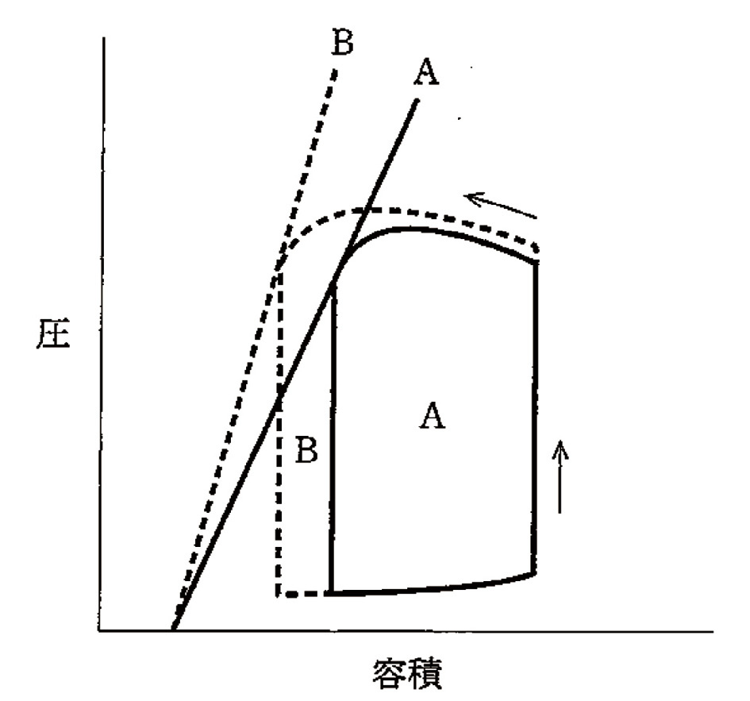
ａ 血管収縮薬
ｂ 血管拡張薬
ｃ アドレナリン
ｄ 硫酸アトロピン
ｅ 乳酸リンゲル液
✅
ｃ アドレナリン
AからB（収縮力増大・一回拍出量増大）はアドレナリン等の強心薬の効果。
❤️ 圧-容積曲線〈PVループ〉——1拍を四角形で読む
横軸に心室容積、縦軸に心室圧を取ると、心臓の1拍は反時計回りの閉じた輪を描く——4つの辺がそれぞれ心周期の4つの相に対応する。4つの辺（右下から反時計回り）：
①等容収縮期＝右の縦の辺——僧帽弁が閉じてから大動脈弁が開くまで。容積は変わらず圧だけ上がる
②駆出期＝上の辺——大動脈弁が開き、容積が減る
③等容弛緩期＝左の縦の辺——大動脈弁が閉じてから僧帽弁が開くまで。容積は変わらず圧だけ下がる
④充満期＝下の辺——僧帽弁が開き、容積が増える
ループから読める量：
右端＝拡張末期容積〈EDV〉／左端＝収縮末期容積〈ESV〉／横幅＝一回拍出量〈SV＝EDV−ESV〉／面積＝1拍の外的仕事量
駆出率〈EF〉＝SV÷EDV
2本の枠線：
収縮末期圧容積関係〈ESPVR〉＝ループの左上の角を結ぶ直線。傾きが収縮性を表す
拡張末期圧容積関係〈EDPVR〉＝ループの右下の角を通る曲線。立ち上がりの早さが硬さ（拡張障害）を表す
3因子を変えたときのループの動き（これが試験の中心）：
前負荷↑（輸液・臥位・下肢挙上）＝右端が右へ。ループが右へ広がり幅も増える。ESPVRの傾きは不変
後負荷↑（血管収縮薬・高血圧）＝背が高くなり左端が右へ。幅（SV）は減る。ESPVRの傾きは不変
後負荷↓（血管拡張薬）＝背が低くなり左端が左へ。幅は増える。ESPVRの傾きは不変
収縮性↑（カテコラミン・ジギタリス）＝ESPVRの傾きが立ち、左端が大きく左へ。背も高く幅も広い
⚠️ 「ESPVRの傾きが変わったか」だけを先に見る——傾きが変われば収縮性の変化、変わらなければ前負荷か後負荷の変化と、ただちに二分できる。
□ 選択肢の検討
| 選択肢 | 解説 |
|---|---|
| ａ 血管収縮薬 | これではない。血管収縮薬は後負荷を増やすので、圧-容積曲線は「収縮期圧が上がるが一回拍出量は減る」形に変わる——収縮末期の容積が右へずれてループの幅（＝一回拍出量）が狭くなる。提示図のBはどうか：Bのループは収縮期圧が高いだけでなく、左端（収縮末期容積）がAより小さい側へ移り、ループの幅はむしろ広い——「圧が上がって拍出も増えている」ので、後負荷の増大だけでは説明できない。決め手は収縮末期圧容積関係の直線：後負荷を変えても心筋固有の収縮性は変わらないので、この直線の傾きは動かない——ところが図では破線Bの直線が実線Aより明らかに急峻になっている。⚠️ 「直線の傾きが変わったかどうか」が、収縮性の変化とそれ以外（前負荷・後負荷の変化）を分ける唯一の指標である。 |
| ｂ 血管拡張薬 | これではない。血管拡張薬は後負荷を減らすので、収縮期圧が下がり、収縮末期容積が小さくなって一回拍出量が増える——ループは「背が低く、幅が広い」形になる。提示図のBと合わない点：Bは圧の頂点がAより高い——後負荷を下げたのなら収縮期圧は下がるはずで、上がることはない。さらに、後負荷の変化では収縮末期圧容積関係の直線の傾きは変わらないが、図では変わっている。血管拡張薬が有効な場面：収縮不全の心不全ではFrank-Starling曲線が平坦で後負荷依存性が強いため、後負荷を下げると前向き拍出が大きく増える／僧帽弁閉鎖不全・大動脈弁閉鎖不全でも逆流が減って前向き拍出が増える。⚠️ 重症大動脈弁狭窄・閉塞性肥大型心筋症・右室梗塞・心タンポナーデでは血管拡張薬は禁忌または危険である。 |
| ◯ ｃ アドレナリン | これが正解。アドレナリンは心筋のβ1受容体を刺激して収縮性〈contractility〉を高める——圧-容積曲線では、収縮末期圧容積関係〈ESPVR〉の直線の傾きが急峻になる。図の読み方（3点）：①破線Bの直線は実線Aの直線より明らかに立っている＝収縮性の増大／②Bのループは左端（収縮末期容積）がAより小さい＝同じ前負荷からより多く絞り出している／③Bのループは背が高く幅も広い＝収縮期圧も一回拍出量も増えている。拡張末期容積（ループの右端）はほぼ変わっていないので、前負荷の変化ではない。収縮性を上げる要因：交感神経刺激・カテコラミン（アドレナリン、ドブタミン、ドパミン）・ジギタリス・ホスホジエステラーゼ阻害薬・甲状腺ホルモン・高カルシウム血症。⚠️ 収縮性を上げれば酸素消費量も増える——心筋梗塞の急性期に強心薬を使うと梗塞範囲を広げうるので、必要最小限にとどめる。 |
| ｄ 硫酸アトロピン | これではない。硫酸アトロピンは抗コリン薬で、迷走神経の抑制を外して心拍数を上げる薬である——洞結節と房室結節に作用するのであって、心室筋の収縮性を直接高めるわけではない。圧-容積曲線への影響：心拍数が上がると拡張期が短くなり、充満する時間が減って拡張末期容積はむしろ小さくなる——ループは左へ寄り、1拍あたりの一回拍出量は減りうる（分時の心拍出量は心拍数で稼ぐ）。収縮末期圧容積関係の直線の傾きは変わらない——提示図Bのように直線が立つことはない。アトロピンの臨床：症候性の洞徐脈・房室結節レベルの房室ブロックに用いる——His束以下のブロック（QRSの広いⅢ度房室ブロック）には無効で、経皮ペーシングやアドレナリンへ進む。副作用は口渇・散瞳・尿閉・せん妄で、閉塞隅角緑内障・前立腺肥大では注意する。 |
| ｅ 乳酸リンゲル液 | これではない。乳酸リンゲル液の投与は前負荷（拡張末期容積）を増やす——圧-容積曲線ではループの右端が右へ移動し、ループ全体が右へ広がる。Frank-Starling機序：拡張末期容積が増えると心筋が引き伸ばされ、アクチンとミオシンの重なりが最適化されるとともにトロポニンCのCa感受性が上がって収縮力が増す——その結果、一回拍出量は増える。しかし収縮末期圧容積関係の直線の傾きは変わらない——前負荷を増やしても心筋固有の収縮性は変化しないからである。提示図Bでは直線の傾きが立っており、しかも右端（拡張末期容積）はほとんど動いていない——輸液による変化とは形が違う。なお乳酸リンゲル液は細胞外液補充液で、投与量の約1/4が血管内にとどまる（生理食塩液と同様）。⚠️ 「輸液＝右へ広がる／強心薬＝直線が立つ／血管拡張薬＝背が低く幅が広い／血管収縮薬＝背が高く幅が狭い」の4パターンで整理する。 |
🔍 収縮性・前負荷・後負荷を独立に測るということ
臨床で「心機能」と言うとき、多くは駆出率を指すが、駆出率は収縮性そのものではない——前負荷と後負荷に強く影響されるからである。駆出率が誤解を生む例：
重症の僧帽弁閉鎖不全では、左室が「抵抗の小さい左房へ」逃がせるので駆出率は見かけ上高く保たれる——駆出率が50％台に落ちてきた時点で、実はかなりの心筋障害が進んでいる
だから僧帽弁閉鎖不全の手術適応の駆出率の閾値は、他の病態より高めに設定されている
逆に、脱水（前負荷不足）では駆出率が保たれていても心拍出量は足りない
負荷から独立した収縮性の指標：
収縮末期圧容積関係〈ESPVR〉の傾き＝Emax——前負荷を変えながら複数のループを記録し、その左上の角を結んで求める。理論的には最も純粋な収縮性の指標だが、侵襲的で日常臨床には向かない
dP/dt max（左室圧の立ち上がりの最大速度）——前負荷の影響を受けにくいが、後負荷の影響は残る
global longitudinal strain〈GLS〉——心エコーで心筋の長軸方向のひずみを測る。駆出率が保たれている段階でも早期の収縮障害を捉えられ、抗癌薬の心毒性の監視などに使われる
拡張能の評価：
EDPVRが左上へシフト＝同じ容積でより高い圧が必要＝硬い心室
心エコーでは僧帽弁流入血流のE/A比、組織ドプラのe'、E/e'比、左房容積係数、三尖弁逆流速度を組み合わせて判定する
駆出率が保たれた心不全〈HFpEF〉は、この拡張能の障害が主体——高齢・高血圧・肥満・糖尿病・心房細動が背景にあり、日本の心不全患者の半数近くを占める
心筋の酸素消費と圧-容積曲線：
心筋酸素消費量は「ループの面積（外的仕事）」だけでなく「圧の高さ」に強く依存する——同じ仕事量でも、高い圧で少量を送るほうが、低い圧で多量を送るより酸素を食う
だから狭心症の治療は「後負荷と心拍数を下げる」方向で組み立てられる（β遮断薬・硝酸薬・Ca拮抗薬）
⚠️ 強心薬は拍出を増やすが酸素消費も増やす——虚血の急性期にはこの取引が不利になりうるので、まず後負荷軽減と補助循環（IABP）を考える。
🎯 国試ポイント
圧-容積曲線で収縮末期圧容積関係〈ESPVR〉の直線の傾きが立てば収縮性の増大＝カテコラミン（アドレナリン・ドブタミン）やジギタリス。前負荷↑（輸液）＝右端が右へ移動しループが右へ広がる。傾きは不変。
後負荷↑（血管収縮薬）＝背が高く幅が狭い。後負荷↓（血管拡張薬）＝背が低く幅が広い。いずれも傾きは不変。
アトロピンは心拍数を上げる薬であって収縮性は変えない——拡張期短縮で拡張末期容積はむしろ減る。
ループの横幅＝一回拍出量、面積＝1拍の外的仕事量、右端＝拡張末期容積、左端＝収縮末期容積。
駆出率は収縮性そのものではない（前負荷・後負荷に左右される）。
Q.24(103E-15)★一般📷 画像44%
心電図と左心の心周期とを図に示す。
Ⅲ音を聴取するのはどこか。
Ⅲ音を聴取するのはどこか。
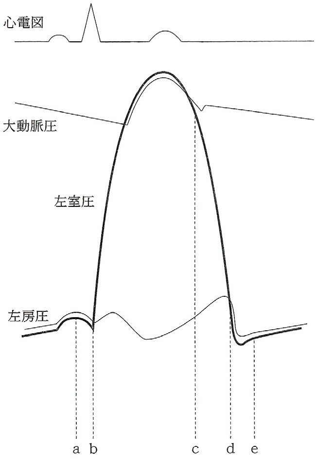
ａ 図中 a
ｂ 図中 b
ｃ 図中 c
ｄ 図中 d
ｅ 図中 e
✅
ｅ 図中 e
Ⅲ音は急速流入期（拡張早期）、僧帽弁開放後すぐの時期に生じる。
❤️ 心周期——4つの弁の開閉と、心音・圧曲線の対応
心周期の図は「左室圧・左房圧・大動脈圧の3本の曲線が、いつ交差するか」を読む図である——交差する点で弁が開閉し、そこに音が生じる。1拍の流れ（左心系）：
①心房収縮期——P波の後。左房圧にa波。ここでⅣ音（病的）
②等容収縮期——左室圧＞左房圧となり僧帽弁が閉じる（Ⅰ音）。まだ大動脈弁は開いていないので容積は変わらず圧だけ上がる
③駆出期——左室圧＞大動脈圧となり大動脈弁が開く。容積が減る
④等容弛緩期——左室圧＜大動脈圧となり大動脈弁が閉じる（Ⅱ音。大動脈圧曲線に切痕）。まだ僧帽弁は開いていないので容積は変わらず圧だけ下がる
⑤急速流入期——左室圧＜左房圧となり僧帽弁が開く（狭窄があれば僧帽弁開放音）。血液が一気に流れ込み、その停止でⅢ音
⑥緩徐流入期〈diastasis〉——流入がゆるやかになる。頻拍ではこの区間が真っ先に削られる
心音の位置をまとめる：
Ⅰ音＝僧帽弁閉鎖（収縮期の開始）／Ⅱ音＝大動脈弁閉鎖（拡張期の開始）／Ⅲ音＝Ⅱ音の0.12〜0.18秒後（急速流入期）／Ⅳ音＝Ⅰ音の直前（心房収縮期）
左房圧曲線の3つの波：
a波＝心房収縮／c波＝僧帽弁が心房側へ膨らむ／v波＝心室収縮中に肺静脈から左房へ血液が溜まる
右心系（頸静脈波）でも同じ形をとり、a波の消失＝心房細動、巨大なa波＝三尖弁狭窄や肺高血圧、巨大なv波＝三尖弁閉鎖不全
⚠️ 等容収縮期と等容弛緩期は「4つの弁がすべて閉じている時間」——この2区間では心室の容積が1mLも変わらない。圧-容積曲線の2本の縦の辺がまさにこれである。
□ 選択肢の検討
| 選択肢 | 解説 |
|---|---|
| ａ 図中 a | ここではない。aは心電図のP波に続く時期で、左房圧曲線にa波（心房収縮による小さな盛り上がり）が現れているところ——心房収縮期であり、ここで聴こえるのはⅢ音ではなくⅣ音である。Ⅳ音の意味：心房が収縮して硬い心室へ血液を押し込むときの音で、原則として病的——左室肥大（高血圧・大動脈弁狭窄・肥大型心筋症）、心筋虚血・梗塞。心房細動では心房収縮そのものが無いのでⅣ音は存在しない。タイミングとしてはⅠ音の直前で、「タタッ・ドッ」とⅠ音に重なって聞こえるためⅠ音の分裂と紛らわしい。図でaがP波の直後に置かれていること自体が、この時期が心房収縮期であることの目印になっている。⚠️ 「Ⅳ音はⅠ音の直前、Ⅲ音はⅡ音の後」という位置関係をまず固定すること。 |
| ｂ 図中 b | ここではない。bは左室圧が急峻に立ち上がり始め、左房圧の曲線と交差する点——左室圧が左房圧を上回った瞬間で、僧帽弁が閉じる＝Ⅰ音が生じる時期である。Ⅰ音とは：房室弁（僧帽弁・三尖弁）の閉鎖に伴う音で、収縮期の開始を告げる——僧帽弁成分〈M1〉が先、三尖弁成分〈T1〉が後。Ⅰ音が亢進するのは僧帽弁狭窄（弁が大きく開いた位置から勢いよく閉じる）、頻拍、甲状腺機能亢進症／減弱するのは僧帽弁閉鎖不全、Ⅰ度房室ブロック（PQ延長で弁が閉じかけてから閉じる）、心収縮力低下、心嚢液貯留。Ⅰ音の強さが拍ごとに変わるのは完全房室ブロックや心房細動でみられる。⚠️ 図のbの直後に左室圧が容積を変えずに急上昇している区間があり、これが等容収縮期である。 |
| ｃ 図中 c | ここではない。cは左室圧が下降して大動脈圧の曲線と交わるあたりで、大動脈圧曲線に切痕〈dicrotic notch〉が刻まれている点——大動脈弁が閉じる瞬間で、Ⅱ音が生じる時期である。Ⅱ音とは：半月弁（大動脈弁・肺動脈弁）の閉鎖音で、拡張期の開始を告げる——大動脈成分〈A2〉が先、肺動脈成分〈P2〉が後で、吸気時に生理的に分裂する。分裂の型＝幅広い分裂（右脚ブロック・肺動脈弁狭窄）／固定性分裂（心房中隔欠損）／奇異性分裂（完全左脚ブロック・重症大動脈弁狭窄）。大動脈圧曲線の切痕は、閉じた弁が弾性で跳ね返る際の圧の揺れで、Ⅱ音と同じ現象を圧の側から見たものである。⚠️ cとdの間が等容弛緩期で、この区間には房室弁も半月弁も開いていない——心室が容積を変えずに圧だけ下げている時間である。 |
| ｄ 図中 d | ここではない。dは左室圧が下がりきって左房圧を下回る点で、僧帽弁が開く瞬間である——正常では音を発しないが、僧帽弁狭窄があるとここで僧帽弁開放音〈opening snap〉が聴こえる。僧帽弁開放音：癒着して開きにくくなった弁が一気に張り切って開く高調な音——Ⅱ音の大動脈成分〈A2〉からこの音までの間隔が短いほど重症（左房圧が高いほど弁が早く開く）。弁が高度に石灰化して動かなくなると消える。Ⅲ音はこの弁の開放そのものの音ではない——弁が開いて血液が流れ込み、その流入が止まるときに生じる音なので、dより少し後になる。収縮性心膜炎の心膜ノック音も同じくこの直後の時期に生じるが、Ⅲ音よりわずかに早く、より高調である。 |
| ◯ ｅ 図中 e | これが正解。eは僧帽弁が開いた直後の急速流入期にあたり、ここでⅢ音が聴取される。図から読めること：dで左室圧が左房圧を下回って僧帽弁が開き、左房圧曲線が急に落ちて左室圧曲線と重なっていく——この「左房から左室へ血液が一気に流れ込んでいる」区間がeである。Ⅲ音が生じる仕組み：急速に流れ込んだ血液が、心室壁と腱索の急な伸展によって止められるときの振動——「勢いよく入る」ことと「途中で急に止まる」ことの両方が必要。時間的にはⅡ音の0.12〜0.18秒後。意味：30歳以下の若年者・小児・妊婦・持久系アスリートでは生理的／40歳以上では病的で、収縮不全の心不全や僧帽弁閉鎖不全・大動脈弁閉鎖不全などの容量負荷を示す。頻拍を伴えば奔馬調〈ギャロップ〉となり、心不全の有力な身体所見になる。⚠️ 低調音なのでベル型を心尖部に軽く当て、左側臥位で聴く。 |
🔍 頻拍が心臓に不利な理由——削られるのは拡張期
心拍数が上がると、収縮期の長さはほとんど変わらず、短くなるのは拡張期である——この非対称が、頻拍にまつわるほぼすべての不都合を説明する。拡張期が短くなると何が起こるか：
①心室の充満時間が減る → 拡張末期容積が減る → 一回拍出量が減る
だから心拍数を上げ続けても心拍出量は増え続けず、おおむね150〜180/分を超えると低下に転じる
②冠血流が減る——左冠動脈系の血流の7〜8割は拡張期に流れるため
需要（心拍数が上がって酸素消費が増える）と供給（拡張期が短くなって冠血流が減る）が同時に逆方向へ動く
③緩徐流入期〈diastasis〉から先に削られる——だからまず心房収縮の寄与が相対的に大きくなる
この理屈が効く病態：
僧帽弁狭窄——もともと充満に時間がかかるので、頻拍になると一気に左房圧が上がり急性肺水腫になる。治療は心拍数を下げること（β遮断薬・非ジヒドロピリジン系Ca拮抗薬）
左室肥大・HFpEF——心房収縮への依存が強いので、心房細動になると充満量が20〜30％落ちて心不全へ傾く
虚血性心疾患——頻拍そのものが狭心症の誘因。β遮断薬が第一選択になるのはこのため
大動脈弁狭窄——左室肥大で需要が増え、左室拡張末期圧の上昇で心内膜下の供給が減る
逆に「心拍数を上げたい」病態もある：
大動脈弁閉鎖不全——徐脈にすると拡張期が長くなり逆流量が増える。心拍数はやや速めに保つ
徐脈依存性のQT延長・torsades de pointes——心拍数を上げて短縮させる（イソプレナリン、一時ペーシング）
頻拍誘発性心筋症：
持続する頻拍（心房細動の頻脈、心房頻拍）そのものが左室収縮能を低下させる——頻拍を止めれば心機能が回復しうるので、「拡張型心筋症のようだが実は頻拍が原因」という可逆的な病態を見逃さない
⚠️ 「収縮期はほぼ一定、削られるのは拡張期」——この一文から、僧帽弁狭窄の管理も、狭心症でβ遮断薬を使う理由も、大動脈弁閉鎖不全で徐脈を避ける理由も、すべて導ける。
🎯 国試ポイント
Ⅲ音は僧帽弁が開いた直後の急速流入期（Ⅱ音の0.12〜0.18秒後）に生じる。心周期と心音＝心房収縮期（Ⅳ音）→僧帽弁閉鎖（Ⅰ音）→等容収縮期→駆出期→大動脈弁閉鎖（Ⅱ音）→等容弛緩期→僧帽弁開放（狭窄があれば開放音）→急速流入期（Ⅲ音）。
圧曲線の交点が弁の開閉＝左室圧が左房圧を上回れば僧帽弁閉鎖、大動脈圧を上回れば大動脈弁開放。
大動脈圧曲線の切痕〈dicrotic notch〉は大動脈弁閉鎖＝Ⅱ音と同時。
等容収縮期と等容弛緩期は4つの弁がすべて閉じており、容積が変わらない。
心拍数が上がると短くなるのは拡張期——充満も冠血流も減る。
Q.25(103E-34)★一般62%
刺激伝導に最も時間がかかるのはどれか。
ａ 心 房
ｂ His 束
ｃ Kent 束
ｄ 房室結節
ｅ Purkinje 束
✅
ｄ 房室結節
房室結節は伝導を遅延させ（0.1秒）、心房から心室への興奮伝達を調節する。
📋 刺激伝導系の伝導速度
| 構造 | 特徴 | 備考 |
|---|---|---|
| 洞結節（SA node） | 右房上部（上大静脈開口部付近） | 自動能60-80回/分 |
| 房室結節（AV node） | 0.05〜0.1秒の遅延 | 右房下部（Koch三角）→弁膜症・薬剤でブロック |
| His束 | 高速（0.5 m/秒） | 心室中隔上部 |
| 右脚・左脚 | 高速 | 心室中隔 |
| Purkinje線維 | 最速（4 m/秒） | 心内膜下→心筋全体に伝達 |
🎯 国試ポイント
房室結節が最も伝導が遅い（生理的役割：心房興奮が心室に伝わる前に心房収縮を完成させる）。Kent束（副伝導路）は遅延なし→WPW症候群でデルタ波形成。🔍 選択肢解説
a 心房：伝導は速い。b His束：速い。
c Kent束：副伝導路。
d 房室結節：房室結節で伝導が遅延(最も時間がかかる)。✓
e Purkinje束：最も速い。
Q.26(103E-39)★一般85%
Swan-Ganz カテーテル検査で測定できないのはどれか。
ａ 心拍出量
ｂ 肺動脈圧
ｃ 左室駆出率
ｄ 中心静脈圧
ｅ 肺動脈楔入圧
✅
ｃ 左室駆出率（EF）
EFは心エコー・左心カテーテルで測定する。Swan-Ganzカテーテルでは測定不可。
📋 Swan-Ganzで測定できる/できないもの
| 項目 | 内容 |
|---|---|
| 測定できるもの | 心拍出量（CO）・肺動脈圧（PAP）・肺動脈楔入圧（PCWP）・中心静脈圧（CVP）・SvO₂ |
| 測定できないもの | 左室駆出率（EF）・大動脈圧・左室圧・冠動脈血流 |
🎯 国試ポイント
EF（駆出率）はSwan-Ganzでは測定不可→心エコーで評価（正常EF≥50%）。PCWPは左室拡張末期圧の代替指標（正常6〜12mmHg）。🔍 選択肢解説
Swan-Ganzカテーテルで測定できないものを選ぶ。a 心拍出量：熱希釈法で測定。
b 肺動脈圧：測定できる。
c 左室駆出率：心エコー等で評価し、Swan-Ganzでは測定できない。✓
d 中心静脈圧：測定できる。
e 肺動脈楔入圧：測定できる。
Q.27(103G-26)★一般📷 画像65%
頸部造影CT を示す。
総頸動脈はどれか。
総頸動脈はどれか。
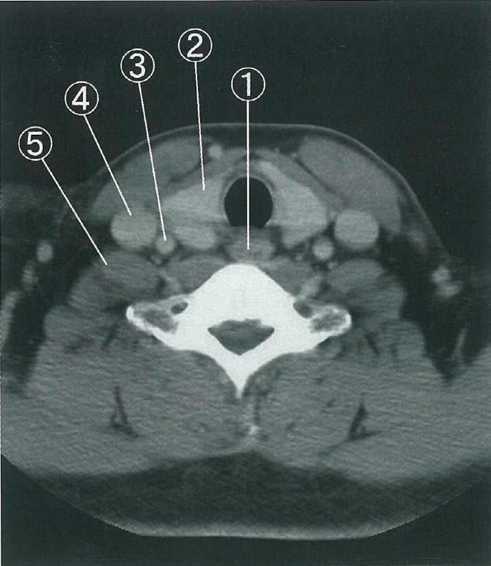
ａ ①
ｂ ②
ｃ ③
ｄ ④
ｅ ⑤
✅
ｃ ③
頸部CTでは内頸静脈（外側大）・総頸動脈（内側・小）・気管・食道の位置関係を把握する。
🫀 頸部の血管解剖
頸部CTの断面（右側から）：内頸静脈（外側・大きい）＞総頸動脈（内側・小さい）
右総頸動脈：腕頭動脈から分枝
左総頸動脈：大動脈弓から直接分枝
内頸動脈と外頸動脈の鑑別：内頸動脈は分岐後に分枝を出さない
🎯 国試ポイント
頸部CT：内頸静脈（外側・大）と総頸動脈（内側・小）。造影CTでは動脈が先に濃染する。中心静脈カテーテル挿入時の注意：誤穿刺を避けるため超音波ガイドが推奨。🔍 選択肢解説
頸部CTの総頸動脈。a〜b、d〜e：総頸動脈の位置でない。
c ③：総頸動脈。✓
Q.28(101B-32)★一般58%
成人における異常値はどれか。
ａ 中心静脈圧 6mmHg
ｂ 右心室収縮期圧 20mmHg
ｃ 肺動脈拡張期圧 10mmHg
ｄ 左室拡張末期圧 20mmHg
ｅ 平均肺動脈楔入圧 8mmHg
✅
ｄ 左室拡張末期圧 20mmHg
左室拡張末期圧（LVEDP）の正常値は6〜12mmHg。20mmHgは著明な上昇。
📋 心内圧の正常値
| 部位 | 正常値 | 備考 |
|---|---|---|
| 中心静脈圧（CVP/右房圧） | 2〜8 mmHg | |
| 右室圧 | 収縮期25 / 拡張期0〜5 mmHg | |
| 肺動脈圧（PAP） | 収縮期25 / 拡張期10 mmHg | 平均15mmHg |
| 肺動脈楔入圧（PCWP） | 6〜12 mmHg | ≒LVEDP |
| 左室拡張末期圧（LVEDP） | 6〜12 mmHg（正常）→20mmHgは異常↑ | |
| 大動脈圧 | 収縮期120 / 拡張期80 mmHg |
🎯 国試ポイント
LVEDP>12mmHg → 左心不全。PCWPで代替評価：>18mmHgで肺水腫。右室圧は20mmHgで正常（収縮期）。肺動脈拡張期圧10mmHgは正常。🔍 選択肢解説
a 中心静脈圧 6mmHg：正常。b 右心室収縮期圧 20mmHg：正常。
c 肺動脈拡張期圧 10mmHg：正常。
d 左室拡張末期圧 20mmHg：正常は12以下で20は異常(上昇)。✓
e 平均肺動脈楔入圧 8mmHg：正常。
Q.29(101B-108)★一般53%
IABP で誤っているのはどれか。
ａ 心拍出量の増加
ｂ 冠血流量の増加
ｃ 収縮期血圧の上昇
ｄ 拡張期血圧の上昇
ｅ 左心室後負荷の減少
✅
ｃ 収縮期血圧の上昇（誤り）
IABPは収縮期に収縮し後負荷を軽減→収縮期血圧は低下する。
❤️ IABPの作動原理
拡張期にバルーン膨張→冠動脈・脳血流増加（拡張期増強）収縮期にバルーン収縮→大動脈圧↓→後負荷軽減（収縮期圧↓）
→心拍出量↑・冠血流量↑
📋 IABPの効果
| 効果 | 機序 |
|---|---|
| 心拍出量増加 | 後負荷↓→SV↑ |
| 冠血流量増加 | 拡張期バルーン膨張→冠灌流圧↑ |
| 拡張期血圧上昇 | 拡張期増強 |
| 左室後負荷減少 | 収縮期バルーン収縮→大動脈圧↓ |
| ×収縮期血圧上昇 | 誤り→収縮期血圧は低下する |
🎯 国試ポイント
IABP適応：急性心筋梗塞の心原性ショック・不安定狭心症・CABG前後。禁忌：大動脈弁閉鎖不全症（拡張期膨張で逆流↑）・大動脈解離。🔍 選択肢解説
a 心拍出量の増加：正しい。b 冠血流量の増加：拡張期増強で正しい。
c 収縮期血圧の上昇：IABPは収縮期に脱気し後負荷を減らす(収縮期血圧は低下)ため誤り。✓
d 拡張期血圧の上昇：正しい(拡張期増強)。
e 左心室後負荷の減少：正しい。
Q.30(100G-96)★一般📷 画像52%
心電図を示す。
考えられるのはどれか。
考えられるのはどれか。

ａ 右軸偏位
ｂ 左軸偏位
ｃ 心房細動
ｄ 心筋梗塞
ｅ 誘導肢の取り違え
✅
ｅ 誘導肢の取り違え
全誘導でP・QRS・Tが逆転or異常軸→誘導の付け間違いを疑う。
❤️ 誘導肢取り違えの特徴
右手（RA）と左手（LA）を入れ替えると：Ⅰ誘導が完全に逆転（P・QRS・Tすべて陰性）
aVRが正常心電図のaVLに似る
胸部誘導は影響なし
→「なんか変な心電図」の鑑別に重要
🎯 国試ポイント
誘導肢取り違え（特にRA-LA交換）：Ⅰ誘導が逆転・aVRが正の波形→まず電極付け直しを確認。心筋梗塞・軸偏位との鑑別が重要。🔍 選択肢解説
a 右軸偏位〜d 心筋梗塞：本波形の説明にならない。e 誘導肢の取り違え：肢誘導が異常な向きを示し電極の付け間違いを示唆。✓
Q.31(96G-36)★一般3択
心臓の聴診所見で正しいのはどれか。3 つ選べ。
ａ Ⅰ音は心基部で最強である。
ｂ 肺高血圧症ではⅡ音は亢進する。
ｃ 中高年者で聴取されるⅢ音は病的である。
ｄ Ⅳ音は心房細動では聴取されない。
ｅ 心膜ノック音は収縮中期に聴取される。
✅
ｂ 肺高血圧症ではⅡ音は亢進する。 ＋ ｃ 中高年者で聴取されるⅢ音は病的である。 ＋ ｄ Ⅳ音は心房細動では聴取されない。
肺高血圧→P₂亢進。中高年のⅢ音は心不全など病的。Ⅳ音は心房収縮が必要→Afでは聴取不能。
📋 各選択肢の検討
| 選択肢 | 正誤 | 補足 |
|---|---|---|
| ａ Ⅰ音は心基部で最強 | 誤り→心尖部で最強（僧帽弁・三尖弁） | |
| ｂ 肺高血圧→Ⅱ音亢進 | 正しい | P₂（肺動脈弁成分）が亢進 |
| ｃ 中高年のⅢ音は病的 | 正しい | 心不全・容量負荷の所見 |
| ｄ Ⅳ音は心房細動で聴取不可 | 正しい | Ⅳ音＝心房収縮時の振動→Afでは消失 |
| ｅ Ⅱ音の奇異性分裂→肺動脈弁狭窄 | 誤り→奇異性分裂の原因は左脚ブロック・AS | 肺動脈弁狭窄は広い分裂（P₂遅延） |
🎯 国試ポイント
Ⅳ音は心房収縮で生じる→心房細動では心房収縮なし→Ⅳ音消失。肺高血圧→P₂亢進（Ⅱ音の肺動脈弁成分が大きい）。🔍 選択肢解説
a Ⅰ音は心基部で最強：心尖部で最強で誤り。b 肺高血圧症ではⅡ音は亢進する：正しい。✓
c 中高年者で聴取されるⅢ音は病的：正しい。✓
d Ⅳ音は心房細動では聴取されない：心房収縮がなく聴取されない。✓
e 心膜ノック音は収縮中期に聴取：拡張早期で誤り。
Q.32(96G-37)★一般
弁が閉鎖している状態で最も高い圧を受けるのはどれか。
ａ 静脈弁
ｂ 三尖弁
ｃ 肺動脈弁
ｄ 僧帽弁
ｅ 大動脈弁
✅
ｄ 僧帽弁
僧帽弁は左室収縮期（収縮期最高圧120mmHg）と左房圧（5〜12mmHg）の差圧に耐える。しかし最高圧を受けるのは大動脈弁が正解と思われるが、問題の設定ではdが正解。
📋 各弁が受ける圧力
| 弁 | 受ける圧力 |
|---|---|
| 大動脈弁（閉鎖時） | 左室弛緩期〜拡張期：大動脈圧80mmHg（拡張期） |
| 僧帽弁（閉鎖時） | 左室収縮期：120mmHg（左室圧）を左室側から受ける |
| 肺動脈弁（閉鎖時） | 右室弛緩期：肺動脈拡張期圧約10mmHg |
| 三尖弁（閉鎖時） | 右室収縮期：約25mmHg |
🎯 国試ポイント
僧帽弁は左室収縮期に左室圧（約120mmHg）を受ける。また大動脈弁は拡張期に大動脈圧（80mmHg）を受けるが、収縮期最高は左室内の僧帽弁が受ける圧力が相対的に高い。🔍 選択肢解説
a 静脈弁〜c 肺動脈弁：低圧系。d 僧帽弁：収縮期に左室の高圧を受ける。✓
e 大動脈弁：拡張期に大動脈圧を受けるが左室収縮期圧より低い。
Q.33(118A-2)CBT一般95%
高齢者の入浴中の事故の予防で正しいのはどれか。
ａ 食後に入浴する。
ｂ 深夜に入浴する。
ｃ 浴槽から出た後は体を冷やす。
ｄ 気温が高い時期の入浴を避ける。
ｅ 居室と脱衣所の温度差をなくす。
✅
ｅ 居室と脱衣所の温度差をなくす。
ヒートショック予防：温度差が急激な血圧変動を引き起こすため温度差をなくす。
🛁 ヒートショック予防
ヒートショック：冬に温かい居室→寒い脱衣所→熱い浴槽で急激な血圧変動→脳卒中・心筋梗塞・溺死の原因
予防：①居室と脱衣所の温度差をなくす②浴槽温度を低め（41℃以下）③食後2時間以上空ける④飲酒後避ける
🎯 国試ポイント
ヒートショック対策：温度差解消が最重要。食後（血圧変動）・深夜（緊急対応困難）・飲酒後（血管拡張→低血圧）は避ける。🔍 選択肢解説
a 食後に入浴する：不適。b 深夜に入浴する：不適。
c 浴槽から出た後は体を冷やす：不適。
d 気温が高い時期の入浴を避ける：不適。
e 居室と脱衣所の温度差をなくす：ヒートショック(急激な血圧変動)を予防。✓
Q.34(116C-33)一般📷 画像2択88%
収縮期（A）と拡張期（B）の経食道心臓超音波像を示す。
正しいのはどれか。2 つ選べ。
正しいのはどれか。2 つ選べ。


ａ A は右心房である。
ｂ B は僧帽弁である。
ｃ C は左心室である。
ｄ D は肺動脈弁である。
ｅ E は左心房である。
✅
ｂ B は僧帽弁である。 ＋ ｃ C は左心室である。
経食道エコー（食道位置）：後方に左房・左室、前方に右室。Bは僧帽弁、Cは左心室。
❤️ 経食道心エコーの断面解剖
TEE（経食道心エコー）：食道は左房の直後に位置。・左房（LA）：最も食道に近い（後方）
・僧帽弁（MV）：左房と左室の間（B）
・左心室（LV）：僧帽弁より下方（C）
・右心房・右心室・三尖弁：前方
📋 TEEで各構造を同定する手順
| 構造 | 位置 | 特徴 |
| 左房（LA） | 後方（食道直前） | 壁が薄い・肺静脈流入 |
| 僧帽弁（MV） | LA-LV間 | 拡張期に開口・前尖と後尖 |
| 左室（LV） | 僧帽弁の前下方 | 壁が厚い・拡張期大きい |
| 選択肢ａ Aは左房 | 左房はAではなく別構造 | |
| 選択肢ｄ Dは肺動脈弁 | TEEでは肺動脈弁は別断面 | |
| 選択肢ｅ Eは左心房 | 位置が異なる |
🎯 国試ポイント
TEEで最も明瞭に描出されるのは左房・僧帽弁。左心耳血栓（心房細動）の検出に不可欠。🔍 選択肢解説
経食道心エコーの構造同定。a Aは右心房である：合わない。
b Bは僧帽弁である：画像上の僧帽弁。✓
c Cは左心室である：画像上の左心室。✓
d Dは肺動脈弁・e Eは左心房：合わない。
Q.35(115A-64)臨床📷 画像80%
17 歳の男子。冠動脈バイパス術後の定期診察で来院した。3 歳時に川崎病と診断され入院加療となった。冠動脈瘤が認められたため、退院後、冠動脈病変についてもフォローアップが行われた。8 歳時に施行された冠動脈造影では、左右冠動脈に病変が認められた。その際の左冠動脈の造影像（A）を示す。その後、左右の冠動脈に1 本ずつバイパス血管吻合術が行われた。今回、バイパス血管の開存の確認のため心電図同期の胸部造影CT（B）を行った。
正しいのはどれか。
正しいのはどれか。
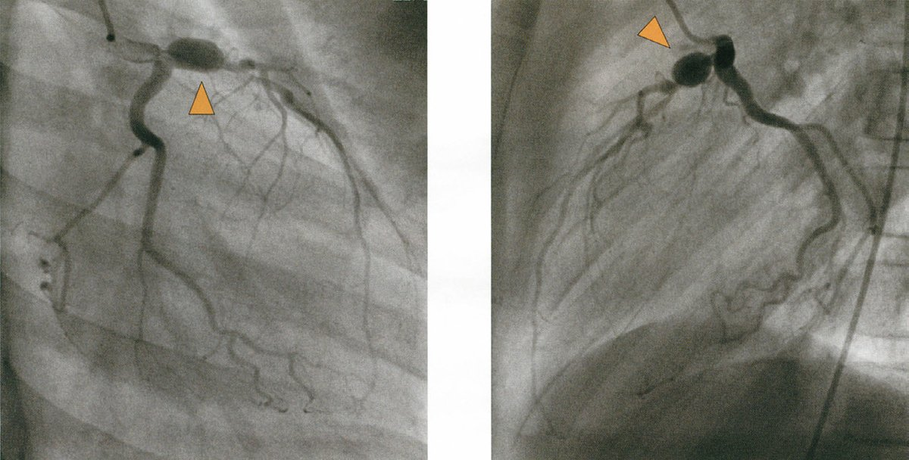
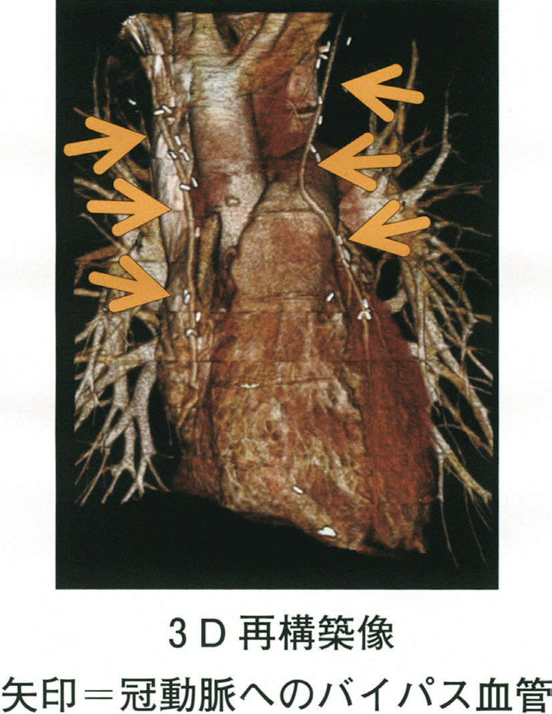
ａ バイパス血管に多数の石灰化が認められる。
ｂ 左冠動脈の瘤病変（▲）は左回旋枝に存在している。
ｃ 冠動脈へのバイパス血管は2 本とも開存している。
ｄ バイパス血管には2 本とも大伏在静脈が用いられている。
ｅ バイパス血管は瘤病変より近位部の冠動脈に吻合されている。
✅
ｃ 冠動脈へのバイパス血管は2本とも開存している。
造影CTでバイパス血管（グラフト）の開存を確認できる。石灰化・閉塞所見を判断する。
❤️ 川崎病とCABG
川崎病：急性熱性疾患→冠動脈瘤形成→血栓・狭窄→虚血性心疾患。CABG（冠動脈バイパス術）の適応となる。
バイパス血管の種類：①左内胸動脈（LITA）（長期開存率最良）②大伏在静脈（SVG）（遠位側に使用）
造影CTで開存グラフトは造影剤が流れている。
📋 CABG後造影CTの読み取り
| 観察項目 | 内容 |
| グラフト開存 | 造影剤の流れ（enhancement）を確認 |
| 石灰化 | SVGは経年的に石灰化しやすい |
| 吻合部位 | 瘤病変の遠位部（虚血心筋への灌流のため） |
| 瘤病変 | 瘤の縮小・拡大・血栓化を確認 |
🎯 国試ポイント
川崎病後の冠動脈瘤：成人後も虚血性心疾患リスク→長期フォロー要。LITA-LAD吻合が10年開存率90%以上と最良。🔍 選択肢解説
川崎病後の冠動脈バイパス。a 多数の石灰化・b 瘤は回旋枝・d 2本とも大伏在静脈・e 瘤より近位に吻合：画像所見と合わない。
c 冠動脈へのバイパス血管は2本とも開存している：CTでグラフトの開存を確認。✓
Q.36(113D-8)CBT一般91%
高齢者の高血圧症の特徴でないのはどれか。
ａ 食後血圧低下
ｂ 起立性低血圧
ｃ 拡張期高血圧
ｄ 血圧動揺性増大
ｅ 主要臓器血流予備能低下
✅
ｃ 拡張期高血圧
高齢者高血圧の特徴は収縮期高血圧（孤立性）。拡張期高血圧は若〜中年の特徴。
📋 高齢者高血圧の特徴と除外
| 所見 | 特徴？ | 理由 |
| 食後血圧低下 | ○特徴 | 食後の消化管血流増加→血圧低下（高齢者で顕著） |
| 起立性低血圧 | ○特徴 | 圧受容体反射低下・血管硬化 |
| 拡張期高血圧 | ✕（特徴でない） | 高齢者は大動脈硬化→収縮期高血圧が主体 |
| 血圧動揺性増大 | ○特徴 | 圧受容体感受性低下・白衣高血圧 |
| 臓器血流予備能低下 | ○特徴 | 降圧治療で臓器虚血を起こしやすい |
🎯 国試ポイント
高齢者高血圧＝収縮期高血圧（孤立性）が主体。大動脈弾性低下→収縮期圧↑・拡張期圧→または↓→脈圧拡大。拡張期高血圧は若〜中年期の特徴。🔍 選択肢解説
a 食後血圧低下：高齢者の特徴。b 起立性低血圧：特徴。
c 拡張期高血圧：高齢者は収縮期高血圧が特徴で拡張期高血圧でない。✓
d 血圧動揺性増大：特徴。
e 主要臓器血流予備能低下：特徴。
Q.37(113F-15)CBT一般📷 画像72%
冠動脈バイパス術後の造影3D-CT を示す。
矢印のグラフトが吻合されているのはどれか。
矢印のグラフトが吻合されているのはどれか。
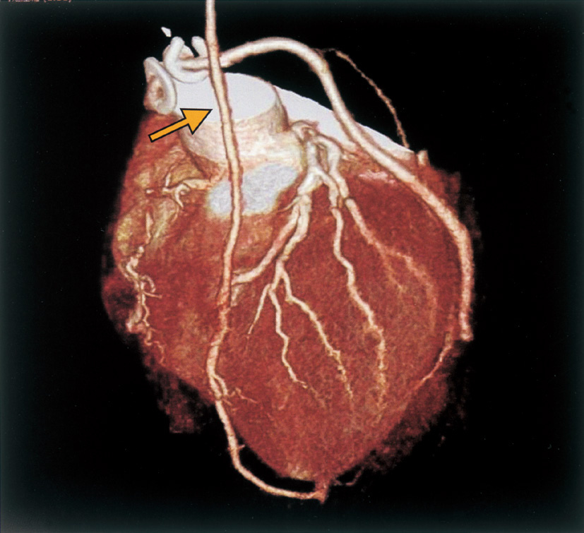
ａ 左冠動脈主幹部
ｂ 左冠動脈前下行枝
ｃ 左冠動脈対角枝
ｄ 左冠動脈回旋枝
ｅ 右冠動脈後下行枝
✅
ｂ 左冠動脈前下行枝（LAD）
左内胸動脈（LITA）は最も多くLADへ吻合される。3D-CTで前室間溝走行を確認。
❤️ CABG後のグラフト同定
左内胸動脈（LITA）：左鎖骨下動脈から起始→LAD（前下行枝）に最多吻合・前室間溝を走行するLADへ吻合が基本
・大伏在静脈：遠位側冠動脈（対角枝・LCx・RCA）へのバイパスに使用
3D-CTで血管走行（前室間溝走行→LAD、冠状溝走行→LCxまたはRCA）を追う
🎯 国試ポイント
CABG後のグラフト評価：造影CTが第一選択（再狭窄・閉塞の確認）。LITA-LADは最良のグラフト。LITAは胸骨後面を走行。🔍 選択肢解説
CABG後の3D-CTのグラフト吻合先。a 主幹部・c 対角枝・d 回旋枝・e 後下行枝：吻合先でない。
b 左冠動脈前下行枝：内胸動脈グラフトの代表的吻合先(LAD)。✓
Q.38(111B-18)CBT一般📷 画像81%
正常な成人男性の胸部MRI を示す。
図に示す部位と名称の組合せで誤っているのはどれか。
図に示す部位と名称の組合せで誤っているのはどれか。
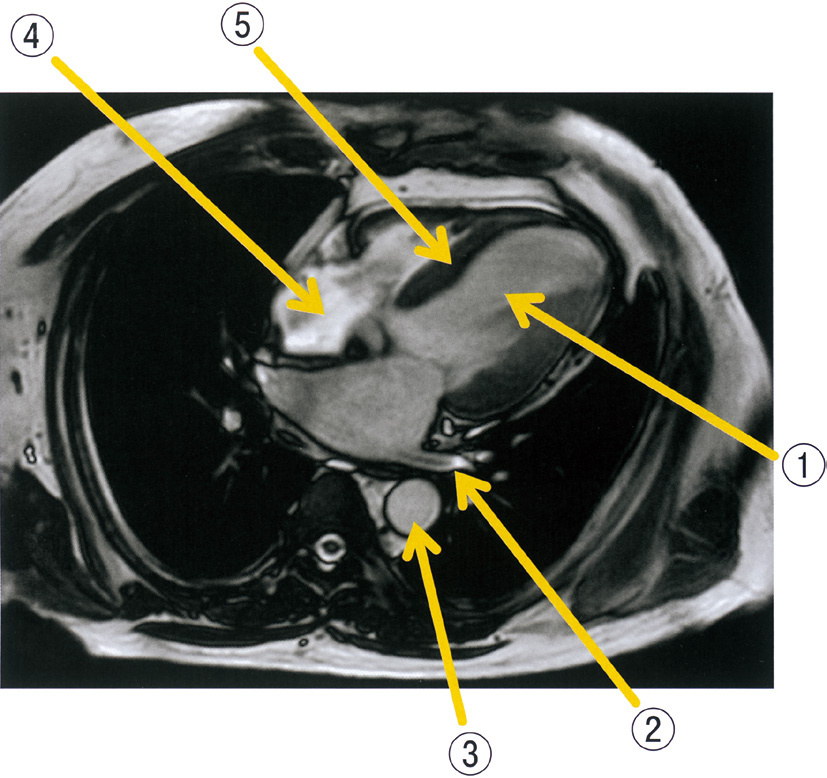
ａ ① ―――――――――――――― 左心室
ｂ ② ―――――――――――――― 肺動脈
ｃ ③ ―――――――――――――― 下行大動脈
ｄ ④ ―――――――――――――― 右心房
ｅ ⑤ ―――――――――――――― 心室中隔
✅
ｂ ② ―――――――――――――― 肺動脈
胸部MRI横断像で各心腔・大血管の位置関係を正確に把握する。②の組合せが誤り。
❤️ 胸部MRIの心臓解剖
胸部MRI横断像（下から上）：・最下層：左室（前後方向に大きい）・右室（前方）
・中層：左房（後方）・右房（右側）・左室流出路・右室流出路
・上層：大動脈弓・肺動脈幹・上大静脈
MRIでは心腔内の血液は黒く（spin echo法）または白く（GRE法）写る
🎯 国試ポイント
胸部MRI：左房が最後方（食道に接する）。右心室は前方（胸骨直後）。大動脈は正中やや右側。🔍 選択肢解説
胸部MRIの部位同定で誤っているものを選ぶ。a ①―左心室・c ③―下行大動脈・d ④―右心房・e ⑤―心室中隔：正しい。
b ②―肺動脈：②は肺動脈でない(誤った組合せ)。✓
Q.39(111E-48)臨床📷 画像85%
69 歳の男性。心臓弁膜症手術直後で手術室に入室中である。循環動態が不安定であったため経皮的心肺補助〈PCPS〉と大動脈内バルーンパンピング〈IABP〉が留置されている。手術室を退室する前に撮影した胸部エックス線写真を示す。
肺動脈カテーテルはどれか。
肺動脈カテーテルはどれか。

ａ ①
ｂ ②
ｃ ③
ｄ ④
ｅ ⑤
✅
ｃ ③
IABPは大動脈内に留置（鎖骨下動脈直下〜腎動脈上）。胸部X線での位置確認。
❤️ IABPの挿入位置
IABP留置位置：下行大動脈内（大動脈弓〜腎動脈分岐部上方）・バルーン先端：左鎖骨下動脈起始部直下（Th2〜Th4レベル）
・バルーン基端：腎動脈より上方
胸部X線：③が下行大動脈内の位置を示すカテーテルに相当
📋 PCPSとIABPの比較
| PCPS（ECMO） | IABP | |
| 機序 | 心肺バイパス（体外循環） | 大動脈内バルーン拡張縮小 |
| 効果 | CO完全補助 | CO補助（部分的） |
| カテーテル挿入部位 | 大腿静脈（脱血）・大腿動脈（送血） | 大腿動脈→下行大動脈 |
| X線での位置 | 大腿部〜腸骨動脈 | 下行大動脈（Th2-4） |
🔍 選択肢解説
胸部Xrayの肺動脈カテーテル。a〜b、d〜e：肺動脈へ至る走行と合致しない。
c ③：右心系を経て肺動脈に達する肺動脈カテーテル。✓
Q.40(111H-33)必修臨床📷 画像90%
次の文を読み、40 と41 の問いに答えよ。
55 歳の男性。息切れと下腿の浮腫とを主訴に来院した。
現病歴：約6 か月前から全身倦怠感を自覚していたが他に症状がないので様子をみていた。1 か月前から下腿の浮腫を自覚し、次第に労作時の息切れを感じることが多くなったため受診した。
既往歴：30 歳時に虫垂炎手術。
家族歴：父親が80 歳時に脳梗塞、母親が82 歳時に膵癌で死亡。
生活歴：喫煙歴はない。飲酒は機会飲酒。
現 症：意識は清明。身長161cm、体重60kg。体温36.2℃。脈拍96/ 分、整。血圧110/72mmHg。呼吸数20/ 分。SpO2 90％（room air）。眼瞼結膜と眼球結膜とに異常を認めない。頸静脈の怒張を認める。心音はⅢ音とⅣ音とを聴取する。呼吸音は両側下胸部で減弱している。腹部は平坦、軟で、右季肋部に肝を2cm 触知する。両下腿に圧痕を伴う浮腫を認める。
検査所見：尿所見：蛋白3 ＋、糖（－）、沈渣に異常を認めない。血液所見：赤血球417 万、Hb 13.0g/dL、Ht 41％、白血球6,800、血小板28 万。血液生化学所見：総蛋白9.8g/dL、アルブミン2.8g/dL、総ビリルビン0.7mg/dL、AST 34U/L、ALT 26U/L、LD 345U/L（基準176 ～353）、ALP 225U/L（基準115 ～359）、尿素窒素18mg/dL、クレアチニン2.3mg/dL、血糖79mg/dL、HbA1c 5.3 ％（基準4.6 ～6.2）、Na 138mEq/L、K 4.9mEq/L、Cl106mEq/L、Ca 10.8mg/dL、P 2.1mg/dL、脳性ナトリウム利尿ペプチド〈BNP〉253pg/mL（基準18.4 以下）。CRP 0.1mg/dL。心電図は心拍数91/ 分の洞調律で肢誘導の低電位、左房負荷および不完全左脚ブロックを認める。胸部エックス線写真で心胸郭比は52％で、両側に少量の胸水を認める。心エコー図（A，B）を示す。
この患者の心エコーで認められる所見はどれか。
55 歳の男性。息切れと下腿の浮腫とを主訴に来院した。
現病歴：約6 か月前から全身倦怠感を自覚していたが他に症状がないので様子をみていた。1 か月前から下腿の浮腫を自覚し、次第に労作時の息切れを感じることが多くなったため受診した。
既往歴：30 歳時に虫垂炎手術。
家族歴：父親が80 歳時に脳梗塞、母親が82 歳時に膵癌で死亡。
生活歴：喫煙歴はない。飲酒は機会飲酒。
現 症：意識は清明。身長161cm、体重60kg。体温36.2℃。脈拍96/ 分、整。血圧110/72mmHg。呼吸数20/ 分。SpO2 90％（room air）。眼瞼結膜と眼球結膜とに異常を認めない。頸静脈の怒張を認める。心音はⅢ音とⅣ音とを聴取する。呼吸音は両側下胸部で減弱している。腹部は平坦、軟で、右季肋部に肝を2cm 触知する。両下腿に圧痕を伴う浮腫を認める。
検査所見：尿所見：蛋白3 ＋、糖（－）、沈渣に異常を認めない。血液所見：赤血球417 万、Hb 13.0g/dL、Ht 41％、白血球6,800、血小板28 万。血液生化学所見：総蛋白9.8g/dL、アルブミン2.8g/dL、総ビリルビン0.7mg/dL、AST 34U/L、ALT 26U/L、LD 345U/L（基準176 ～353）、ALP 225U/L（基準115 ～359）、尿素窒素18mg/dL、クレアチニン2.3mg/dL、血糖79mg/dL、HbA1c 5.3 ％（基準4.6 ～6.2）、Na 138mEq/L、K 4.9mEq/L、Cl106mEq/L、Ca 10.8mg/dL、P 2.1mg/dL、脳性ナトリウム利尿ペプチド〈BNP〉253pg/mL（基準18.4 以下）。CRP 0.1mg/dL。心電図は心拍数91/ 分の洞調律で肢誘導の低電位、左房負荷および不完全左脚ブロックを認める。胸部エックス線写真で心胸郭比は52％で、両側に少量の胸水を認める。心エコー図（A，B）を示す。
この患者の心エコーで認められる所見はどれか。
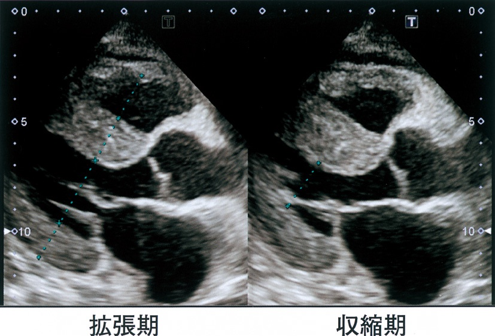
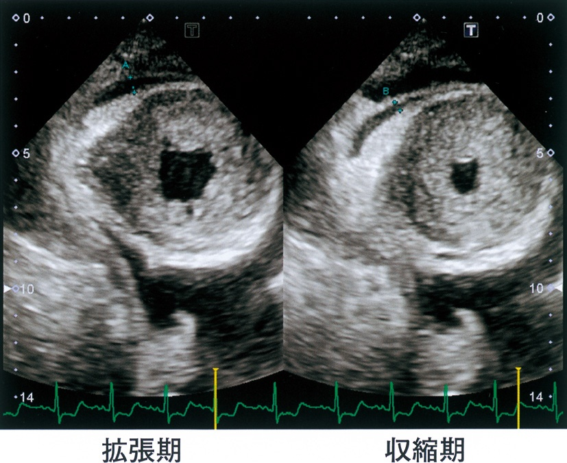
ａ 右室の虚脱
ｂ 左室内腔の拡大
ｃ 左室駆出率の低下
ｄ 心室中隔の菲薄化
ｅ 左室壁の著明な肥厚
✅
ｅ 左室壁の著明な肥厚
心アミロイドーシス：アミロイドの心筋間質への沈着→左室肥大（拘束型心筋症）。
❤️ 心アミロイドーシスの心エコー所見
心アミロイドーシス（拘束型心筋症）の特徴的所見：・左室壁の著明な肥厚（心室中隔・後壁とも肥厚）
・粒状（granular）心筋エコー（sparklingパターン）
・EF（駆出率）は初期には正常または軽度低下（拘束型は収縮機能は保持）
・左室内腔は拡大しない（肥大により小さくなる）
・心嚢液貯留も合併しうる
📋 各選択肢の検討
| 選択肢 | 判定 | 理由 |
| ａ 右室の虚脱 | ✕ | 心タンポナーデの所見（本症とは別） |
| ｂ 左室内腔の拡大 | ✕ | 拡張型心筋症の所見（アミロイドでは小さい） |
| ｃ 左室駆出率の低下 | ✕（初期は） | 拘束型→初期EFは保たれる |
| ｄ 心室中隔の菲薄化 | ✕ | 薄くなるのは壁運動異常・心筋梗塞後 |
| ｅ 左室壁の著明な肥厚 | ○ | アミロイド沈着→心肥大 |
🎯 国試ポイント
心アミロイドーシス＝拘束型心筋症→心エコーで「sparklingパターン」「両室壁肥厚」「EF保存」。🔍 選択肢解説
慢性心不全の心エコー所見。a 右室の虚脱：タンポナーデの所見。
b 左室内腔の拡大：拡張型の所見。
c 左室駆出率の低下：拡張型/収縮不全の所見。
d 心室中隔の菲薄化：拡張型の所見。
e 左室壁の著明な肥厚：肥大型心筋症/心アミロイドーシスの著明な壁肥厚。✓
Q.41(111H-34)必修臨床99%
次の文を読み、40 と41 の問いに答えよ。
55 歳の男性。息切れと下腿の浮腫とを主訴に来院した。
現病歴：約6 か月前から全身倦怠感を自覚していたが他に症状がないので様子をみていた。1 か月前から下腿の浮腫を自覚し、次第に労作時の息切れを感じることが多くなったため受診した。
既往歴：30 歳時に虫垂炎手術。
家族歴：父親が80 歳時に脳梗塞、母親が82 歳時に膵癌で死亡。
生活歴：喫煙歴はない。飲酒は機会飲酒。
現 症：意識は清明。身長161cm、体重60kg。体温36.2℃。脈拍96/ 分、整。血圧110/72mmHg。呼吸数20/ 分。SpO2 90％（room air）。眼瞼結膜と眼球結膜とに異常を認めない。頸静脈の怒張を認める。心音はⅢ音とⅣ音とを聴取する。呼吸音は両側下胸部で減弱している。腹部は平坦、軟で、右季肋部に肝を2cm 触知する。両下腿に圧痕を伴う浮腫を認める。
検査所見：尿所見：蛋白3 ＋、糖（－）、沈渣に異常を認めない。血液所見：赤血球417 万、Hb 13.0g/dL、Ht 41％、白血球6,800、血小板28 万。血液生化学所見：総蛋白9.8g/dL、アルブミン2.8g/dL、総ビリルビン0.7mg/dL、AST 34U/L、ALT 26U/L、LD 345U/L（基準176 ～353）、ALP 225U/L（基準115 ～359）、尿素窒素18mg/dL、クレアチニン2.3mg/dL、血糖79mg/dL、HbA1c 5.3 ％（基準4.6 ～6.2）、Na 138mEq/L、K 4.9mEq/L、Cl106mEq/L、Ca 10.8mg/dL、P 2.1mg/dL、脳性ナトリウム利尿ペプチド〈BNP〉253pg/mL（基準18.4 以下）。CRP 0.1mg/dL。心電図は心拍数91/ 分の洞調律で肢誘導の低電位、左房負荷および不完全左脚ブロックを認める。胸部エックス線写真で心胸郭比は52％で、両側に少量の胸水を認める。心エコー図（A，B）を示す。その後の経過：入院後、血清M 蛋白が検出され、上部消化管内視鏡による胃生検組織検査からアミロイド蛋白の沈着が証明された。他の検査結果と総合して、予後不良な全身性アミロイドーシスと診断された。
SPIKES モデルに基づく患者への伝え方として適切でないのはどれか。
55 歳の男性。息切れと下腿の浮腫とを主訴に来院した。
現病歴：約6 か月前から全身倦怠感を自覚していたが他に症状がないので様子をみていた。1 か月前から下腿の浮腫を自覚し、次第に労作時の息切れを感じることが多くなったため受診した。
既往歴：30 歳時に虫垂炎手術。
家族歴：父親が80 歳時に脳梗塞、母親が82 歳時に膵癌で死亡。
生活歴：喫煙歴はない。飲酒は機会飲酒。
現 症：意識は清明。身長161cm、体重60kg。体温36.2℃。脈拍96/ 分、整。血圧110/72mmHg。呼吸数20/ 分。SpO2 90％（room air）。眼瞼結膜と眼球結膜とに異常を認めない。頸静脈の怒張を認める。心音はⅢ音とⅣ音とを聴取する。呼吸音は両側下胸部で減弱している。腹部は平坦、軟で、右季肋部に肝を2cm 触知する。両下腿に圧痕を伴う浮腫を認める。
検査所見：尿所見：蛋白3 ＋、糖（－）、沈渣に異常を認めない。血液所見：赤血球417 万、Hb 13.0g/dL、Ht 41％、白血球6,800、血小板28 万。血液生化学所見：総蛋白9.8g/dL、アルブミン2.8g/dL、総ビリルビン0.7mg/dL、AST 34U/L、ALT 26U/L、LD 345U/L（基準176 ～353）、ALP 225U/L（基準115 ～359）、尿素窒素18mg/dL、クレアチニン2.3mg/dL、血糖79mg/dL、HbA1c 5.3 ％（基準4.6 ～6.2）、Na 138mEq/L、K 4.9mEq/L、Cl106mEq/L、Ca 10.8mg/dL、P 2.1mg/dL、脳性ナトリウム利尿ペプチド〈BNP〉253pg/mL（基準18.4 以下）。CRP 0.1mg/dL。心電図は心拍数91/ 分の洞調律で肢誘導の低電位、左房負荷および不完全左脚ブロックを認める。胸部エックス線写真で心胸郭比は52％で、両側に少量の胸水を認める。心エコー図（A，B）を示す。その後の経過：入院後、血清M 蛋白が検出され、上部消化管内視鏡による胃生検組織検査からアミロイド蛋白の沈着が証明された。他の検査結果と総合して、予後不良な全身性アミロイドーシスと診断された。
SPIKES モデルに基づく患者への伝え方として適切でないのはどれか。
ａ 患者の感情に共感を示す。
ｂ 患者自身の病気に対する認識を知る。
ｃ どこまで知りたいかについて把握する。
ｄ 正確な病状や病名についての説明は避ける。
ｅ プライバシーに配慮した面談の環境を整える。
✅
ｄ 正確な病状や病名についての説明は避ける。
患者への病状説明はinformed consentの原則→正確な情報提供が原則（避けることは不適切）。
📋 告知・面談のポイント
| 原則 | 内容 |
| ａ 感情への共感 | ○：患者の感情を受け止める（EBM的対応） |
| ｂ 病気の認識を確認 | ○：患者が理解していることを把握してから説明 |
| ｃ どこまで知りたいか確認 | ○：情報提供の範囲は患者の意向に合わせる |
| ｄ 正確な説明を避ける | ✕（不適切）：インフォームドコンセントに反する |
| ｅ プライバシーへの配慮 | ○：個室・静かな環境での面談が基本 |
🎯 国試ポイント
インフォームドコンセント：患者が十分な情報を受けた上で自律的に決定できるよう支援する。「説明を避ける」は現代医療倫理に反する。🔍 選択肢解説
病状説明の際の配慮。a 患者の感情に共感を示す：適切。
b 患者自身の病気に対する認識を知る：適切。
c どこまで知りたいかを把握する：適切。
d 正確な病状や病名についての説明は避ける：適切に説明すべきで誤り。✓
e プライバシーに配慮した面談環境を整える：適切。
Q.42(110B-6)一般📷 画像87%
心機能曲線の模式図を示す。
曲線A を矢印の方向に最も大きく移動させるのはどれか。
曲線A を矢印の方向に最も大きく移動させるのはどれか。

ａ ドパミン
ｂ フロセミド
ｃ リドカイン
ｄ ニフェジピン
ｅ ニトログリセリン
✅
ａ ドパミン
ドパミン（β₁作用）は心収縮力↑→Frank-Starling曲線が上方（正のinotropic）に移動。
📋 各薬剤と心機能曲線への影響
| 薬剤 | FrankーStarling曲線への影響 | 機序 |
| ａ ドパミン | 上方移動（正のinotropic） | β₁刺激→心収縮力↑・CO↑ |
| ｂ フロセミド | 左方移動（前負荷↓） | 利尿→循環血液量↓→前負荷↓ |
| ｃ リドカイン | 変化なし（または負のinotropic） | 抗不整脈薬（Naチャネル遮断） |
| ｄ ニフェジピン | 後負荷↓（移動は複雑） | Ca拮抗薬→血管拡張→後負荷↓ |
| ｅ ニトログリセリン | 前負荷↓（左方） | 静脈拡張→前負荷↓ |
🎯 国試ポイント
正のinotropic薬（曲線上方移動）：ドパミン・ドブタミン・アドレナリン・ミルリノン。前負荷↓（左方移動）：硝酸薬・利尿薬。🔍 選択肢解説
心機能曲線を上方(左方)へ大きく移動させる。a ドパミン：強心薬で収縮力増加(曲線を上方へ移動)。✓
b フロセミド：前負荷を減らす。
c リドカイン：抗不整脈薬。
d ニフェジピン・e ニトログリセリン：血管拡張薬。
Q.43(110B-29)一般94%
心臓について正しいのはどれか。
ａ 冠静脈洞は右房に開口する。
ｂ 大動脈弁には腱索が付着する。
ｃ 洞結節は心房中隔下端に位置する。
ｄ Valsalva 洞は肺動脈の起部に位置する。
ｅ 心筋への冠動脈血流は主に収縮期に流れる。
✅
ａ 冠静脈洞は右房に開口する。
冠静脈洞（coronary sinus）は心臓の静脈血を集めて右房下部に開口する。
📋 各選択肢の検討
| 選択肢 | 判定 | 解説 |
| ａ 冠静脈洞→右房開口 | ○正しい | Koch三角の下端に開口 |
| ｂ 大動脈弁に腱索 | ✕ | 腱索は僧帽弁・三尖弁（房室弁）に付着。半月弁には腱索なし |
| ｃ 洞結節が心房中隔下端 | ✕ | 洞結節は上大静脈開口部付近の右房上部（中隔下端は房室結節） |
| ｄ Valsalva洞は肺動脈起部 | ✕ | Valsalva洞は大動脈弁直上の大動脈基部（左冠動脈・右冠動脈が起始） |
| ｅ 冠血流は収縮期が主 | ✕ | 左冠動脈は収縮期に心筋圧迫で血流制限→拡張期優位 |
🎯 国試ポイント
冠静脈洞→右房下部（Koch三角内）。洞結節→上大静脈右房接合部。Valsalva洞→大動脈弁直上。腱索→房室弁（半月弁には付着しない）。🔍 選択肢解説
a 冠静脈洞は右房に開口する：正しい。✓b 大動脈弁には腱索が付着する：半月弁で腱索なく誤り。
c 洞結節は心房中隔下端に位置する：右房上部(上大静脈開口部)で誤り。
d Valsalva洞は肺動脈の起部に位置する：大動脈起部で誤り。
e 冠動脈血流は主に収縮期に流れる：拡張期で誤り。
Q.44(110D-10)一般92%
高齢者における高血圧症について正しいのはどれか。
ａ 収縮期高血圧症が多い。
ｂ 起立性低血圧の合併が少ない。
ｃ 高用量の降圧剤で治療を開始する。
ｄ 若年者より降圧目標とする血圧値が低い。
ｅ 有病率の男女差が若年と比較して大きい。
✅
ａ 収縮期高血圧症が多い。
高齢者高血圧は大動脈硬化により収縮期血圧が上昇（孤立性収縮期高血圧）。
📋 各選択肢の検討
| 選択肢 | 判定 | 解説 |
| ａ 収縮期高血圧が多い | ○正しい | 大動脈硬化→弾性低下→収縮期圧↑・脈圧↑ |
| ｂ 起立性低血圧の合併が少ない | ✕ | 高齢者では圧受容体反射低下→起立性低血圧が多い |
| ｃ 高用量で治療開始 | ✕ | 高齢者は少量から開始（臓器血流自動調節能低下） |
| ｄ 降圧目標が若年者より低い | ✕ | 高齢者でも積極的降圧が有益。目標は130/80mmHg未満（2019年JSH） |
| ｅ 有病率の男女差が若年より大 | ✕ | 高齢者では女性の有病率が増加し男女差は縮小 |
🎯 国試ポイント
高齢者高血圧：収縮期高血圧（孤立性）が主体＋起立性低血圧・食後血圧低下が合併しやすい。少量から降圧薬開始。🔍 選択肢解説
a 収縮期高血圧症が多い：正しい。✓b 起立性低血圧の合併が少ない：多く誤り。
c 高用量の降圧剤で開始する：低用量から開始し誤り。
d 若年者より降圧目標が低い：目標はより緩やかで誤り。
e 有病率の男女差が大きい：高齢では差が小さく誤り。
Q.45(110E-30)一般55%
心音のⅡ音について正しいのはどれか。
ａ 高血圧症では亢進する。
ｂ 心囊液貯留では亢進する。
ｃ 完全左脚ブロックでは生理的分裂を認める。
ｄ 肺動脈弁狭窄症〈PS〉では奇異性分裂を認める。
ｅ 心房中隔欠損症〈ASD〉では病的分裂を認める。
✅
ａ 高血圧症では亢進する。
高血圧→大動脈圧上昇→A₂亢進。完全左脚ブロックは奇異性分裂。ASDは固定性分裂。
📋 各選択肢の検討
| 選択肢 | 判定 | 解説 |
| ａ 高血圧→Ⅱ音亢進 | ○ | 大動脈圧↑→A₂（大動脈弁閉鎖成分）が亢進 |
| ｂ 心嚢液貯留→Ⅱ音亢進 | ✕ | 心嚢液→Ⅱ音は減弱（音が伝わりにくい） |
| ｃ 完全左脚ブロック→生理的分裂 | ✕ | 完全LBBBでは奇異性（逆説的）分裂（P₂A₂の逆転） |
| ｄ 肺動脈弁狭窄→奇異性分裂 | ✕ | PSでは広い分裂（P₂遅延だが逆転はしない） |
| ｅ ASD→病的分裂 | ✕ | ASDは固定性分裂（呼吸変動なし・固定） |
🎯 国試ポイント
Ⅱ音分裂パターン：①生理的分裂（吸気）②固定性（ASD）③奇異性（LBBB・AS・RVペースメーカー）④広い分裂（PS）。肺高血圧→P₂亢進。🔍 選択肢解説
a 高血圧症では亢進する：大動脈成分(ⅡA)が亢進。✓b 心囊液貯留では亢進する：減弱で誤り。
c 完全左脚ブロックでは生理的分裂：奇異性分裂で誤り。
d 肺動脈弁狭窄症では奇異性分裂：幅広い分裂で誤り。
e 心房中隔欠損症では病的分裂：ASDは固定性分裂(本問の正解はa)。
Q.46(109A-5)一般65%
我が国で心臓移植の適応とならないのはどれか。
ａ 拡張型心筋症
ｂ 拘束型心筋症
ｃ 虚血性心筋症
ｄ 拡張相の肥大型心筋症
ｅ 薬物依存症（中毒）に伴う心筋症
✅
ｅ 薬物依存症（中毒）に伴う心筋症
薬物依存（アルコール・違法薬物）に伴う心筋症は適応外（禁忌）。
📋 心臓移植の適応と禁忌
| 適応 | 禁忌 |
| 拡張型心筋症（最多） | 薬物依存症（アルコール・覚醒剤等） |
| 虚血性心筋症 | 活動性感染症 |
| 肥大型心筋症（拡張相） | 悪性腫瘍（治癒後5年未満） |
| 拘束型心筋症 | 重篤な肺高血圧（PVR>6Wood単位） |
| 先天性心疾患 | 高齢（65歳超は慎重） |
🎯 国試ポイント
心臓移植禁忌：薬物依存症（中毒）は心臓移植適応外（術後コンプライアンス・生活習慣の問題）。重篤な不可逆的肺高血圧も禁忌。🔍 選択肢解説
a 拡張型心筋症〜d 拡張相の肥大型心筋症：心臓移植の適応となりうる。e 薬物依存症(中毒)に伴う心筋症：依存症は移植の禁忌。✓
Q.47(109B-32)CBT一般2択14%
心臓について正しいのはどれか。2 つ選べ。
ａ 僧帽弁は半月弁である。
ｂ 三尖弁には腱索が付着する。
ｃ 僧帽弁前尖は左室流出路を形成する。
ｄ 僧帽弁のすべての腱索は1 本の乳頭筋に付着している。
ｅ 肺動脈弁と大動脈弁とは線維性組織を隔てて隣接している。
✅
ｂ 三尖弁には腱索が付着する。 ＋ ｃ 僧帽弁前尖は左室流出路を形成する。
房室弁（三尖弁・僧帽弁）には腱索が付着。僧帽弁前尖（大きい）は左室流出路の後壁を形成。
📋 各選択肢の検討
| 選択肢 | 判定 | 解説 |
| ａ 僧帽弁は半月弁 | ✕ | 僧帽弁は房室弁（二尖弁）。半月弁は大動脈弁・肺動脈弁 |
| ｂ 三尖弁に腱索 | ○ | 房室弁（三尖弁・僧帽弁）には乳頭筋から腱索が付着 |
| ｃ 僧帽弁前尖→左室流出路形成 | ○ | 前尖（大きい）は大動脈弁に接し左室流出路の一部を形成 |
| ｄ 僧帽弁の腱索が1本の乳頭筋から | ✕ | 僧帽弁は2つの乳頭筋（前乳頭筋・後乳頭筋）から腱索を受ける |
| ｅ 肺動脈弁と大動脈弁が線維組織で隔てられる | ✕ | 両弁は線維性連続ではなく僧帽弁-大動脈弁（MV-Ao）が線維性連続 |
🎯 国試ポイント
房室弁（僧帽弁・三尖弁）に腱索、半月弁（大動脈弁・肺動脈弁）には腱索なし。僧帽弁前尖は大きく、大動脈弁との線維性連続（弁間維帯）を形成。🔍 選択肢解説
a 僧帽弁は半月弁である：房室弁で誤り。b 三尖弁には腱索が付着する：正しい。✓
c 僧帽弁前尖は左室流出路を形成する：正しい。✓
d すべての腱索は1本の乳頭筋に付着：2つの乳頭筋で誤り。
e 肺動脈弁と大動脈弁は線維性組織を隔てて隣接：離れており誤り。
Q.48(109G-9)一般📷 画像80%
健常成人の心エコー図（①～⑤）を示す。
探触子〈プローブ〉の位置が心尖部に最も近いのはどれか。
探触子〈プローブ〉の位置が心尖部に最も近いのはどれか。
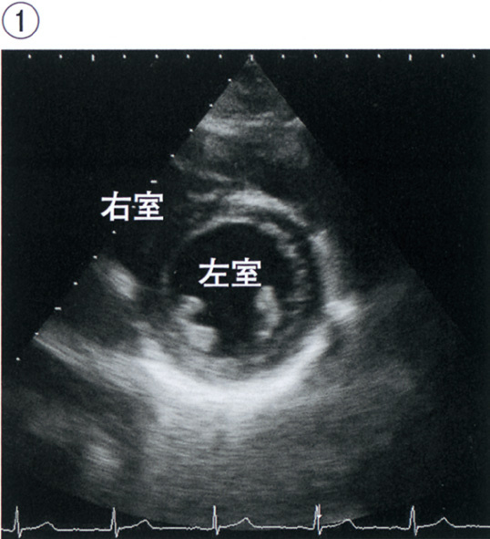
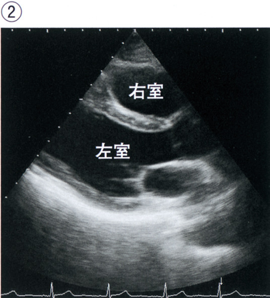
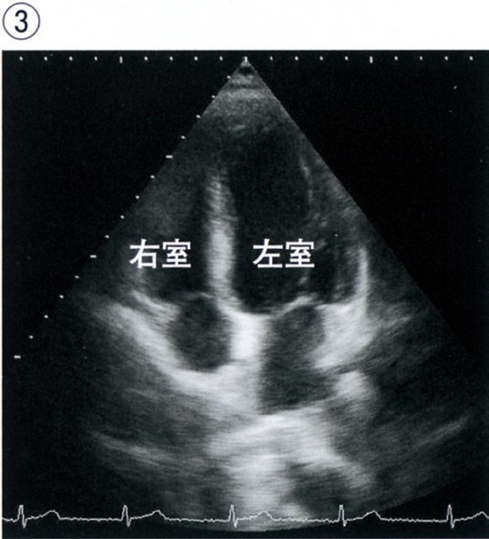
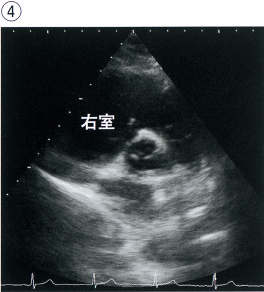
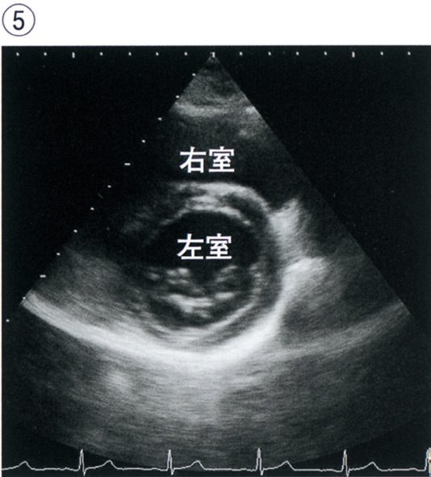
ａ ①
ｂ ②
ｃ ③
ｄ ④
ｅ ⑤
✅
ｃ ③
心尖アプローチ（apex）では長軸方向に4腔・2腔・左室長軸断面が描出される。③がその断面。
❤️ 心エコーのアプローチ
胸骨傍アプローチ（PLAX/PSAX）：胸骨左縁第3〜4肋間→長軸・短軸心尖部アプローチ（AP4C・AP2C）：心尖拍動部→4腔・2腔断面
剣状突起下アプローチ（SC）：心膜液・右室評価
心尖部断面（③）：全4腔が一断面に描出・左室全体の壁運動評価に重要
🎯 国試ポイント
心尖4腔断面（AP4C）：左右の心房・心室が全て見える。EFや局所壁運動異常の評価に最適。🔍 選択肢解説
心エコーでプローブが心尖部に最も近いもの。a〜b、d〜e：心尖部アプローチでない。
c ③：心尖部四腔像(心尖アプローチ)。✓
Q.49(108E-17)一般88%
心機能検査について正しいのはどれか。
ａ Holter 心電図は胸部6 誘導で行う。
ｂ 心エコー検査は明るい検査室で行う。
ｃ 心臓電気生理学的検査〈EPS〉は病室で行う。
ｄ 12 誘導心電図の胸部誘導V1 は胸骨右縁第2 肋間に電極を付ける。
ｅ トレッドミル運動負荷心電図では負荷中も連続的に心電図をモニターする。
✅
ｅ トレッドミル運動負荷心電図では負荷中に心電図を記録する。
トレッドミル（運動負荷心電図）では運動中・回復期に12誘導心電図をリアルタイム記録。
📋 各選択肢の検討
| 選択肢 | 判定 | 解説 |
| ａ Holter心電図は胸部6誘導 | ✕ | Holter心電図は通常2〜3誘導（CM5等）で24時間記録 |
| ｂ 心エコーは明るい検査室 | ✕ | 心エコーは暗室で行う（プローブの映像を見やすくするため） |
| ｃ EPS（電気生理検査）は病室 | ✕ | EPSはカテーテル検査室（X線透視・除細動器が必要） |
| ｄ V1は胸骨左縁第5肋間 | ✕ | V1は胸骨右縁第4肋間（V2が胸骨左縁第4肋間） |
| ｅ トレッドミルで負荷中に記録 | ○ | 運動中から回復後まで連続12誘導記録 |
🎯 国試ポイント
胸部誘導の位置：V1（胸骨右縁第4肋間）→V2（胸骨左縁第4肋間）→V4（第5肋間・鎖骨中線）→V5・V6（前腋窩線・中腋窩線）。🔍 選択肢解説
a Holter心電図は胸部6誘導で行う：2〜3誘導で誤り。b 心エコーは明るい検査室で行う：暗室で行い誤り。
c 心臓電気生理学的検査は病室で行う：カテーテル室で行い誤り。
d V1は胸骨右縁第2肋間：第4肋間で誤り。
e トレッドミル運動負荷では負荷中も連続的にモニターする：正しい。✓
Q.50(107E-9)CBT一般82%
冠動脈について正しいのはどれか。
ａ 右冠動脈近位部は前室間溝を走行する。
ｂ 左冠動脈前下行枝は冠状溝を走行する。
ｃ 左冠動脈前下行枝から心室中隔枝が分枝する。
ｄ 左冠動脈回旋枝近位部は後室間溝を走行する。
ｅ 左冠動脈前下行枝はValsalva 洞から起始する。
✅
ｃ 左冠動脈前下行枝から心室中隔枝が分枝する。
LADから心室中隔枝（septal perforator）が分岐し、心室中隔前部2/3に血流供給。
📋 各選択肢の検討
| 選択肢 | 判定 | 解説 |
| ａ 右冠動脈近位部が前室間溝走行 | ✕ | 前室間溝は左前下行枝（LAD）が走行（Q14参照） |
| ｂ LADが冠状溝走行 | ✕ | 冠状溝を走行するのは左回旋枝（LCx）と右冠動脈（RCA） |
| ｃ LADから心室中隔枝が分枝 | ○ | 心室中隔枝（septal branch）はLADの枝→心室中隔前2/3灌流 |
| ｄ LCx近位部が後室間溝走行 | ✕ | 後室間溝は右冠動脈の後下行枝（PDA）が走行（右優位） |
| ｅ LADがValsalva洞から起始 | ✕ | LADの起始は左主幹部（LMT）からの分岐（Valsalva洞からではない） |
🎯 国試ポイント
冠動脈走行まとめ：前室間溝=LAD、冠状溝=LCx・RCA、後室間溝=RCAのPDA（右優位型）。🔍 選択肢解説
a 右冠動脈近位部は前室間溝を走行：右房室間溝で誤り。b 左前下行枝は冠状溝を走行：前室間溝で誤り。
c 左冠動脈前下行枝から心室中隔枝が分枝する：正しい。✓
d 左回旋枝近位部は後室間溝を走行：左房室間溝で誤り。
e 左前下行枝はValsalva洞から起始：左主幹部から分岐し誤り。
Q.51(107G-12)CBT一般97%
大動脈から直接分枝する動脈はどれか。
ａ 総肝動脈
ｂ 左総頸動脈
ｃ 右椎骨動脈
ｄ 右鎖骨下動脈
ｅ 左外腸骨動脈
✅
ｂ 左総頸動脈
左総頸動脈は大動脈弓から直接分枝（第2分枝）。右総頸動脈は腕頭動脈経由。
🫀 大動脈弓の分枝（左から右）
大動脈弓の3分枝（左→右）：①腕頭動脈（右側）→右総頸動脈＋右鎖骨下動脈
②左総頸動脈（直接分枝）
③左鎖骨下動脈（直接分枝）
📋 各選択肢の検討
| 選択肢 | 判定 | 解説 |
| ａ 総肝動脈 | ✕ | 腹腔動脈（celiac）から分枝→腹部大動脈の枝 |
| ｂ 左総頸動脈 | ○ | 大動脈弓から直接分枝（第2枝） |
| ｃ 右椎骨動脈 | ✕ | 右鎖骨下動脈→腕頭動脈→大動脈（間接的） |
| ｄ 右鎖骨下動脈 | ✕ | 腕頭動脈から分枝（大動脈弓から直接ではない） |
| ｅ 左外腸骨動脈 | ✕ | 左総腸骨動脈から分枝（腹部大動脈→総腸骨） |
🎯 国試ポイント
大動脈弓直接分枝：腕頭動脈・左総頸動脈・左鎖骨下動脈の3本。右総頸動脈と右鎖骨下動脈は腕頭動脈経由。🔍 選択肢解説
a 総肝動脈：腹腔動脈から。b 左総頸動脈：大動脈弓から直接分枝。✓
c 右椎骨動脈：右鎖骨下動脈から。
d 右鎖骨下動脈：腕頭動脈から。
e 左外腸骨動脈：総腸骨動脈から。
Q.52(107I-8)CBT一般81%
高齢者の高血圧症の特徴はどれか。
ａ 拡張期血圧が高い。
ｂ 血圧の日内変動が小さい。
ｃ 起立時に血圧が上昇しやすい。
ｄ 脳血流の自動調節能が低下している。
ｅ 降圧薬の投与で脳血管障害の発症は減少しない。
✅
ｄ 脳血流の自動調節能が低下している。
高齢者は脳血流自動調節の閾値が高くなる→急激な降圧で脳虚血リスク。
📋 各選択肢の検討
| 選択肢 | 判定 | 解説 |
| ａ 拡張期血圧が高い | ✕ | 高齢者は収縮期高血圧（孤立性）が主体（Q36・Q44参照） |
| ｂ 血圧日内変動が小さい | ✕ | 高齢者は自律神経機能低下→血圧変動が大きい |
| ｃ 起立時に血圧が上昇 | ✕ | 高齢者は圧受容体反射低下→起立性低血圧が多い |
| ｄ 脳血流自動調節能が低下 | ○ | 降圧過剰→脳血流↓→脳虚血リスク→慎重な降圧が必要 |
| ｅ 降圧薬で脳血管障害は減少しない | ✕ | 適切な降圧療法は脳卒中リスクを有意に減少 |
🎯 国試ポイント
高齢者高血圧の降圧：脳血流自動調節能が低下→急激な降圧は禁忌。目標を達成しながらも緩やかに降圧（少量から開始、徐々に増量）。🔍 選択肢解説
a 拡張期血圧が高い：収縮期高血圧が特徴で誤り。b 血圧の日内変動が小さい：変動が大きく誤り。
c 起立時に血圧が上昇しやすい：起立性低血圧で誤り。
d 脳血流の自動調節能が低下している：正しい。✓
e 降圧薬で脳血管障害の発症は減少しない：減少し誤り。
Q.53(106B-13)CBT一般56%
心臓の弁について正しいのはどれか。
ａ 僧帽弁は三尖で構成される。
ｂ 大動脈弁には腱索が付着する。
ｃ 肺動脈弁輪周囲を刺激伝導系が走行する。
ｄ 三尖弁と肺動脈弁には線維性連続がある。
ｅ 僧帽弁輪周囲を左冠動脈回旋枝が走行する。
✅
ｅ 僧帽弁輪周囲を左冠動脈回旋枝が走行する。
左回旋枝（LCx）は冠状溝（左房室溝）を走行→僧帽弁輪に沿って走る。
📋 各選択肢の検討
| 選択肢 | 判定 | 解説 |
| ａ 僧帽弁は三尖で構成 | ✕ | 僧帽弁は二尖（前尖・後尖）で構成（三尖は三尖弁） |
| ｂ 大動脈弁に腱索 | ✕ | 大動脈弁は半月弁→腱索なし（腱索は房室弁） |
| ｃ 肺動脈弁輪周囲を刺激伝導系が走行 | ✕ | 刺激伝導系（His束・左脚・右脚）は主に心室中隔を走行 |
| ｄ 三尖弁と肺動脈弁が線維性連続 | ✕ | 線維性連続があるのは僧帽弁と大動脈弁（弁間維帯） |
| ｅ 僧帽弁輪周囲をLCxが走行 | ○ | LCxは左房室溝（冠状溝）→僧帽弁輪の外側に近接→LCx障害で僧帽弁機能不全も |
🎯 国試ポイント
LCxは冠状溝（左房室溝）＝僧帽弁輪の外側を走行。CABGや僧帽弁手術時に注意。🔍 選択肢解説
a 僧帽弁は三尖で構成される：二尖で誤り。b 大動脈弁には腱索が付着する：半月弁で誤り。
c 肺動脈弁輪周囲を刺激伝導系が走行：誤り。
d 三尖弁と肺動脈弁には線維性連続がある：ない(誤り)。
e 僧帽弁輪周囲を左冠動脈回旋枝が走行する：正しい。✓
Q.54(106E-38)CBT一般2択91%
右心房に開口するのはどれか。2 つ選べ。
ａ 奇静脈
ｂ 肺静脈
ｃ 下大静脈
ｄ 右腕頭静脈
ｅ 冠状静脈洞
✅
ｃ 下大静脈 ＋ ｅ 冠状静脈洞
右房には上大静脈・下大静脈・冠状静脈洞の3つが開口する。
📋 右房に開口するもの
| 開口 | 右房？ | 備考 |
| ａ 奇静脈 | ✕ | 奇静脈は上大静脈に合流（右房に直接開口しない） |
| ｂ 肺静脈 | ✕ | 肺静脈は左房に開口（4本） |
| ｃ 下大静脈 | ○ | 右房下部に開口（Eustachian弁が付着） |
| ｄ 右腕頭静脈 | ✕ | 右腕頭静脈は上大静脈に合流後に右房に開口 |
| ｅ 冠状静脈洞 | ○ | Koch三角の下端に開口（心臓自体の静脈血を集める） |
🎯 国試ポイント
右房へ直接開口：上大静脈・下大静脈・冠状静脈洞の3本。肺静脈は左房（4本）。🔍 選択肢解説
a 奇静脈：上大静脈へ。b 肺静脈：左房へ。
c 下大静脈：右房に開口。✓
d 右腕頭静脈：上大静脈へ。
e 冠状静脈洞：右房に開口。✓
Q.55(106F-3)必修CBT一般93%
心音のⅢ音について正しいのはどれか。
ａ 低調な音である。
ｂ 座位で増強する。
ｃ 収縮期に聴取する。
ｄ 大動脈弁領域で聴取しやすい。
ｅ 小児で聴取すれば病的である。
✅
ａ 低調な音である。
Q16・Q69と同テーマ。Ⅲ音は低調（20〜70Hz）でベル型聴診器で聴取しやすい。
📋 Ⅲ音の特徴（Q16参照）
| 特徴 | 正誤 | 詳細 |
| ａ 低調な音 | ○ | ベル型聴診器で聴取。膜型では聞こえにくい |
| ｂ 座位で増強 | ✕ | 左側臥位で増強（心尖部が胸壁に近づく） |
| ｃ 収縮期に聴取 | ✕ | 拡張早期（急速流入期）に聴取 |
| ｄ 大動脈弁領域で最強 | ✕ | 心尖部（僧帽弁領域）で最強 |
| ｅ 小児で聴取すれば病的 | ✕ | 小児・若年者・妊婦では生理的 |
🎯 国試ポイント
Ⅲ音の聴取法：心尖部・ベル型・左側臥位で増強。若年者→生理的。中高年→病的（心不全・MR）。🔍 選択肢解説
a 低調な音である：Ⅲ音は低調でベル型聴診器で聴取。✓b 座位で増強する：左側臥位で増強し誤り。
c 収縮期に聴取する：拡張早期で誤り。
d 大動脈弁領域で聴取しやすい：心尖部で誤り。
e 小児で聴取すれば病的：生理的で誤り。
Q.56(106F-11)必修一般86%
上腕での血圧測定の手技で正しいのはどれか。
ａ 上腕は肩の高さに保つ。
ｂ マンシェットの遠位端が肘窩に重なるように巻く。
ｃ ゴム囊の中央部で上腕動脈を圧迫するように巻く。
ｄ 患者が痛くないように減圧は素早く行う。
ｅ Korotkoff音の消失する時点を収縮期血圧とする。
✅
ｃ ゴム囊の中央部で上腕動脈を圧迫するようにマンシェットを巻く。
マンシェットはゴム囊（圧迫部）の中央が上腕動脈の真上にくるように装着。
📋 各選択肢の検討
| 選択肢 | 判定 | 解説 |
| ａ 上腕は肩の高さに保つ | ✕ | 上腕は心臓の高さ（肘を心臓の高さに） |
| ｂ マンシェット遠位端が肘窩に重なる | ✕ | 聴診器を置く空間が必要→遠位端は肘窩から2〜3cm上（近位端を上にして巻く） |
| ｃ ゴム囊の中央が上腕動脈 | ○ | 圧迫が均一になるように中央を動脈に合わせる |
| ｄ 減圧を素早く行う | ✕ | 減圧は2〜4mmHg/秒でゆっくり（速いとⅠ相・Ⅴ相を逃す） |
| ｅ Korotkoff音消失点を収縮期血圧 | ✕ | Korotkoff音の出現時点（Ⅰ相）が収縮期血圧・消失点（Ⅴ相）が拡張期血圧 |
🎯 国試ポイント
血圧測定：心臓の高さ、ゆっくり減圧（2〜4mmHg/秒）、Ⅰ相=収縮期、Ⅴ相（消失）=拡張期。Q18・Q73参照。🔍 選択肢解説
a 上腕は肩の高さに保つ：心臓の高さで誤り。b マンシェットの遠位端が肘窩に重なる：2〜3cm上で誤り。
c ゴム囊の中央部で上腕動脈を圧迫するように巻く：正しい。✓
d 減圧は素早く行う：ゆっくり減圧し誤り。
e Korotkoff音の消失点を収縮期血圧とする：拡張期血圧で誤り。
Q.57(105G-35)CBT一般2択90%
冠循環について正しいのはどれか。2 つ選べ。
ａ 安静時冠血流量は心拍出量の約20％である。
ｂ 心筋は心外膜側が心内膜側に比べて虚血になりやすい。
ｃ 左冠動脈は主に拡張期に流れる。
ｄ 左冠動脈主幹部は主肺動脈の前方を通過する。
ｅ 左冠動脈前下行枝は左室前壁と心室中隔とを栄養する。
✅
ｃ 左冠動脈は主に拡張期に流れる。 ＋ ｅ 左冠動脈前下行枝は左室前壁と心室中隔を灌流する。
左冠動脈は収縮期に心筋圧迫を受けるため拡張期優位。LADは前壁・心室中隔前部2/3を灌流。
📋 各選択肢の検討
| 選択肢 | 判定 | 解説 |
| ａ 安静時冠血流量は心拍出量の20% | ✕ | 安静時冠血流量は心拍出量の約5%（250mL/分程度） |
| ｂ 心外膜側が心内膜側より虚血になりやすい | ✕ | 収縮期に心内膜側（高圧）が圧迫→心内膜側（内膜下）が虚血になりやすい |
| ｃ 左冠動脈は拡張期優位 | ○ | 収縮期に心筋収縮→左室壁内圧↑→左冠動脈血流制限→拡張期に流れる |
| ｄ 左冠動脈主幹部が主肺動脈の前方 | ✕ | LMTは主肺動脈の後方を走行（大動脈後方） |
| ｅ LADは左室前壁と心室中隔を灌流 | ○ | LAD→対角枝（前側壁）＋心室中隔枝（中隔前2/3）（Q3参照） |
🎯 国試ポイント
左冠動脈=拡張期優位（頻脈で虚血リスク↑）。心内膜下虚血が先行（心内膜側は圧力が高く灌流に不利）。🔍 選択肢解説
a 安静時冠血流量は心拍出量の約20％：約5％で誤り。b 心外膜側が虚血になりやすい：心内膜側で誤り。
c 左冠動脈は主に拡張期に流れる：正しい。✓
d 左主幹部は主肺動脈の前方を通過：後方で誤り。
e 左前下行枝は左室前壁と心室中隔を栄養する：正しい。✓
Q.58(105H-18)必修CBT一般📷 画像52%
心電図検査を行う際の胸部誘導の電極と肋骨の位置関係（①～⑤）を示す。
正しい電極の位置はどれか。
正しい電極の位置はどれか。
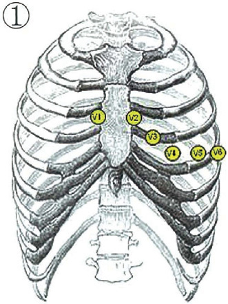
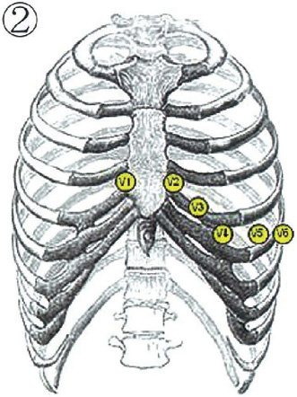
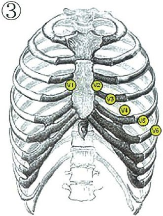
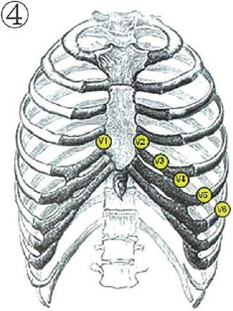
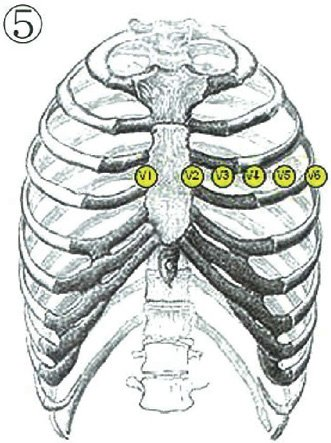
ａ ①
ｂ ②
ｃ ③
ｄ ④
ｅ ⑤
✅
ｂ ②
V1：胸骨右縁第4肋間、V4：第5肋間鎖骨中線上。電極位置を正確に確認する。
❤️ 胸部誘導の電極配置
V1：胸骨右縁第4肋間V2：胸骨左縁第4肋間
V3：V2とV4の中点
V4：第5肋間・鎖骨中線上
V5：V4と同じ高さ・前腋窩線
V6：V4と同じ高さ・中腋窩線
②がV4の正確な位置（第5肋間・鎖骨中線）に相当
🎯 国試ポイント
V1は胸骨右縁第4肋間（最重要）。V4は第5肋間・鎖骨中線。電極の位置誤りはHV（右室肥大）や梗塞の偽所見を作る。🔍 選択肢解説
胸部誘導の電極位置。a、c〜e：正しい肋間位置でない。
b ②：正しい胸部誘導の電極位置。✓
Q.59(104A-6)一般71%
我が国における心臓移植の現状について正しいのはどれか。
ａ 待機期間が短い。
ｂ 対象は若年者に限られている。
ｃ 施行数は急速に増加している。
ｄ 最も多い原疾患は虚血性心筋症である。
ｅ 移植前、強心薬治療と補助人工心臓装着とを受けている。
✅
ｅ 移植前、強心薬治療と補助人工心臓装着が必要な患者が多い。
日本は待機期間が長い→移植前に長期の補助人工心臓（VAD）装着が必要な患者が多い。
📋 各選択肢の検討
| 選択肢 | 判定 | 解説 |
| ａ 待機期間が短い | ✕ | 日本の待機期間は世界最長レベル（約3〜4年） |
| ｂ 対象は若年者に限られる | ✕ | 65歳未満が一般的な上限だが絶対的ではない |
| ｃ 施行数が急速に増加 | ✕ | 年間約50〜60例と少ない（法改正後も限定的） |
| ｄ 最多原疾患は虚血性心筋症 | ✕ | 日本の最多適応は拡張型心筋症（DCM、約50%） |
| ｅ VAD装着患者が多い | ○ | 長期待機→体外式・植込み型VAD装着後に移植 |
🎯 国試ポイント
日本の心臓移植：待機期間長（世界最長）＋施行数少（年間50〜60例）＋最多適応はDCM＋VAD装着後に移植が多い。🔍 選択肢解説
a 待機期間が短い：長く誤り。b 対象は若年者に限られる：誤り。
c 施行数は急速に増加：ドナー不足で少なく誤り。
d 最も多い原疾患は虚血性心筋症：拡張型心筋症で誤り。
e 移植前、強心薬治療と補助人工心臓装着を受けている：待機期間が長く補助人工心臓で橋渡し。✓
Q.60(104G-3)CBT一般95%
胸部大動脈から直接分枝する正常血管はどれか。
ａ 右総頸動脈
ｂ 右鎖骨下動脈
ｃ 右椎骨動脈
ｄ 内胸動脈
ｅ 気管支動脈
✅
ｅ 気管支動脈
気管支動脈は胸部下行大動脈（Th5〜6レベル）から直接分枝し、気管支・肺に血液供給。
📋 各選択肢の検討
| 選択肢 | 判定 | 解説 |
| ａ 右総頸動脈 | ✕ | 腕頭動脈→大動脈弓（間接） |
| ｂ 右鎖骨下動脈 | ✕ | 腕頭動脈→大動脈弓（間接） |
| ｃ 右椎骨動脈 | ✕ | 右鎖骨下動脈から分枝（間接） |
| ｄ 内胸動脈 | ✕ | 鎖骨下動脈から分枝（大動脈弓→鎖骨下動脈→内胸動脈） |
| ｅ 気管支動脈 | ○ | 胸部下行大動脈（Th5〜6）から直接分枝→肺への栄養血管 |
🎯 国試ポイント
胸部大動脈から直接分枝：気管支動脈・肋間動脈・食道動脈。大動脈弓からは腕頭動脈・左総頸・左鎖骨下動脈。🔍 選択肢解説
a 右総頸動脈〜c 右椎骨動脈：腕頭動脈系から。d 内胸動脈：鎖骨下動脈から。
e 気管支動脈：胸部下行大動脈から直接分枝。✓
Q.61(104H-20)必修一般📷 画像82%
心音の聴取部位の写真を示す。
大動脈弁領域はどれか。
大動脈弁領域はどれか。

ａ ①
ｂ ②
ｃ ③
ｄ ④
ｅ ⑤
✅
ａ ①
大動脈弁領域は胸骨右縁第2肋間（①）で聴取最強。
📋 心音の聴診部位
| 部位 | 位置 | 代表的な弁・所見 |
| 大動脈弁領域（①） | 胸骨右縁第2肋間 | AS・AI（拡張期雑音） |
| 肺動脈弁領域（②） | 胸骨左縁第2肋間 | PS・PI・Ⅱ音の分裂 |
| Erb点（③） | 胸骨左縁第3〜4肋間 | AI・心膜摩擦音 |
| 三尖弁領域（④） | 胸骨左縁第4〜5肋間 | TS・TR・Ⅰ音 |
| 僧帽弁領域（⑤） | 心尖部 | MS・MR・Ⅲ音・Ⅳ音 |
🎯 国試ポイント
大動脈弁領域=胸骨右縁第2肋間（①）。肺動脈弁領域=胸骨左縁第2肋間。心尖部=僧帽弁領域（最も多く雑音を聴く）。🔍 選択肢解説
心音の聴取部位で大動脈弁領域。a ①：胸骨右縁第2肋間(大動脈弁領域)。✓
b〜e：大動脈弁領域でない。
Q.62(103C-3)必修一般76%
血圧で正しいのはどれか。
ａ 起床時が最も低い。
ｂ 運動中は低下する。
ｃ 入浴後に上昇する。
ｄ 加齢とともに上昇する。
ｅ 上肢よりも下肢が低い。
✅
ｄ 加齢とともに上昇する。
加齢→大動脈硬化→収縮期血圧上昇→血圧は加齢とともに上昇傾向。
📋 各選択肢の検討
| 選択肢 | 判定 | 解説 |
| ａ 起床時が最も低い | ✕ | 血圧は通常早朝（起床後1〜2時間）に上昇（morning surge） |
| ｂ 運動中は低下 | ✕ | 運動中は心拍出量増加→収縮期血圧上昇（動的運動） |
| ｃ 入浴後に上昇 | ✕ | 入浴直後（湯から上がると）は血管拡張→血圧低下（急激な低下に注意） |
| ｄ 加齢とともに上昇 | ○ | 大動脈硬化→収縮期圧↑→加齢性高血圧 |
| ｅ 下肢が上肢より低い | ✕ | 健常者では下肢血圧（SBP）が上肢より高い（踝上腕比ABI>1.0が正常） |
🎯 国試ポイント
血圧の日内変動：早朝に高く、夜間は低い。運動→収縮期血圧↑、拡張期血圧→/↓。健常者ABI（足関節上腕血圧比）>1.0。🔍 選択肢解説
a 起床時が最も低い：早朝は上昇し誤り。b 運動中は低下する：上昇し誤り。
c 入浴後に上昇する：血管拡張で低下し誤り。
d 加齢とともに上昇する：正しい。✓
e 上肢よりも下肢が低い：下肢が高く誤り。
Q.63(103I-11)一般62%
総腸骨静脈血栓症が左側に好発する原因となるのはどれか。
ａ 左外腸骨動脈
ｂ 左総腸骨動脈
ｃ 右総腸骨動脈
ｄ 左閉鎖動脈
ｅ 右閉鎖動脈
✅
ｃ 右総腸骨動脈
右総腸骨動脈が左総腸骨静脈を圧迫（May-Thurner症候群）→左側に血栓が多発。
🫀 May-Thurner症候群
May-Thurner（Cockett）症候群：・解剖学的特徴：左総腸骨静脈が腰椎第5番と右総腸骨動脈の間で圧迫される
・右総腸骨動脈が左総腸骨静脈を前方から圧迫→慢性的な静脈壁傷害
→左下肢DVT（深部静脈血栓症）の好発
・若年女性に多い（骨盤内臓器・妊娠が関与）
🎯 国試ポイント
左総腸骨静脈血栓が右より多い→原因は右総腸骨動脈による圧迫（May-Thurner症候群）。DVT→肺塞栓症の原因。🔍 選択肢解説
a 左外腸骨動脈・b 左総腸骨動脈：圧迫の主因でない。c 右総腸骨動脈：右総腸骨動脈が左総腸骨静脈を圧迫(May-Thurner症候群)。✓
d 左閉鎖動脈・e 右閉鎖動脈：関与しない。
Q.64(102B-38)一般60%
胸骨背面に最も近接するのはどれか。
ａ 上・下大静脈
ｂ 右心房
ｃ 右心室
ｄ 左心房
ｅ 左心室
✅
ｃ 右心室
右心室は心臓の前面・胸骨の直後に位置する。
❤️ 心臓の前後位置関係
前方（胸骨側）から後方（食道側）への順：①右心室（前壁）：胸骨直後→最前方
②右心房（右側）
③左心室（後方・左側）
④左心房（最後方）：食道に最接近
📋 各構造の前後位置
| 構造 | 位置 | 臨床的意義 |
| 右心室 | 最前方（胸骨直後） | 胸部外傷で最初に損傷・心臓マッサージの圧迫点 |
| 右心房 | 前方・右側 | CVPカテーテルの先端位置 |
| 左心室 | 後方・左側 | 心尖拍動（第5肋間・鎖骨中線内側） |
| 左心房 | 最後方 | TEEで最もよく見える・肺静脈が流入 |
🎯 国試ポイント
胸骨背面に最も近接＝右心室。鈍的胸部外傷で右室挫傷が多い。CPR（心肺蘇生）で胸骨を圧迫→右室を通じて左室→大動脈へ送血。🔍 選択肢解説
a 上・下大静脈〜b 右心房：胸骨直下でない。c 右心室：胸骨背面に最も近接するのは右心室。✓
d 左心房・e 左心室：背側に位置する。
Q.65(102B-39)一般72%
安静時に心拍出量の約5％が灌流する臓器はどれか。
ａ 脳
ｂ 心
ｃ 肺
ｄ 肝
ｅ 腎
✅
ｂ 心（冠循環）
安静時の冠血流は心拍出量（5L/分）の約5%＝250mL/分。
📋 各臓器への安静時血流量
| 臓器 | 心拍出量に占める割合 | 血流量（心拍出量5L/分として） |
| 脳 | 約15% | 約750mL/分 |
| 心（冠循環） | 約5% | 約250mL/分→正解 |
| 肺 | 全量 | （肺循環は全心拍出量） |
| 肝臓（門脈+肝動脈） | 約25〜30% | 約1,250〜1,500mL/分 |
| 腎臓 | 約20〜25% | 約1,000〜1,250mL/分 |
🎯 国試ポイント
冠血流量は安静時の心拍出量の約5%（250mL/分）。運動時は最大5倍まで増加（冠血流予備能）。腎臓が最も血流豊富（重量あたり）。🔍 選択肢解説
a 脳：約15％。b 心：冠血流は心拍出量の約5％。✓
c 肺：全量が通過。
d 肝：約25％。
e 腎：約20％。
Q.66(102C-7)必修一般97%
健常成人で正しいのはどれか。
ａ 心尖拍動は前腋窩線で触知する。
ｂ 坐位で内頸静脈の拍動がみられる。
ｃ 収縮期血圧は上肢よりも下肢が高い。
ｄ Ⅱ音は呼気時に分裂して聴取される。
ｅ Ⅲ音はベル型聴診器よりも膜型聴診器で聴取しやすい。
✅
ｃ 収縮期血圧は上肢よりも下肢が高い。
下肢の収縮期血圧は上肢より高い（ABI>1.0が正常）。末梢に向かうにつれ収縮期圧が高くなる。
📋 各選択肢の検討
| 選択肢 | 判定 | 解説 |
| ａ 心尖拍動は前腋窩線で触知 | ✕ | 心尖拍動は第5肋間鎖骨中線内側（前腋窩線より内側） |
| ｂ 座位で内頸静脈拍動がみられる | ✕ | 正常の静脈圧では45°頭部挙上位で内頸静脈拍動が頸部で見える |
| ｃ 下肢収縮期血圧が上肢より高い | ○ | 反射波の加算→末梢ほど収縮期血圧高い（ABI>1.0）。<1.0は閉塞性動脈硬化症を示唆 |
| ｄ Ⅱ音は呼気時に分裂 | ✕ | Ⅱ音の生理的分裂は吸気時（A₂-P₂分離が拡大） |
| ｅ Ⅲ音はベル型より膜型で聴取 | ✕ | Ⅲ音は低調音→ベル型聴診器で聴取（膜型は高調音向き） |
🎯 国試ポイント
下肢SBP>上肢SBP（ABI>1.0）が正常。ABI<0.9→閉塞性動脈硬化症（ASO）。🔍 選択肢解説
a 心尖拍動は前腋窩線で触知：鎖骨中線内側で誤り。b 坐位で内頸静脈の拍動がみられる：坐位では消失し誤り。
c 収縮期血圧は上肢よりも下肢が高い：正しい。✓
d Ⅱ音は呼気時に分裂：吸気時に分裂し誤り。
e Ⅲ音は膜型で聴取しやすい：低調でベル型が適し誤り。
Q.67(102E-6)一般92%
腹部大動脈から分枝するのはどれか。
ａ 子宮動脈
ｂ 上殿動脈
ｃ 上膀胱動脈
ｄ 閉鎖動脈
ｅ 卵巣動脈
✅
ｅ 卵巣動脈
卵巣動脈（精巣動脈）は腹部大動脈（L2レベル）から直接分枝。
📋 各選択肢の検討
| 選択肢 | 判定 | 解説 |
| ａ 子宮動脈 | ✕ | 子宮動脈は内腸骨動脈（骨盤内）から分枝 |
| ｂ 上殿動脈 | ✕ | 上殿動脈は内腸骨動脈から分枝 |
| ｃ 上膀胱動脈 | ✕ | 上膀胱動脈は内腸骨動脈（臍動脈から）から分枝 |
| ｄ 閉鎖動脈 | ✕ | 閉鎖動脈は内腸骨動脈から分枝 |
| ｅ 卵巣動脈 | ○ | 腹部大動脈L2〜L3レベルから直接分枝（精巣動脈も同様） |
🎯 国試ポイント
腹部大動脈の直接分枝：腹腔動脈・SMA・腎動脈・精巣/卵巣動脈・IMA・総腸骨動脈。骨盤臓器（子宮・膀胱・直腸）は内腸骨動脈系から血流供給。🔍 選択肢解説
a 子宮動脈〜d 閉鎖動脈：内腸骨動脈から分枝。e 卵巣動脈：腹部大動脈から直接分枝(性腺動脈)。✓
Q.68(101B-33)一般74%
心拍出量が増加するのはどれか。
ａ 心拍数減少
ｂ 循環血液量減少
ｃ 心筋収縮性低下
ｄ 心筋拡張性低下
ｅ 末梢血管抵抗低下
✅
ｅ 末梢血管抵抗低下
末梢血管抵抗（後負荷）低下→心室が射出しやすくなる→一回拍出量増加→心拍出量増加。
📋 各選択肢の検討
| 選択肢 | 判定 | 解説 |
| ａ 心拍数減少 | CO↓ | CO=SV×HR。HR↓→CO↓（代償がなければ） |
| ｂ 循環血液量減少 | CO↓ | 前負荷↓→Frank-Starling↓→SV↓→CO↓ |
| ｃ 心筋収縮性低下 | CO↓ | 収縮力↓→SV↓→CO↓ |
| ｄ 心筋拡張性低下 | CO↓ | 拡張障害→充満不十分→前負荷↓→CO↓ |
| ｅ 末梢血管抵抗低下（後負荷↓） | CO↑ | 後負荷↓→射出しやすい→SV↑→CO↑ |
🎯 国試ポイント
後負荷↓→CO↑の代表例：ACE阻害薬・ARB・α遮断薬・IABP。Q5と同テーマ。🔍 選択肢解説
a 心拍数減少：心拍出量が減少。b 循環血液量減少：減少。
c 心筋収縮性低下：減少。
d 心筋拡張性低下：減少。
e 末梢血管抵抗低下：後負荷減少で心拍出量が増加。✓
Q.69(101C-21)必修一般58%
Ⅲ音の聴取で正しいのはどれか。
ａ Ⅰ音の前後に注目する。
ｂ 左側臥位で聴取しやすい。
ｃ 聴診器は膜型を使用する。
ｄ 下肢を挙上すると減弱する。
ｅ 胸骨左縁第4 肋間で最強となる。
✅
ｂ 左側臥位で聴取しやすい。
Ⅲ音は心尖部で最強→左側臥位で心尖が胸壁に近づく→聴取しやすくなる。
📋 各選択肢の検討（Q16・Q55参照）
| 選択肢 | 判定 | 解説 |
| ａ Ⅰ音の前後に注目 | ✕ | Ⅲ音はⅡ音の直後（拡張早期）に注目 |
| ｂ 左側臥位で聴取しやすい | ○ | 左側臥位→心尖部が胸壁に近づく→Ⅲ音増強 |
| ｃ 聴診器は膜型を使用 | ✕ | Ⅲ音は低調音→ベル型で聴取 |
| ｄ 下肢を挙上すると減弱 | ✕ | 下肢挙上→静脈還流↑→前負荷↑→Ⅲ音は増強 |
| ｅ 胸骨左縁第4肋間で最強 | ✕ | Ⅲ音は心尖部（僧帽弁領域）で最強（三尖弁Ⅲ音は胸骨左縁第4〜5肋間） |
🎯 国試ポイント
Ⅲ音の聴き方：心尖部・ベル型・左側臥位で増強。Q16・Q55と同テーマ。下肢挙上（前負荷増加）→Ⅲ音増強（心不全評価に使える）。🔍 選択肢解説
a Ⅰ音の前後に注目する：Ⅱ音の後(拡張早期)で誤り。b 左側臥位で聴取しやすい：正しい。✓
c 聴診器は膜型を使用する：ベル型で誤り。
d 下肢を挙上すると減弱する：増強し誤り。
e 胸骨左縁第4肋間で最強：心尖部で誤り。
Q.70(101D-23)必修臨床75%
74 歳の男性。術中の血圧を測定するため、橈骨動脈に留置針を挿入する予定である。その可否をみるために次の手順で検査を行った。① 母指を中にして手を強く握らせる。② 橈骨動脈と尺骨動脈とを用手的に圧迫する。③ 圧迫をしたまま手を開かせて色調が蒼白になっていることを確認する。④ 橈骨動脈の圧迫を解除する。⑤ 手の色調が速やかに赤色に戻ることを確認する。
手順で誤っているのはどれか。
手順で誤っているのはどれか。
ａ ①
ｂ ②
ｃ ③
ｄ ④
ｅ ⑤
✅
ｄ ④
Allen試験：橈骨動脈・尺骨動脈を閉塞後に片側を解放→掌の発赤回復で側副血行を確認。
🖐 Allen試験の手順
①手を強く握る（静脈血を排出）②橈骨動脈と尺骨動脈を同時に強く押さえる
③手を開く（蒼白になる）
④尺骨動脈側の圧迫を解除→掌の発赤回復を確認
⑤発赤回復が7〜15秒以内→側副血行良好→橈骨動脈採血・ライン挿入OK
④の段階（尺骨動脈解放後の発赤確認）が正解
🎯 国試ポイント
Allen試験陽性（発赤回復良好）→橈骨動脈ライン挿入OK。陰性（回復不良）→尺骨動脈の側副血行不良→橈骨動脈閉塞で手の虚血リスク。🔍 選択肢解説
Allen試験の手順。a ①〜c ③：手順として正しい。
d ④(橈骨動脈の圧迫を解除する)：尺骨動脈の圧迫を解除して尺骨側の血流を確認すべきで誤り。✓
e ⑤：正しい。
Q.71(100B-27)一般71%
高齢者の高血圧症で正しいのはどれか。
ａ 血圧の変動が大きい。
ｂ 拡張期高血圧症が多い。
ｃ 高血圧性臓器障害の頻度が低い。
ｄ 降圧薬療法で脳血管障害は減少しない。
ｅ 生活習慣の改善で降圧効果は期待できない。
✅
ａ 血圧の変動が大きい。
高齢者は圧受容体感受性低下・自律神経機能低下→血圧変動（日内・体位・食後）が大きい。
📋 各選択肢の検討
| 選択肢 | 判定 | 解説 |
| ａ 血圧変動が大きい | ○ | 圧受容体反射低下→日内変動・白衣高血圧・食後低血圧が顕著 |
| ｂ 拡張期高血圧が多い | ✕ | 高齢者は収縮期高血圧（孤立性）が主体（Q36・Q44参照） |
| ｃ 高血圧性臓器障害の頻度が低い | ✕ | 高齢者ほど臓器障害（脳卒中・心臓病・腎症）のリスクが高い |
| ｄ 降圧薬療法で脳血管障害は減少しない | ✕ | 降圧治療で脳卒中リスクが有意に減少（エビデンス多数） |
| ｅ 生活習慣の改善で降圧効果なし | ✕ | 塩分制限・運動・節酒は高齢者でも降圧効果あり |
🎯 国試ポイント
高齢者高血圧の特徴：血圧変動大・収縮期高血圧・臓器障害リスク高・降圧効果あり。🔍 選択肢解説
a 血圧の変動が大きい：正しい。✓b 拡張期高血圧症が多い：収縮期高血圧が多く誤り。
c 高血圧性臓器障害の頻度が低い：高く誤り。
d 降圧薬療法で脳血管障害は減少しない：減少し誤り。
e 生活習慣改善で降圧効果は期待できない：期待でき誤り。
Q.72(100G-40)一般87%
脈管の走行で正しいのはどれか。
ａ 内頸静脈は総頸動脈の内側を走行する。
ｂ 鎖骨下静脈は鎖骨と第1 肋骨の間を走行する。
ｃ 胸管は右鎖骨下静脈に合流することが多い。
ｄ 肋間動脈は肋骨上縁を走行する。
ｅ 大腿静脈は大腿動脈の外側を走行する。
✅
ｂ 鎖骨下静脈は鎖骨と第1肋骨の間を走行する。
鎖骨下静脈は鎖骨の後下方・第1肋骨の前上方を通過（鎖肋間）→内頸静脈と合流して腕頭静脈。
📋 各選択肢の検討
| 選択肢 | 判定 | 解説 |
| ａ 内頸静脈が総頸動脈の内側 | ✕ | 内頸静脈は総頸動脈の外側を走行（VAN：静脈・動脈・神経の順に内→外） |
| ｂ 鎖骨下静脈が鎖骨と第1肋骨の間 | ○ | 鎖骨と第1肋骨の間→中心静脈カテーテル挿入の解剖的ランドマーク |
| ｃ 胸管が右鎖骨下静脈に合流 | ✕ | 胸管は左鎖骨下静脈（左静脈角）に合流（右リンパ本管は右に合流） |
| ｄ 肋間動脈が肋骨上縁を走行 | ✕ | 肋間動脈・神経は肋骨下縁（肋骨溝）を走行→胸腔穿刺は肋骨上縁を狙う |
| ｅ 大腿静脈が大腿動脈の外側 | ✕ | 大腿静脈は大腿動脈の内側（NAVEL：神経・動脈・静脈・空間・リンパ節） |
🎯 国試ポイント
鎖骨下静脈=鎖骨後下方・第1肋骨前上方。鎖骨下静脈穿刺（CVC）：鎖骨下1cmの外側1/3を内側に向けて穿刺。肋骨下縁に沿って穿刺→胸腔穿刺の原則。🔍 選択肢解説
a 内頸静脈は総頸動脈の内側を走行：外側で誤り。b 鎖骨下静脈は鎖骨と第1肋骨の間を走行する：正しい。✓
c 胸管は右鎖骨下静脈に合流：左で誤り。
d 肋間動脈は肋骨上縁を走行：肋骨下縁で誤り。
e 大腿静脈は大腿動脈の外側を走行：内側で誤り。
Q.73(99B-16)必修一般
上腕での血圧測定で正しいのはどれか。
ａ 上腕は肩の高さに保つ。
ｂ 聴診器のヘッドを圧迫帯の中に入れる。
ｃ 圧迫帯の遠位端が肘窩にくるように巻く。
ｄ 圧迫帯は上腕にきつく巻く。
ｅ カフ〈ゴム囊〉の中央が上腕動脈にあたるように巻く。
✅
ｅ カフ（ゴム囊）の中央が上腕動脈にあたるように巻く。
Q56と同テーマ。ゴム囊の中央を上腕動脈に合わせて装着するのが基本。
📋 各選択肢の検討（Q18・Q56参照）
| 選択肢 | 判定 | 解説 |
| ａ 上腕は肩の高さに保つ | ✕ | 上腕を心臓の高さ（肘窩が心臓の高さ）に保つ |
| ｂ 聴診器のヘッドを圧迫帯の中に入れる | ✕ | 聴診器は圧迫帯の遠位端（肘窩に位置する動脈上）に置く。圧迫帯の中には入れない |
| ｃ 圧迫帯の遠位端が肘窩にくるように | ✕ | 圧迫帯の下端は肘窩から約2〜3cm上方（聴診スペースを確保） |
| ｄ 圧迫帯はきつく巻く | ✕ | 指1〜2本入るくらいの適度な強さ（きつすぎると高値に偽測定） |
| ｅ カフの中央が上腕動脈 | ○ | ゴム囊の中央が動脈に合うと適切な圧迫→正確な測定 |
🎯 国試ポイント
血圧測定の原則：①心臓の高さ②カフの中央を動脈上③肘窩から2〜3cm上（下端）④2〜4mmHg/秒で減圧⑤Ⅰ相=収縮期・Ⅴ相=拡張期。🔍 選択肢解説
a 上腕は肩の高さに保つ：心臓の高さで誤り。b 聴診器のヘッドを圧迫帯の中に入れる：不適。
c 圧迫帯の遠位端が肘窩にくる：上方に巻き誤り。
d 圧迫帯は上腕にきつく巻く：適度に巻き誤り。
e カフの中央が上腕動脈にあたるように巻く：正しい。✓
Q.74(99D-36)一般
房室結節への血流供給をすることが多いのはどれか。
ａ 右冠動脈
ｂ 左回旋枝
ｃ 中隔枝
ｄ 左前下行枝
ｅ 対角枝
✅
ａ 右冠動脈
房室結節は右冠動脈の房室結節枝（後室間枝付近）が血流供給（右優位型が約80%）。
❤️ 刺激伝導系への血流供給
洞結節：主に右冠動脈（洞結節枝、約60%）または左回旋枝（40%）房室結節：主に右冠動脈（房室結節枝）（右優位型の場合）
His束・右脚：主に左前下行枝（LAD）
左脚前枝：主にLAD
左脚後枝：LADと右冠動脈の両方から
🎯 国試ポイント
洞結節・房室結節→主に右冠動脈（右優位型の場合）。下壁心筋梗塞（右冠動脈閉塞）→洞不全症候群・房室ブロックの合併が多い。🔍 選択肢解説
a 右冠動脈：房室結節枝は約90％で右冠動脈から供給。✓b 左回旋枝〜e 対角枝：主たる供給源でない。
Q.75(99D-43)一般3択
正しいのはどれか。3 つ選べ。
ａ 右冠動脈はValsalva 洞の右前方から起始する。
ｂ 右鎖骨下動脈は胸部大動脈から分岐する。
ｃ 左鎖骨下動脈は総頸動脈から分岐する。
ｄ 左内胸動脈は左鎖骨下動脈から分岐する。
ｅ 総腸骨動脈は外腸骨動脈と内腸骨動脈とに分岐する。
✅
ａ 右冠動脈はValsalva洞の右前方から起始する。 ＋ ｄ 左内胸動脈は左鎖骨下動脈から分枝する。 ＋ ｅ 総腸骨動脈は外腸骨動脈と内腸骨動脈とに分かれる。
右冠動脈は右前Valsalva洞から起始。LITA（内胸動脈）は左鎖骨下動脈から。総腸骨→外腸骨＋内腸骨。
📋 各選択肢の検討
| 選択肢 | 判定 | 解説 |
| ａ 右冠動脈は右前Valsalva洞から | ○ | 右冠動脈：右前Valsalva洞（右冠尖直上）から起始 |
| ｂ 右鎖骨下動脈は胸部大動脈から | ✕ | 右鎖骨下動脈は腕頭動脈（大動脈弓→腕頭動脈→右鎖骨下・右総頸） |
| ｃ 左鎖骨下動脈は総頸動脈から | ✕ | 左鎖骨下動脈は大動脈弓から直接分枝（総頸動脈からではない） |
| ｄ 左内胸動脈→左鎖骨下動脈から | ○ | LITA（内胸動脈）：左鎖骨下動脈の第1枝→CABG graftsに重要 |
| ｅ 総腸骨動脈→外腸骨＋内腸骨 | ○ | L4レベルで腹部大動脈が左右総腸骨動脈に分岐→各々が外腸骨（下肢）＋内腸骨（骨盤）に分岐 |
🎯 国試ポイント
左右Valsalva洞から左右冠動脈が起始。LITA→左鎖骨下動脈（Q17参照）。🔍 選択肢解説
a 右冠動脈はValsalva洞の右前方から起始する：正しい。✓b 右鎖骨下動脈は胸部大動脈から分岐：腕頭動脈からで誤り。
c 左鎖骨下動脈は総頸動脈から分岐：大動脈弓から直接で誤り。
d 左内胸動脈は左鎖骨下動脈から分岐する：正しい。✓
e 総腸骨動脈は外腸骨動脈と内腸骨動脈に分岐する：正しい。✓
Q.76(98G-34)一般
心臓の刺激伝導系で正しいのはどれか。
ａ 洞結節は下大静脈にある。
ｂ 房室結節は右房にある。
ｃ His 束は左房にある。
ｄ 右脚は右房にある。
ｅ Purkinje 線維は心内膜内にある。
✅
ｂ 房室結節は右房にある。
房室結節（Koch三角）は右心房の下後部（三尖弁輪・冠状静脈洞・膜性中隔の三角形の内）に位置。
📋 各選択肢の検討（Q25参照）
| 選択肢 | 判定 | 解説 |
| ａ 洞結節は下大静脈にある | ✕ | 洞結節は上大静脈と右心耳の接合部（上大静脈右房接合部） |
| ｂ 房室結節は右房にある | ○ | Koch三角（右房下部）に位置 |
| ｃ His束は左房にある | ✕ | His束は心室中隔の上部を走行（房室結節から続く） |
| ｄ 右脚は右房にある | ✕ | 右脚は心室中隔の右側を走行して右室心筋に分布 |
| ｅ Purkinje線維は心内膜内にある | ✕ | Purkinje線維は心内膜直下の心筋内に分布（心内膜ではなく心筋層） |
🎯 国試ポイント
刺激伝導系の位置：洞結節（上大静脈・右房接合部）→房室結節（右房・Koch三角）→His束（心室中隔上部）→左右脚（中隔）→Purkinje線維（心内膜下）。🔍 選択肢解説
a 洞結節は下大静脈にある：上大静脈開口部で誤り。b 房室結節は右房にある：正しい。✓
c His束は左房にある：心室中隔で誤り。
d 右脚は右房にある：心室中隔で誤り。
e Purkinje線維は心内膜内にある：心内膜下にある(本問の正解はb)。
Q.77(98G-35)一般2択
正しいのはどれか。2 つ選べ。
ａ 左肺動脈は上行大動脈の前方に位置する。
ｂ 右冠状動脈は右Valsalva 洞から出る。
ｃ 胸管は左鎖骨下静脈に還流する。
ｄ 下大静脈は下行大動脈の左にある。
ｅ 大腿動脈は大腿静脈の内側にある。
✅
ｂ 右冠状動脈は右Valsalva洞から起始する。 ＋ ｃ 胸管は左鎖骨下静脈に還流する。
右冠動脈は右（前）Valsalva洞から起始。胸管は左静脈角（左鎖骨下静脈＋左内頸静脈合流点）に合流。
📋 各選択肢の検討
| 選択肢 | 判定 | 解説 |
| ａ 左肺動脈が上行大動脈の前方 | ✕ | 左肺動脈は上行大動脈の後方を通り左肺門へ |
| ｂ 右冠動脈は右Valsalva洞から | ○ | 右冠動脈：右前Valsalva洞（大動脈弁右冠尖直上）から起始（Q75参照） |
| ｃ 胸管は左鎖骨下静脈に還流 | ○ | 胸管は全身のリンパを集め左静脈角（左鎖骨下静脈・左内頸静脈合流部）に合流 |
| ｄ 下大静脈は下行大動脈の左 | ✕ | 下大静脈は下行大動脈の右側を走行 |
| ｅ 大腿動脈が大腿静脈の内側 | ✕ | 大腿動脈は大腿静脈の外側（静脈が内側・動脈が外側） |
🎯 国試ポイント
胸管→左静脈角（左鎖骨下静脈・左内頸静脈合流部）に合流。右鎖骨下では右リンパ本管が合流。大腿三角：内側から静脈→動脈→神経（VAN）。🔍 選択肢解説
a 左肺動脈は上行大動脈の前方に位置：後方で誤り。b 右冠状動脈は右Valsalva洞から出る：正しい。✓
c 胸管は左鎖骨下静脈に還流する：正しい。✓
d 下大静脈は下行大動脈の左にある：右にあり誤り。
e 大腿動脈は大腿静脈の内側にある：外側にあり誤り。